Design study and ngspice simulations of a successor to the SR560 class of laboratory preamplifiers.
This note was created with significant AI assistance. It may contain errors, so check the cited datasheet pages, tables and scripts before relying on a figure. None of the circuits has been built yet: every result here is verified only in simulation. The note itself is dedicated to the public domain under CC0 1.0; no copyright is reserved. The manufacturers’ SPICE models are not covered and not included: each remains under its vendor’s terms, and each must be downloaded from its vendor to reproduce the simulations (
sim/models/README.md).
This note works out, and checks in ngspice, a differential voltage preamplifier meant to replace an SRS SR560 or an NF 5307 on the bench: DC-coupled, gains from 1 to 100 000, two configurable filters, a 50 Ω output, and the lowest input voltage noise that the input impedance allows. It starts from the physics of the noise floor (Section 1), reproduces the SR560 from its schematics as the benchmark (Section 2), surveys today’s low-noise JFETs and shows how to choose among them (Section 3), describes the new design block by block (Section 4), explains how it was simulated and which vendor models had to be corrected (Section 5), and presents the results (Section 6). Section 7 lists what is not verified. Appendix A collects the ngspice pitfalls met on the way, and Appendix B describes a common-mode servo that the front ends could add.
In short. The new design has two switchable front ends of the same current-feedback topology (Section 4.2):
sim/results/zin_numbers.json). Its front end has two selectable gain ranges, ×10 and ×100: a relay switches between 111 Ω and 10.1 Ω with = 500 Ω, so that = 10.0 or 100.0 (Table 6). The low-noise mode uses ×100 from a total gain of 100 up and ×10 below; the high-reserve mode keeps ×10 at total gains of 100–1000, for 20 dB more headroom at the input at 2.3–2.5 times the noise (Table 10). H covers total gains from 1 to 50 000.scripts/numbers_s1_3.py between the grid points of Section 6.2, Table 11: 30–100 Ω, 300 Ω–1 kΩ and 10–100 kΩ), and H above them. Between about 3 kΩ and 200 kΩ at 1 kHz the two differ by less than 1 %.Roles of the two front ends. No single input is the quietest for every source. Paralleling JFETs is the only way to lower the voltage noise, which dominates with low source resistances, but it raises the input capacitance and the current noise, which dominate with high ones (Sections 1.2–1.4). L spends capacitance (250 pF per input) and current (60 mA of JFET current per side) on the lowest voltage noise, and is meant for low source resistances and small signals (total gains from 200 up). H keeps 20 pF and the 100 MΩ input of the SR560 class, serves the low gains and the high-reserve mode, and is the general-purpose input (Section 4.1.1).
The full chain reaches −3 dB at 14.82–14.84 MHz (H, gain ≥ 100), 24.9–25.0 MHz (H with the front end at ×10: gain ≤ 10 and the high-reserve mode) and 16.5 MHz (L), and at 10 MHz it is 0.37 dB (H, gain ≥ 100), 0.41–0.42 dB (H, front end at ×10) and 0.82 dB (L) below its midband gain (Table 12, sim/results/chain_ac.json). Against the SR560 reproduced in the same simulator (Section 2.2), H is = 2.9 to = 5.1 times quieter at 1 kHz and L = 7.5 to = 13.3 times (gain 1000): the reproduction gives 5.7 nV/√Hz at 1 kHz (3.2 nV/√Hz white) with the NPD5564 of the SR560’s manual, and 3.23 nV/√Hz (3.21 white) with the LSK389B that a user found in a newer unit. Its bandwidth, 0.73–0.79 MHz as drawn, becomes 1.04–1.17 MHz once C406 and C301 are set as the parts list gives them and the op amps get their data sheets’ open-loop gain and phase. The new chain has to = 14 times (H, gain 100) and to = 15–16 times (L, gain 1000) the bandwidth of these corrected models at the same gain ( = 20 and = 23 times that of the model as drawn), and 15–17 times the 1 MHz of the SR560’s manual (printed p. 5; 12–14 times the 1.2 MHz typical of its data sheet, p. 3; scripts/numbers_s1_3.py). Against the NF 5307, the DC–10 MHz differential amplifier that matches the remembered 1980s NF unit (specified at 4 nV/√Hz, about 3 nV/√Hz in NF’s own plot; Section 2.4), H is to = 2.6–2.9 times quieter than the plotted white noise and = 3.6 times quieter than the specification at 1 kHz, at the same input capacitance class, and L to = 6.7–7.4 and = 9.3 times. The median common-mode rejection over 12 Monte Carlo trials with 0.1 % resistors (σ 0.05 %), a 0.01 % network in the difference amplifier (σ 0.005 %) and matched JFETs (scripts/cmrr_mc.py) is 124 dB at 1 kHz and, with the inputs driven directly, 95 dB at 1 MHz (H; L 98 dB), against about 85 dB at 1 MHz and a gain of 100 in NF’s plot for the 5307 (its web data sheet, refs/commercial_preamps/NF_Corporation/NF_5307_datasheet_fig46.jpg, read by eye). Distortion at 1 Vpp is 0.0009 % at 1 MHz and 0.012 % at 10 MHz (H, gain 100), and a 10 V step slews at 312 V/µs.
Three findings of the work are worth knowing beyond this design:
sim/results/jfet_table3.json).sim/results/model_defects.json). TI’s JFE2140 model has 14 times too little 1/f noise power; Linear Systems’ LSBF862 model has 50 times too much; LTspice’s 2N5564 card has a KF that is a million times too large through a unit-prefix error; TI’s THS4021, THS4031 and THS3091 macromodels overstate the voltage noise at 10 Hz by 4.6–5.7 times, and the first two the current noise at 10 Hz by 16 times; the THS3091 model has 0.11 times the data sheet’s white inverting-input current noise; and the LM7171 model 0.48 times its white voltage noise. Every one was corrected against its data sheet before use.sim/results/osc_check.json), inside the loop op amp’s own local loop, which a Middlebrook injection at does not see. A transient run found it, and a return ratio taken at the op amp’s output pin explains it. A capacitor from each summing node to ground cures it, at the cost of half the bandwidth (at a total gain of 100 the chain’s falls from 30.1 to 14.82 MHz, = 0.49) and a rise of the noise above a few MHz (Section 4.3). Section 4.3.1 then examines the fix and its alternatives:
sim/results/stability_corners.json; Section 4.3.1).sim/results/lv_option.json), but its rails limit the front end: it delivers at most 6.0 V of differential output, where a total gain of 100 needs 10 V, and its common-mode range is −3.2 V to +0.09 V at 1 V of output, the full scale at total gains of 1000 and up, and empty at 10 V (estimated from the operating point, sim/results/lv_option_range.json). Its model’s 1/f is unverified.In saturation, a JFET’s drain current noise is the thermal noise of its channel, per hertz, plus flicker noise. Referred to the gate, it is a voltage noise
(1)
where is 2/3 for a long channel (Spieler 1999, p. 3; Leach 1994, p. 1531) and is the square-law coefficient of . The second term is the SPICE flicker-noise model ( with = 1), which is independent of the drain current once referred to the gate. Real low-noise JFETs are noisier than the first term with = 2/3: the gate and source resistances and short-channel effects add to it. The JFE150 at 5 mA and 5 V, for example, has = 25.9 mS in TI’s model (sim/results/jfet_calibration.json), so = 0.65 nV/√Hz at 27 °C (scripts/noise_theory.py; ngspice gives 0.70 nV/√Hz with the card’s source resistance, Section 3.4), against 0.8 nV/√Hz in its data sheet (Table 6.5 of SLPS732B). The white noise falls as , so each doubling of the current multiplies it by = 0.84, a gain of only 16 %, and the data sheets show it levelling off above a few milliamperes (Figure 5).
The gate current adds a current noise : 0.57 fA/√Hz at 1 pA, 18 fA/√Hz at 1 nA (scripts/noise_theory.py). It matters only where approaches , i.e. for source impedances above : with = 1 nV/√Hz, 1.77 MΩ at 1 pA and 55.9 kΩ at 1 nA of gate current. The gate current of a JFET grows steeply with the drain-gate voltage through impact ionization; the TI parts stay near 1 pA up to about 5 V of drain-source voltage and reach 0.4–4 nA at 10 V for drain currents of 1–10 mA (SLPS732B Fig. 6-5 for the JFE150, SLPS730B Fig. 6-6 for the JFE2140, read off the curves), which is one reason to cascode them (Section 4.2).
identical JFETs in parallel, each at the same drain current, have times the transconductance, times the flicker-noise current and times the capacitance:
(2)
Both terms of Eq. (1) fall by in power: the 1/f term because scales with the total gate width (Radeka 2020, pp. 459–460; Leach 1994, Eqs. (64)–(65)). Paralleling is therefore the only way to lower the voltage noise below a single device’s floor, and it costs capacitance, current and gate leakage in proportion. Paralleled JFETs share the current only as well as their threshold voltages match. A standard deviation of 85 mV in , the value the Monte Carlo of Section 6.4 assumes for unsorted JFE150 (about = 86 mV: the data sheet’s range of −1.5 to −0.9 V, SLPS732B p. 5, taken as ±3.5σ, an assumption), shifts each device’s current by = = 42 % at 5 mA (scripts/noise_theory.py), so the devices of one side must come from one bin (Section 4.6).
Seen from a source impedance , an amplifier with series voltage noise , parallel current noise and input capacitance adds to the source’s own thermal noise
(3)
The first term is the problem: the channel noise that drives through . With a resistive source and paralleled devices, the amplifier’s part is smallest at
(4)
the point where the array’s reactance equals the source resistance. This is the frequency-domain form of capacitive matching (Spieler 1999, pp. 4–6; O’Connor et al. 1997, slide 2): at constant current density, the optimum input capacitance equals the source’s capacitance, ; at constant total current, (also Brookhaven’s ICFA95 slides, their Eq. (3)), a result derived for MOSFETs in strong inversion, whose scales as the JFET’s does with . Figure 1b evaluates Eq. (4) for the JFE150. At 1 kHz, a single JFET is never too large for any practical source, and the optimum count is limited by current and board space. At 10 MHz, twelve JFE150 per side, the L front end’s array, is the optimum for = 55 Ω, and beyond = 663 Ω of source resistance the optimum is a single device or fewer (scripts/noise_theory.py). The noise figure for a resistive source follows from Eq. (3):
(5)
If the input capacitance may not exceed , a part with single-device capacitance can be paralleled times, and Eq. (2) gives
(6)
So for every capacitance budget the part with the lowest , taken at its own best current, gives the lowest noise. Lines of constant are straight lines of slope −1/2 on a log-log plot of against (Figure 4). A differential input has two such inputs in series, so its noise is of one side (Leach 1994, Eq. (68)), 3 dB worse than a single-ended input with the same JFETs; this is the price of true differential operation, and Figure 1a includes it.
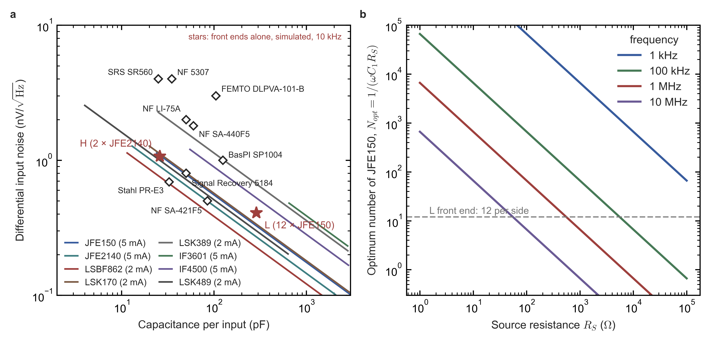
Figure 1. (a) Differential input noise against the capacitance per input for paralleled JFETs of eight types at their data-sheet operating points (Eqs. (2) and (6), with the √2 of a differential input), the commercial instruments of Table 2 (diamonds: their specified and input capacitance; the FEMTO DLPVA-101-B at its differential 3.0 nV/√Hz, the Stahl PR-E3 with its two single-ended channels connected in parallel, 0.69 nV/√Hz at 2 × 16.4 = 32.8 pF, data sheet v3.12 p. 5) and the two new front ends (stars: the front end alone, simulated at 10 kHz, 1.07 nV/√Hz for H and 0.41 nV/√Hz for L, sim/results/curves_noise.npz, plotted at the JFETs’ own 26 and 288 pF; with the input network the effective input capacitance is 20 pF for H and 250 pF for L, sim/results/zin_numbers.json). (b) The optimum number of JFE150 per input against the source resistance at four frequencies, Eq. (4).
Everything between the JFETs and the output adds its own noise, divided by the gain that precedes it. In the current-feedback front end of this note (Section 4.2) the gain-setting resistor sits directly between the two source nodes, so its thermal noise appears at the input almost in full, with the weight of Eq. (9): is 0.41 nV/√Hz for H’s 10.1 Ω and 0.20 nV/√Hz for L’s 2.49 Ω. It is the second-largest contributor in both, after the JFETs. The drain resistors that supply the JFETs’ current inject their current noise into the summing node. The loop must cancel it with a JFET current, which moves the source node by . The same current must also flow through , and the gain refers that to the input as , per side. The loop op amps’ input current noise does the same, and so does their voltage noise wherever it drives a capacitance at the summing node, . Spinelli and Haberman (2024, Eqs. (16)–(18)) keep only the part of this weight (Section 4.2, Eq. (9), and Figure 9b). These terms favour a large total , i.e. many JFETs at high current, and a small . A resistor that sets a current with a voltage across it, like , has a noise current times the shot noise of that current (Eq. (12a)), so it wants a large voltage. Section 6.1 gives the simulated breakdown.
The SR560 (manual Rev. 3.1, schematics on PDF pp. 47–56) is a DC-coupled preamplifier with a gain of 1 to 50 000 (manual, printed p. 5), two first-order filters (6 dB/octave, data sheet p. 3) and a 50 Ω output (R438, 49.9 Ω, to J405 on sheet 560_4F, PDF p. 50). Its signal path, as read from sheets 560_1F to 560_4F, is:
The front end is the classic “designs by the masters” circuit that The Art of Electronics discusses in its Section 8.6.4 (3rd ed., p. 512; the book’s text could not be read for this note, so nothing here relies on it). Its noise comes from three places: the single JFET pair, the 220 Ω of source resistors in the differential path, and the drain loads and OP37 behind a modest gain.
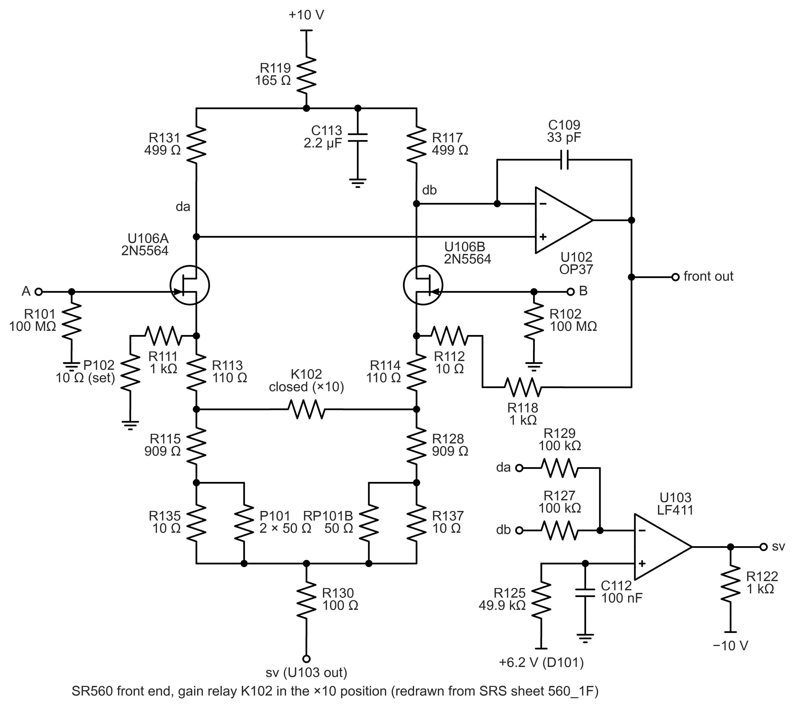
Figure 2. The SR560’s front end in the ×10 position of K102, redrawn from SRS sheet 560_1F and checked part by part against the simulated netlist (scripts/sr560_frontend.py). R120, R121, C108 (offset trim), R116, C116 (×2 path), C110 and R136 are in the netlist but not drawn.
The whole signal path was rebuilt as a netlist (scripts/sr560_chain.py), with the NPD5564 modelled by Linear Systems’ 2N5564 card recalibrated to Vishay’s 2N5564 data sheet (Section 3.4), the op amps as behavioural models with their data sheets’ typical noise, bandwidth and slew rate, and the switches as their on-resistances. The gain allocation is not documented by SRS; the one used here (front end ×10 from a gain of 100 up in the low-noise mode, gain placed as late as possible in the high-reserve mode) reproduces the manual’s table of noise against gain (Table 1). Three models of it are compared (scripts/sr560_variants.py, sim/results/sr560_variants.json):
scripts/numbers_s1_3.py); only its bandwidth differs.Table 1. The SR560 reproduction against its manual: input noise at 1 kHz (nV/√Hz) in the low-noise and high-reserve modes, and the white level (100 kHz) in the low-noise mode. Manual: the table on printed p. 21. NPD5564: the model as drawn (sim/results/sr560_chain.json), whose noise the corrected model shares to within 0.2 %. LSK389B: the corrected model with the LSK389B (sim/results/sr560_variants.json).
| Gain | 1 | 2 | 5 | 10 | 20 | 50 | 100–50 000 |
|---|---|---|---|---|---|---|---|
| Low noise, manual | 60 | 40 | 25 | 13 | 11 | 10 | 4 |
| Low noise, NPD5564, 1 kHz | 52 | 36 | 17 | 11.5 | 9.9 | 9.4 | 5.7 |
| Low noise, NPD5564, 100 kHz | 51 | 35 | 16 | 10.4 | 8.7 | 8.2 | 3.2 |
| Low noise, LSK389B, 1 kHz | 52 | 36 | 16 | 10.3 | 8.6 | 8.0 | 3.2–3.3 |
| Low noise, LSK389B, 100 kHz | 51 | 35 | 16 | 10.2 | 8.6 | 8.0 | 3.2–3.3 |
| Gain | 10 | 20 | 50 | 100 | 200 | 500 | 1000 | 2000 |
|---|---|---|---|---|---|---|---|---|
| High reserve, manual | 25 | 25 | 25 | 20 | 18 | 15 | 15 | 10 |
| High reserve, NPD5564, 1 kHz | 35 | 25.5 | 22 | 19.9 | 16.6 | 16.4 | 9.4 | 9.4 |
| High reserve, LSK389B, 1 kHz | 35 | 25.0 | 21 | 19.3 | 15.9 | 15.6 | 8.0 | 8.0 |
With the NPD5564 the model is within 30 % of the manual in 11 of the 15 columns (, scripts/numbers_s1_3.py); the exceptions are the low-noise gain of 5 (−32 %) and gains of 100 and above (+43 to +44 %), and the high-reserve gains of 10 (+40 %) and 1000 (−37 %). At the gains of 100 and above, the model gives 5.7 nV/√Hz at 1 kHz and 3.2 nV/√Hz white, against the manual’s “about 4 nV/√Hz” (the noise of a 1 kΩ resistor, printed p. 20) and the typical curve on the same page, which shows about 5 nV/√Hz at 1 kHz. Below 100 Hz the model is noisier than the SR560’s typical curve: 48 against 11 nV/√Hz at 10 Hz (Figure 3b). The reason is the transistor model. The only 2N5564 noise curve available, Vishay’s (70254 Rev. E, p. 5), has an excess noise with a corner of 5–15 kHz (where the curve is √2 times its 100 kHz level: about 5 kHz at 10 mA and 15 kHz at 1 mA, read by eye, refs/datasheets/jfet/survey_InterFET_NXP_others.md, §3.1) that is not 1/f-shaped, so the KF fitted at 1 kHz extrapolates too steeply to low frequencies; SRS’s NPD5564 lots evidently have less excess noise. The benchmark comparison is therefore made at 1 kHz and in the white region.
With the LSK389B the model is within 30 % of the manual in 12 of the 15 columns (the exceptions: the low-noise gain of 5, −35 %, and the high-reserve gains of 10, +39 %, and 1000, −46 %). From a gain of 100 up it gives 3.2–3.3 nV/√Hz at 1 kHz, 18–19 % below the manual’s 4, and 5.2 nV/√Hz at 10 Hz (Figure 3b). The LSK389B removes the excess noise that the 2N5564 card carries at 1 kHz, which takes the JFETs’ share at 1 kHz from 5.1 to 2.2 nV/√Hz, but not the floor: the white level, 3.21 nV/√Hz, is within 1 % of the NPD5564 model’s 3.18, which the resistors and the single pair set in both (Section 2.3). The user’s two units, after the manual’s CMRR and offset adjustments, gave about 4.0 nV/√Hz at 1 kHz and a gain of 1000 with the NPD5564 and about 3.5 with the LSK389B (measured with an Audio Precision APx515; EEVblog forum, 18 March 2024). The LSK389B model is 7.6 % below the second; the NPD5564 model is 43 % above the first, as it is above the manual. These are single measurements of two units by one user; they suggest that the LSK389B model is close and that the NPD5564 model overstates the noise at 1 kHz, as the comparison with the manual suggests too.
The front end’s noise at 1 kHz splits into its JFETs (5.1 nV/√Hz), R113 + R114 (1.7), the drain loads (1.4), the OP37 (1.1) and the feedback and offset resistors (0.4 each); with the gain of 10.16 that the model reproduces, the white floor is 3.2 nV/√Hz. Its −3 dB bandwidth is 2.44 MHz (2.48 MHz with the OP37’s and LF411’s data-sheet dynamics), and the CMRR with ideal matching is 102.6 dB at 1 kHz with the offset trim at 0 V (sim/results/sr560_frontend.json; on the trim, below). With the LSK389B the JFETs contribute 2.2 nV/√Hz, 1.55 per device. That is 4.7 % below the 1.62 nV/√Hz of the card’s calibration point (1 kHz, 2 mA, 10 V), about as Cordell’s LSK389 measurements fall from 2 to 4 mA (1.17 to 1.11 nV/√Hz, 5.1 %; the LSK389 application note’s Table 1), because the calibration puts most of the white noise in the gate resistor RX (106 Ω, 1.33 nV/√Hz by itself; Section 3.4). The LSK389B’s larger transconductance at the SR560’s 4.5 mA, 21.3 against 13.1 mS (its data sheet’s Fig. 17 shows about 20.5 mS at 5 mA for the B grade, read by eye), refers the drain loads (1.2 nV/√Hz) and the OP37 (0.9) to the input with 0.84 times the weight they have with the NPD5564, as the two sides’ effective transconductances predict, and R113 + R114 (1.7 nV/√Hz) become the second-largest term. That front end gives 3.23 nV/√Hz at 1 kHz, −3 dB at 3.12 MHz and a CMRR of 104.6 dB at 1 kHz, also with the trim at 0 V (sim/results/sr560_variants.json, scripts/numbers_s1_3.py).
The chain’s −3 dB bandwidth as drawn is 0.73–0.79 MHz at every gain (Figure 3c), against 1 MHz at 1 Vpp output in the manual (printed p. 5) and 1.2 MHz typical in the data sheet (p. 3). The shortfall lies in the op-amp models’ high-frequency response as a whole, not in the LF356 and LF411 alone: making those two ten times faster gives 0.92–0.96 MHz, while giving every op amp the open-loop gain and phase of its data sheet gives 1.36–1.52 MHz, consistent with the SR560’s 1 MHz (scripts/sr560_bw_check.py, sim/results/sr560_bw_check.json; the open-loop curves fitted to the data sheets’ gain and phase plots: OP37 TPC 18, p. 8; LT1028 G20, p. 8; LF356 Fig. 26, p. 12; LF411 Fig. 11, p. 7). With ideal op amps the passive networks, mostly R229 and C201 at U201, take 1.4 dB at 0.73 MHz and leave 1.11–1.14 MHz. Three details of the netlist differ from the schematics: C406 (82 pF across U403, sheet 560_4F) and R422 (4.22 kΩ from U402’s inverting input to the offset-cancellation output) are missing, and the parts list gives C301 as 47 pF where the schematic draws, and the netlist uses, 6.8 pF (manual PDF pp. 35–36 and 50). With C406 added and C301 at 47 pF, the data-sheet op amps give 1.04–1.16 MHz: the corrected model (Figure 3c, Table 12). R422 changes U402’s gain, which the vernier’s calibration absorbs, not the bandwidth, and is left out. With the LSK389B the corrected model reaches 1.07–1.17 MHz.
Numerical setting of the trim. The model sets P103 as the manual’s offset adjustment does, to null the front end’s output, with one secant step between two operating points (trimmed in scripts/sr560_chain.py). With both inputs tied to 0 V through 1 Ω, ngspice solves the circuit’s DC operating point with the wiper at = 0 and at 1 V; at a gain of 1000 the front end’s output is = −37.13 mV and = −13.17 mV. acts only through R121’s current into drain A, so the output is very nearly a straight line in it, of slope 23.96 mV/V, and the line’s zero, = 1.5497 V, nulls it: a third operating point there leaves −6.6 µV at the front end’s output (0.65 µV at its input) and 0.63 mV at the chain’s output (sim/results/sr560_variants.json, scripts/numbers_s1_3.py). Nothing is swept or optimized: two points fix a line, and the residual shows how little the output departs from one. That third solution, with the vernier’s code scaled from the nominal stage gains so that the total gain is the selected one, is the state from which every noise and AC deck of the setting starts; each gain setting is trimmed in the same way.
The CMRR of the reproduced chain with ideal matching, at a gain of 1000 with the offset trimmed as the manual’s procedure does, is 150.3, 110.4, 90.4, 71.6 and 65.6 dB at 10 Hz, 1 kHz, 10 kHz, 100 kHz and 1 MHz as drawn (sim/results/sr560_chain.json; the corrected model is within 0.5 dB of these, and the model with the LSK389B 1.2–1.6 dB above them, Table 13), against a specification falling at 6 dB per octave above 1 kHz from more than 90 dB in the manual (printed p. 5) or from 100 dB in the data sheet (p. 3, at a gain of 100 in the low-noise mode). With ideal matching, the CMRR depends on the offset trim. P103’s wiper feeds drain A through R121 (75 kΩ), while R120 (100 kΩ) loads drain B to ground, and the servo holds both drains at 6.2 V, so the trim sets how the tail current divides between the two JFETs. At 0 V, 6.2 V/(75 kΩ) − 6.2 V/(100 kΩ) = 20.7 µA more flows into R121 than into R120, so JFET A carries 0.46 % less current than JFET B and its is 0.23 % lower; nulling the output offset puts the wiper at 6.2 V × (1 − 75/100) = 1.55 V, where the two currents are equal. Untrimmed, the chain’s CMRR is 105.0, 102.6, 86.5, 67.7 and 61.7 dB, which matches the front end’s 102.6 dB at 1 kHz with the trim at 0 V; trimmed, it is 7.9 dB higher at 1 kHz (sim/results/sr560_variants.json, check_cmrr_trim). The first version of this note quoted those untrimmed figures, to within 0.03 dB, as the trimmed ones: the second of the trim’s two operating points had silently come from ngspice’s transient fallback, a state that is not a DC solution, and the trim had stayed at −4.7 mV instead of 1.55 V (Appendix A).
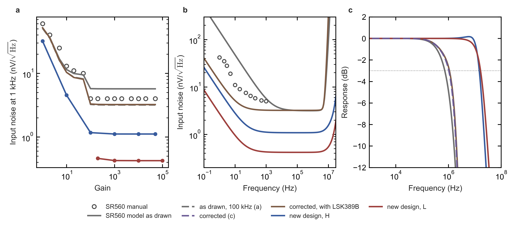
Figure 3. The benchmark. (a) Input noise at 1 kHz against gain: the SR560’s manual (circles), its reproduction as drawn at 1 kHz and 100 kHz (the corrected model’s noise is the same to within 0.2 %), the corrected model with the LSK389B at 1 kHz, and the new design’s H and L inputs. (b) Input noise spectra at a gain of 1000, with the SR560 manual’s typical curve (printed p. 20, read by eye). (c) Frequency response at a gain of 100 (SR560 and H) and 1000 (L), normalised at 1 kHz: the SR560 as drawn, corrected (dashed, over the curve of the model with the LSK389B) and with the LSK389B.
Three choices set the SR560’s floor, and each can be changed today:
sim/results/jfet_model_check.json). Paralleled modern JFETs give 0.9 nV/√Hz differential () with two JFE2140 halves per side (H) and 0.33 nV/√Hz () with twelve JFE150 per side (L), by Eq. (2) and the data sheets’ 0.9 and 0.8 nV/√Hz at 5 mA (Table 3; scripts/noise_theory.py). The LSK389B of newer units does not lower the SR560’s white floor (Section 2.2): 3.21 against 3.18 nV/√Hz.sim/results/chain_ac.json).Table 2 collects the commercial voltage preamplifiers found in the survey (refs/commercial_preamps/survey.md, with the document and page of every figure).
Table 2. Commercial voltage preamplifiers (specified or typical values from their documents; per input as connected). This design: Sections 4 and 6, scripts/numbers_s1_3.py.
| Instrument | (nV/√Hz) | (pF) | Band | Coupling | Note |
|---|---|---|---|---|---|
| SRS SR560 | 4 | 25 | DC–1 MHz | DC | 1 kHz, gains ≥ 100 |
| NF 5307 | 4 | < 35 | DC–10 MHz | DC | specification (1 kHz, gain 1000); about 3 (2.8–3.1) in NF’s plot at a gain of 100 |
| NF SA-440F5 | 1.8 | 60 | DC–20 MHz | DC | |
| NF SA-421F5 | 0.5 | 85 | 30 Hz–30 MHz | AC | |
| NF LI-75A | 2 | 50 | DC–1 MHz | DC | |
| FEMTO DLPVA-101-B | 2.0 (3.0 differential) | 105 | DC–100 kHz | DC | |
| Signal Recovery 5113 | 4 | 25 | DC–1 MHz | DC | 1 kHz; about 8 at 1 kHz, and 4 only from 10 kHz, in its own noise-figure plot (Section 6.2) |
| Signal Recovery 5184 | 0.8 | 50 | 0.5 Hz–1 MHz | AC | |
| Stahl PR-E3 | 0.69 | 32.8 | 0.5 kHz–4 MHz | AC | both channels tied, 2 × 16.4 pF (data sheet v3.12, p. 5) |
| BasPI SP1004 | 1.0 | 125 | DC–1 MHz | DC | |
| This design, H | 1.08 | 20 (network; 26 pF of JFETs, bootstrapped) | DC–14.82 MHz | DC | gain ≥ 1000 |
| This design, L | 0.42 | 250 (network; 288 pF of JFETs) | DC–16.5 MHz | DC | quieter than H below 96 Ω (10 MHz) to 70 kΩ (10 Hz) of source |
The DC–10 MHz NF differential amplifier with a 2SK389-class input that was remembered from the 1980s, and remembered as measuring about 3 nV/√Hz (a recollection; no document found), matches the NF 5307 in every attribute found except its date. The 5307 is DC–10 MHz, differential, FET-input by NF’s own comparison chart, specified at 4 nV/√Hz typical (1 kHz, gain 1000; NF’s specification sheet) and plotted at about 3 nV/√Hz (2.8–3.1, read by eye) at a gain of 100 (manual Fig. 4.7, PDF p. 37), with an input capacitance below 35 pF (33 pF typical; manual Section 3.2.1, PDF p. 21). Its earliest date found is the 1998 copyright of its manual; no NF document names its input transistor (the survey’s Section 1.2). Either the remembered unit is the 5307 or an undocumented predecessor. In either case its noise, about 3–4 nV/√Hz, is the figure to beat. The H input beats it by a factor of to = 2.6–2.9 against the plotted white noise and = 3.6 against the specification at 1 kHz, at a similar input capacitance; the L input by to = 6.7–7.4 and = 9.3, at a larger one (gain 1000, scripts/numbers_s1_3.py).
The Signal Recovery 5113 (AMETEK, formerly EG&G Princeton Applied Research: DC–1 MHz, internal batteries, a FET buffer on each input ahead of a differential gain stage of 4, 40 or 400 in the block diagram of its 1992 manual, Fig. 4-1) is specified like the SR560, at 4 nV/√Hz at 1 kHz with 25 pF. Its manual also publishes a noise-figure plot, and that plot implies about twice this noise at 1 kHz and far more below it (Section 6.2, Figure 17j–l).
A JFET for a low-noise front end is chosen from its data sheet in this order:
refs/datasheets/jfet/survey_TI_LIS_Toshiba_onsemi.md), so cross-vendor comparisons need care.Table 3 and Figure 4 summarise the survey (refs/datasheets/jfet/survey_*.md, with the document, page and figure of every value).
Table 3. Low-noise JFETs: typical data-sheet values (maxima where marked max). at 1 kHz (or the white level where stated) at ; at 10 Hz (at unless stated); at the data sheet’s conditions; figure of merit in nV·√pF/√Hz (scripts/jfet_data.py, sim/results/jfet_table3.json).
| Part | Vendor | Status | (mA) | 10 Hz | (pF) | FOM | Note | |
|---|---|---|---|---|---|---|---|---|
| LSBF862 | Linear Systems | active | 0.8 | 2 | 1.4 | 11.5 | 2.7 | single; at 10 kHz |
| BF862 | NXP | discontinued | 0.8 | , 10–25 | – | 10 | 2.5 | single; at 100 kHz and = 0 (NXP p. 4) |
| JFE2140 | TI | active | 0.9 | 5 | 2.4 (2 mA) | 13 | 3.2 | matched dual |
| LSK489 | Linear Systems | active | 1.8 | 2 | 3.5 | 4 | 3.6 | dual, low capacitance |
| JFE150 | TI | active | 0.8 | 5 | 1.8 | 24 | 3.9 | single; at 5 V |
| JFE2325 | TI | active (new) | 4.3 | 0.385 () | – | 0.85 | 4.0 | dual, self-biased; at 10 kHz, gate grounded |
| LSK170 | Linear Systems | active | 0.9 | 2 | 1.4 | 20 | 4.0 | single |
| IF170 | InterFET | active | 1.0 | 2 | 1.70 (5 mA) | 20 max | 4.5 | 2SK170 type |
| 2SK170 | Toshiba | discontinued | 0.95 | 1 | – | 30 | 5.2 | |
| IF9030 | InterFET | active | 0.7 | 5 | – | 60 max | 5.4 | |
| IF150 | InterFET | active | 3.4 | 0.5 | 5.5 | 2.9 | 5.8 | low capacitance |
| IF4500 | InterFET | active | 0.85 | 5 | 1.1 | 55 | 6.3 | off its curve at = 0, 10 V (table: 35 max) |
| 2SK369 | Toshiba | discontinued | 0.78 | 3 | – | 75 | 6.8 | |
| LSK389 | Linear Systems | active | 1.6 | 2 | 3.2 | 25 | 8.0 | dual; 1.17 measured in its app note (A-weighted, with the test amplifier’s second stage; Cordell’s Table 1, Rev. A4, p. 5) |
| IF3601 | InterFET | active | 0.34 | 5 | 0.60 | 650 | 8.7 | IF3602 dual |
| 2N5564 | Vishay | discontinued | 3.9 | 2 | 12 | 10 | 12 | SR560’s NPD5564; at 1 kHz |
| U401 | Vishay | discontinued | 4.3 | 0.2 | 10 | 4 | 8.6 | dual |
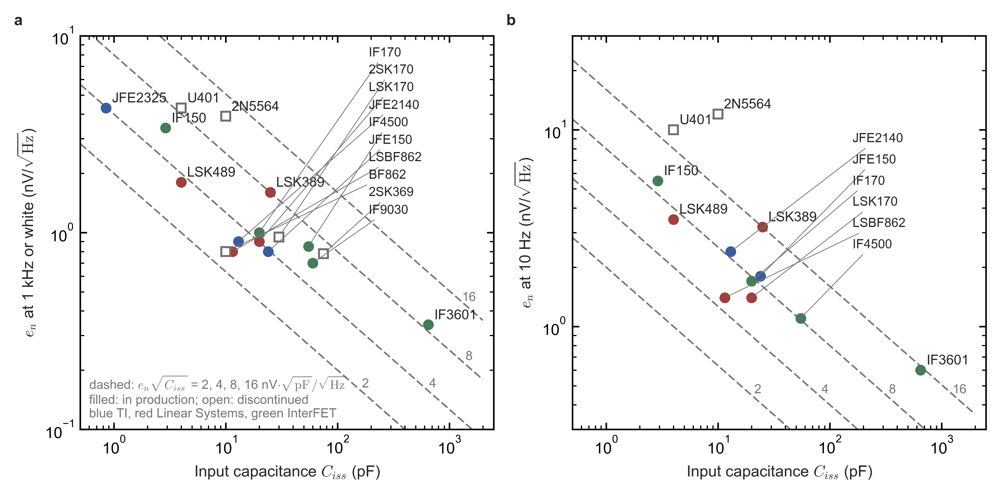
Figure 4. The surveyed JFETs: (a) at 1 kHz or white, (b) at 10 Hz, against . Dashed lines: constant ; paralleling moves a part along such a line (arrow direction: devices give at ). Filled: in production; open: discontinued.
On data-sheet values the LSK389 has a figure of merit of 8.0 (; 5.85 with the 1.17 nV/√Hz measured in Cordell’s application note, its Table 1, p. 5, A-weighted with the test amplifier’s second stage). Parts that are better by a factor of 1.79–2.95 per unit of capacitance on data-sheet values (1.31–2.16 against the measured 1.17; sim/results/jfet_table3.json), all in production:
For the lowest absolute noise regardless of capacitance, the IF3601/IF3602 (0.34 nV/√Hz, 650 pF) remain unmatched per device, but they are no better per unit of capacitance than the LSK389 (FOM 8.7). Twelve JFE150 per side give = 0.23 nV/√Hz per side and 0.33 nV/√Hz differential at 288 pF per input, against 0.34 and = 0.48 nV/√Hz at 650 pF for one IF3601 per side, and with lower 1/f per unit of capacitance: = 8.8 against = 15.3 nV·√pF/√Hz at 10 Hz (scripts/numbers_s1_3.py): the L front end is in effect a modern IF3601 built from twelve small parts.
TI’s newest part, the JFE2325 (dual, 0.85 pF, 4.3 nV/√Hz at 10 kHz with the gate grounded, i.e. at , 0.385 mA typical, SLPS816A p. 5; self-biased gate), is aimed at high-impedance sensors and has a figure of merit of 4.0, as good as the LSK170’s. It is the part of choice for a third, ultra-low-capacitance input (a few pF), which this note does not develop.
ngspice’s JFET model gives the channel the thermal noise , the thermal noise of RS and RD, and KF flicker noise (its “standard thermal and flicker noise model”, ngspice-46 User’s Manual, Section 7.4.4, p. 154; the JFE150 card alone gives 0.7045 nV/√Hz at 5 mA in ngspice, and = 0.7042 nV/√Hz with = 25.93 mS and RS = 4.2 Ω, scripts/numbers_s1_3.py). Each part was calibrated to its data sheet (scripts/models.py): a resistor RX in series with the gate is chosen so that the white noise at the data sheet’s operating point equals the typical value, with the card’s own white noise; KF is chosen so that the noise at 10 Hz (or the data sheet’s low-frequency point) equals the typical value, ; and CGS and CGD are solved from the data sheet’s and at its bias (Table 4). The JFE2325’s table gives no low-frequency value, so its KF is fitted, as the JFE2140’s, at 10 Hz, to the gate-grounded curve of SLPS816A Fig. 5-24 (32 nV/√Hz, read by eye); the card’s own KF has 3.2 times that curve’s 1/f power. Figure 5 checks the JFE150 and JFE2140 against their data sheets’ noise curves over two decades of current; sim/results/jfet_model_check.json checks every calibrated model at its calibration point, and the JFE2325 against Fig. 5-24 from 1 Hz to 100 kHz.
Table 4. Calibration of the JFET models (data sheets’ typical values; sim/results/jfet_calibration.json). The targets of the JFE150 and JFE2140 are read from the pixels of SLPS732B Fig. 6-12 (p. 7) and SLPS730B Fig. 6-17 (p. 8) at 5 V: 4.13–4.18 and 3.91–3.94 pF, depending on the axis calibration, against the 4.1 and 3.9 pF used (scripts/ti_plot_check.py); read by eye, they had been taken as 4.5 and 4.2 pF.
| Part | Card | RX (Ω) | KF (card → calibrated) | CGS / CGD (pF, at = 0) | Targets |
|---|---|---|---|---|---|
| JFE150 | TI SLPM349I | 8.67 | 3.25e-18 → 3.50e-18 | 20.3 / 6.3 → 25.7 / 11.5 | 0.8 / 1.8 nV at 1 kHz / 10 Hz, 5 mA, 5 V; 24, 4.1 pF |
| JFE2140 | TI SLPM355 | 5.91 | 0.2e-18 → 2.90e-18 | 9.2 / 3.5 → 10.6 / 11.0 | 1.1 / 2.4 nV, 2 mA, 10 V; 13, 3.9 pF |
| LSBF862 | Linear Systems Rev 2 | 0 (clipped) | 8.75e-17 → 1.74e-18 | 8 / 3.5 → 10.5 / 14.3 | 0.8 / 1.4 nV, 2 mA, 8 V, achieved 0.90 / 1.46 (the card alone gives 0.90, and KF was fitted for 0.8); 11.5, 3.5 pF |
| 2N5564 | LTspice standard.jft | 46.8 | 6.786e-11 → 4.30e-16 | 9.76 / 8.67 → 7.7 / 10.0 | 1.28 nV white, 3.6 nV at 1 kHz, at the SR560’s 4.5 mA and 5.5 V (set by eye between Vishay’s 1 and 10 mA curves, 70254 Rev. E p. 5); 10, 2.5 pF at 15 V (p. 2) |
| LSK389B | Linear Systems, updated LSK389 card, Rev 2 (18 May 2026), B grade | 106.3 | 8.2e-18 → 8.02e-18 | 19.5 / 5.5 → 20.7 / 18.2 | 1.6 / 3.2 nV at 1 kHz / 10 Hz, 2 mA, 10 V (LSK389 data sheet, Doc 201122 Rev A27, p. 2); 25 pF at 10 V, 5.5 pF at = 10 V; for the SR560 model of Section 2.2 only |
| JFE2325 | TI SLVMF24 | 143.1 | 40e-18 → 12.6e-18 | 0.65 / 0.30 → 0.75 / 0.20 | 4.3 nV at 10 kHz (p. 5) and 32 nV at 10 Hz (Fig. 5-24), gate grounded ( = 0: the card’s , 0.378 mA), 2.5 V; 0.85, 0.1 pF at 2 V |
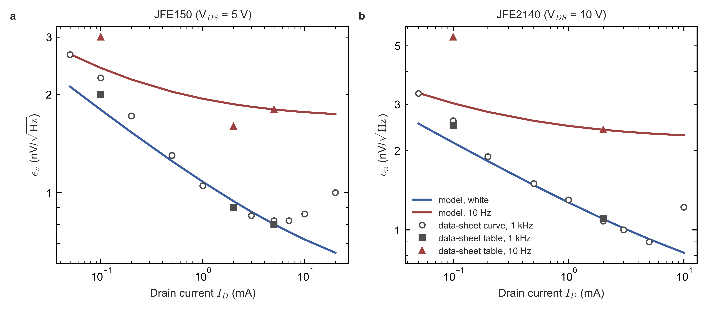
Figure 5. The calibrated JFE150 and JFE2140 models against their data sheets (sim/results/jfet_model_check.json): white and 10 Hz noise against drain current, with the data sheets’ noise curves (SLPS732B Fig. 6-11, SLPS730B Fig. 6-16, read by eye) and table values.
The CGD values come out larger than the data sheets’ because ngspice’s JFET keeps the junction grading exponent at 0.5 whatever M the card gives (its gate capacitances vary as the −1/2 power of the junction voltage, ngspice-46 User’s Manual, Section 7.4.4, p. 153; its parameter table, p. 154, has no grading coefficient, and scripts/models.py removes the vendors’ M), so a capacitance fitted at 5 V must be larger at zero bias. The calibration fits the two capacitances at the bias where the data sheet gives them, which is what matters for the circuit.
The JFET models below 10 Hz. Each model’s KF is fitted at one low frequency, 10 Hz for the JFE150, JFE2140 and LSBF862 (Table 4), and below it the model is pure 1/f noise: ngspice’s JFET has no parameter for the frequency exponent, only KF and AF (ngspice-46 User’s Manual, Section 7.4.4, p. 154). Other data disagree with that extension by a factor of two to three at 1 Hz, in both directions:
Above about 10 Hz the models follow their data sheets (Figure 5); below it, only a measurement of the built front ends settles their noise (Section 7).
L’s twelve JFE150 per side set its noise floor: 0.33 nV/√Hz white and 2.13 nV/√Hz at 1 Hz from the JFETs alone, most of the latter 1/f noise. A bipolar transistor has less voltage noise for a given current, since its transconductance is , but adds the shot and 1/f noise of its base current. This section asks whether matched bipolar transistors in production would serve the lowest source resistances better than L, and how their 1/f noise decides the answer. It is a study of a possible third input; the bipolar front end B below is not part of the design.
Location of the 1/f noise. In a silicon bipolar transistor the low-frequency noise is a fluctuation of the base current. Plumb and Chenette (1963) found that for many transistors the flicker noise is represented adequately by a single noise-current generator in parallel with the emitter–base junction. Jaeger and Brodersen (1970), measuring purpose-built tetrode transistors, separated two 1/f sources, one at the surface and one in the active base region, from burst noise at the forward-biased emitter–base junction. Van der Ziel, Zhang and Pawlikiewicz (1986) described the general case by three independent noise-current generators, between base and emitter, base and collector, and emitter and collector, with a method that tells them apart by the emitter’s feedback; Pawlikiewicz and van der Ziel (1987) applied it to two transistors, in one of which generation–recombination noise dominated and in the other, less noisy one, diffusion noise. (These four are cited from their abstracts.) Kleinpenning’s review concludes that in high-quality transistors it is 1/f noise in the base current, normally proportional to as the mobility-fluctuation model predicts, with deviations at high currents that come from the series resistances (Kleinpenning 1994, p. 1990); its magnitude spans to A in conventional transistors (p. 1987). In polysilicon-emitter transistors with an interfacial oxide it grows as and as the inverse of the emitter area, from sources spread over the emitter (Markus and Kleinpenning 1995, p. 722, Figs. 3 and 4). Measuring the noise in the base and collector leads together, Bruce, Vandamme and Rydberg (1999, p. 998) locate the dominant source in the base–emitter junction, on the emitter side, and not in the base or emitter resistance. The source thus sits at the internal base, behind the base spreading resistance , as in Leach’s model: his Eqs. (43)–(44) give the voltage noise , with no 1/f term, and the current noise (Leach 1994, p. 1525). The base current’s 1/f noise reaches the input as : through as voltage noise and through the source as , the two parts adding coherently. ngspice’s Gummel–Poon model places its flicker noise in the same way; on one transistor its and agree with these expressions to within 0.2 % (scripts/bipolar_inputs.py). In a JFET the 1/f noise is a fluctuation of the channel’s conductance; in most semiconductor devices such noise comes from fluctuations in the number of carriers by charge exchange with defects (Fleetwood 2015, p. 1462). It is referred to the gate as a voltage, whatever the source (Leach’s Eqs. (64)–(65)), and the gate current carries only shot noise. The two devices therefore put their 1/f noise in opposite generators, a JFET in and a bipolar transistor in , and a bipolar input can be the quieter at low frequencies only with source resistances small enough that its stays below the JFETs’ 1/f voltage. Leach (1994, p. 1534) makes the same comparison: the bipolar transistor is better with small source resistances, and the FET usually has more flicker noise.
Matched pairs in production. Table 5 lists the matched bipolar pairs and arrays in production that give noise data. Only Analog Devices’ SSM2212 and the MAT12, the same transistors in a TO-78 can, combine a low , 28 Ω typical, with a high current gain, 605 typical at 1 mA. Linear Systems’ LS3250 implies about 23 Ω, but its data sheet gives only two noise values, one of them 2.7 nV/√Hz at 100 Hz; the LS310–LS313 imply 68–90 Ω and Analog Devices’ MAT14 about 184 Ω (, Leach’s Eq. (43) inverted). The PNP pairs give a noise figure only. THAT Corporation’s 300-series arrays, 32 Ω for the NPN, were put on end-of-life status on 1 September 2026, and their last-time buy closed on 30 September 2026. Discrete large-area transistors reach lower, about 2 Ω for Rohm’s 2SB737 and 4 Ω for its 2SD786 (data book p. 188), but they are not matched pairs and are not studied here. No part in production publishes its current noise against frequency, and none of the vendor models read (THAT’s, the LS350’s and the MAT03’s) has flicker noise; the MAT12’s and SSM2212’s models sit behind a licence agreement and were not read.
Table 5. Matched bipolar pairs and arrays with noise data: typical values from their data sheets (refs/datasheets/bjt/), at 25 °C; marked “derived” is Leach’s Eq. (43) inverted from the stated (scripts/numbers_s3_5.py). Status from the manufacturers’ product pages and THAT’s memo, 24 November 2026.
| Part | Type | (Ω) | at 1 mA | (nV/√Hz) | against frequency | Status |
|---|---|---|---|---|---|---|
| Analog Devices SSM2212 (SOIC-8, LFCSP-16) | NPN dual | 28; 22–31 derived | 605 (SOIC); 1300 at = 0 and 1800 at 15 V (LFCSP) | 1.6 / 0.85 at 10 Hz / 1 kHz (table), 0.74 / 0.76 (curve); 1 mA | none; shot noise at 1 kHz (its Fig. 5) | in production |
| Analog Devices MAT12 (TO-78) | NPN dual, the SSM2212’s transistors | 28 | 605 | as the SSM2212 | none | in production |
| Linear Systems LS3250A/B/C | NPN dual, up to 50 mA | 23 derived | ≥ 150, 100, 50 | 2.7 at 100 Hz, 0.7 at 1 kHz; 2 mA | none | listed |
| Linear Systems LS310–LS313 | NPN dual | 68–90 derived | ≥ 150 to 400 | 1.5 / 1.3 at 10 Hz / 1 kHz; 1 mA | none | listed |
| Analog Devices MAT14 | NPN quad | 184 derived | 600 | 2 / 1.8 at 10 Hz / 1 kHz; 1 mA | none | in production |
| Linear Systems LS350–LS352, LS3550 | PNP duals | not given | ≥ 100 to 200; ≥ 50 to 150 | noise figure ≤ 3 dB at 100 µA only | none | listed |
| THAT 300, 320, 340 | NPN, PNP and mixed quads | 32 (NPN) | 100 (NPN) | 0.8 at 1 kHz (NPN); 1 mA | none | end of life, 1 September 2026 |
Calibration of the SSM2212. Its Gummel–Poon card (scripts/bipolar_inputs.py) takes the stated typical of 28 Ω, which with the bulk resistance of 0.3 Ω gives 0.82 nV/√Hz at 1 mA, between the typical curve’s 0.76 and the table’s 0.85 nV/√Hz; the current gain of 605, flat from 1 µA to 1 mA; , the output conductance and the junction capacitances from its curves (the emitter–base capacitance, which it does not give, from the MAT02’s); and = 200 MHz at 10 mA. The data sheet gives no base-current noise against frequency, and its two statements of the voltage noise at 10 Hz disagree: 1.6 nV/√Hz typical in its table and about 0.74 on its curve. The table’s value cannot come from the base current: to reach 1.6 nV/√Hz through 28 Ω, the base current’s 1/f noise would be 6.6 times its shot noise at 1 kHz, whereas the data sheet’s curve of total noise against current with a 100 kΩ source (its Fig. 5) puts the current noise at 1 kHz at 0.97–1.49 times the shot-noise power from 0.1 to 1 mA, so the base current’s 1/f corner lies below a few hundred hertz at these currents. Comparable parts’ corners near 1 mA are about 180 Hz for Rohm’s 2SB737 (its Fig. 15), 340 Hz or 1.8 kHz for the discontinued MAT03 (its TPC 10, read as a pair or as one transistor), about 1.6 kHz for the discontinued LM394, 140 Hz for the OP37’s input stage and 250 Hz typical, 800 Hz maximum, for the LT1028’s (their data sheets’ p. 7 and pp. 6 and 11). The card therefore puts the corner at 200 Hz for 1 mA and the study brackets it from 30 Hz to 1 kHz. The corner is scaled with current by = 1.3, between the 1.28 and 1.22 that the rise of the 2SB737’s and LM394’s corners with current implies and Kleinpenning’s 1, as with the base current at 1 mA.
Input devices alone. A testbench simulates the input devices without the rest of the front end: a differential pair of devices per side on an ideal tail current, with noiseless current readout, and a noiseless source resistance in series with input A, the base current coming from an ideal current source so that none flows in the source; at each frequency the runs over the source resistance are fitted as a noisy two-port, (scripts/bipolar_inputs.py). With L’s twelve JFE150 it reproduces the input JFETs’ share of L’s simulated noise to within 0.02 % from 1 Hz to 100 kHz, and the bipolar arrays’ white noise agrees with Leach’s Eqs. (43)–(44) to within 0.3 % in and 0.7 % in . At L’s current, 60 mA per side, 12, 24 and 48 SSM2212 per side (5, 2.5 and 1.25 mA each) give 0.29, 0.22 and 0.16 nV/√Hz white against L’s 0.33, and 0.44, 0.26 and 0.18 nV/√Hz at 1 Hz against 2.13 (Figure 6a). Their current noise is the same when white, 5.6 pA/√Hz per input, since the total base current is the same, and rises to 81–99 pA/√Hz at 1 Hz, or 35–200 pA/√Hz for 24 per side across the corner’s bracket (Figure 6b); the LFCSP version’s higher current gain would lower it to 3.7 pA/√Hz white. The SSM2212’s makes many devices necessary: twelve per side lower the white noise by only 11 %, 24 per side by 34 % and 48 per side by 50 %.
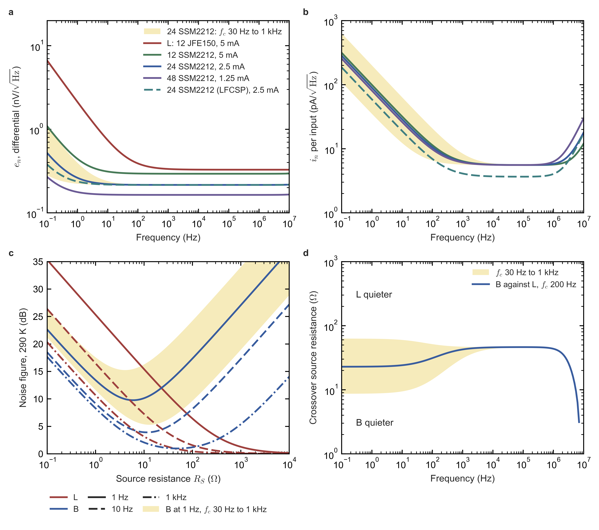
Figure 6. Bipolar input stages against L (scripts/bipolar_inputs.py). (a) Differential input voltage noise and (b) current noise per input of the input devices alone, in the testbench, at L’s 60 mA per side: L’s twelve JFE150, and 12, 24 and 48 SSM2212 per side (dashed: the LFCSP version’s higher current gain). The lines take a base-current 1/f corner of 200 Hz at 1 mA, the band spans 30 Hz to 1 kHz for 24 per side. L’s current noise, 0.35 fA/√Hz at 1 kHz from the JFETs and 41 fA/√Hz with its 10 MΩ bias resistors, lies far below panel (b). (c) Noise figure, for a source at 290 K, against the source resistance at 1 Hz, 10 Hz and 1 kHz, of the front ends L and B (L with 24 SSM2212 per side); the band spans the corner’s bracket for B at 1 Hz. (d) The source resistance below which B is quieter than L, against frequency.
A complete bipolar front end. B is L’s front end (Section 4.2, Figure 11) with 24 SSM2212 per side at 2.5 mA in place of the twelve JFE150 at 5 mA, and the same and , cascodes, bootstrap, sinks and op amps; each dual gives one transistor to each side, as H’s JFE2140 duals do (scripts/frontend.py, whose input devices can now be a bipolar card, and scripts/bipolar_inputs.py). Figure 7 shows its side A, drawn from the simulated netlist and checked against it part by part and pin by pin. The cascodes serve B as they serve L. With their gates held 3.5 V above the source node by the bootstrap, they keep each transistor’s collector–emitter voltage constant as the input moves, so that its collector–base capacitance, 17.4 pF at B’s 3.39 V (the card’s, from the MAT12’s Fig. 12), does not load the input: with the collectors held fixed, by the summing node or by unbootstrapped cascodes, the 24 transistors of a side would put 0.42 nF on it, against the 10 pF that B shows at 1 kHz. They also keep the input from modulating, through the Early effect, the base current that flows in the source. Their number is L’s, one per transistor; since a side’s transistors share base, emitter and collector, fewer and larger cascodes would serve as well (twelve at L’s 5 mA, for example). Their noise is negligible, 0.06 pV/√Hz at 1 kHz. Its operating point is L’s, with the source node 0.59 V below the inputs instead of above them and 3.97 V across each transistor. The array’s transconductance, 2.3 S per side against the JFETs’ 0.31 S, raises the loops’ gain, so the compensation was scanned again as in Section 4.3.1: with = 75 pF, = 7.5 pF and = 2.2 nF the margins at the op amps’ output pins are 65.6° and 16.3 dB in differential mode and 61.1° and 14.6 dB in common mode, against L’s 63° and 17 dB, 51° and 10 dB (Table 7), and the front end has a gain of 201.0 and a bandwidth of 13.2 MHz without peaking. With the inputs shorted it gives 0.54, 0.33 and 0.30 nV/√Hz at 1 Hz, 10 Hz and 1 kHz against L’s 2.33, 0.83 and 0.41, and 0.30–0.31 against 0.41 nV/√Hz up to 1 MHz; at 10 MHz it is the noisier, 0.56 against 0.50 nV/√Hz. Two contributions change their weight. ’s noise, 0.20 nV/√Hz in both, now nearly equals the input devices’ 0.22 nV/√Hz at 1 kHz, while the op amps’ falls by a factor of 2.9 with the larger transconductance. And the base current’s noise flows through as well as through : in the front end the input devices give 0.375 nV/√Hz at 1 Hz against 0.262 in the testbench, as predicts (0.375 nV/√Hz, with = 28.3 Ω and the testbench’s current noise per input). A smaller , with scaled with it, would lower both.
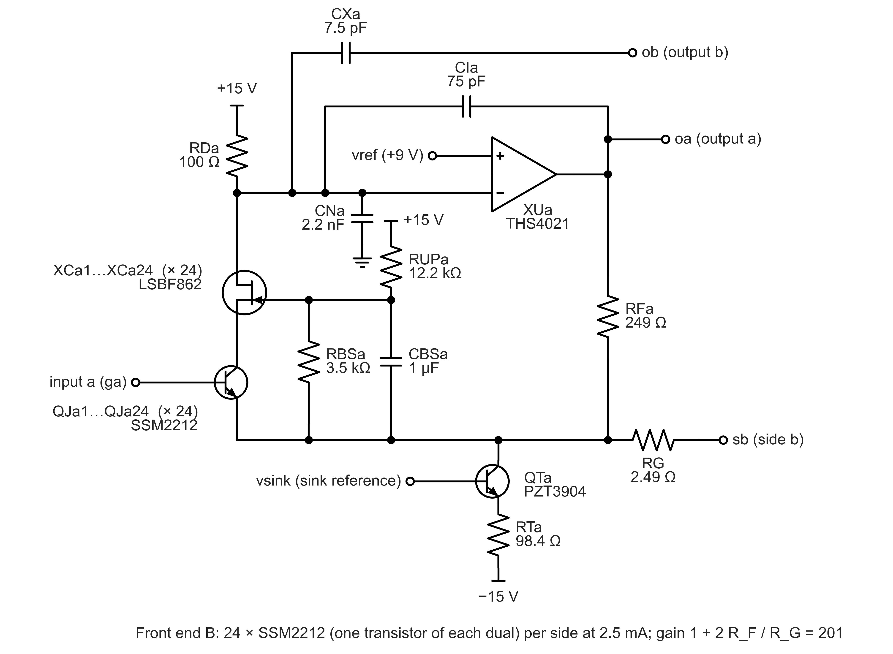
Figure 7. Side A of the bipolar front end B: L’s front end of Figure 11 with 24 SSM2212 per side (one transistor of each dual) at 2.5 mA in place of its twelve JFE150, each transistor cascoded by its own LSBF862, and B’s compensation ( 75 pF, 7.5 pF, 2.2 nF). is 12.2 kΩ against L’s 10.9 kΩ because the source node sits 0.59 V below the input instead of above it. The 24 transistors and their cascodes are drawn as one, with the count beside them; side B is its mirror image as in Figure 10. Drawn and checked part by part, value by value and pin by pin against the simulated netlist (scripts/make_schematics.py).
Noise with a source resistance. Figure 6c compares the noise figures of B and L, at the front-end level, with a source resistance in series with input A (scripts/bipolar_inputs.py, fitted as above), and Figure 6d gives the source resistance below which B is the quieter: with the corner of 200 Hz, 23 Ω at 1 Hz, 24 Ω at 10 Hz, 31 Ω at 100 Hz, 42 Ω at 1 kHz and 46 Ω from 10 to 100 kHz; across the corner’s bracket, 9–63 Ω at 1 Hz and 31–47 Ω at 1 kHz. Above about 46 Ω L is quieter at every frequency. With 10 Ω the noise figure at 1 Hz is 10.1 dB for B (5.4–16.3 dB across the bracket) against 15.4 dB for L, at 10 Hz 3.9 dB (2.5–7.5 dB) against 7.3 dB, and at 1 kHz 2.1 against 3.2 dB. With 1 Ω, B gains 11.9 dB at 1 Hz (7.7–13.7 dB) and 2.4 dB at 1 kHz; with 100 Ω it loses 10.9 dB at 1 Hz and 0.7 dB at 1 kHz. Figure 8 maps B’s noise figure in the format of Figure 17, with the corner’s bracket and the difference from L. B’s minimum noise figure is 0.97 dB with 49 Ω at 1 kHz, 3.9 dB with 12 Ω at 10 Hz and 9.8 dB with 6 Ω at 1 Hz; at 1 kHz its optimum source resistance thus lies just above the crossover, where L is already slightly the quieter, and B’s merit lies below its own optimum.
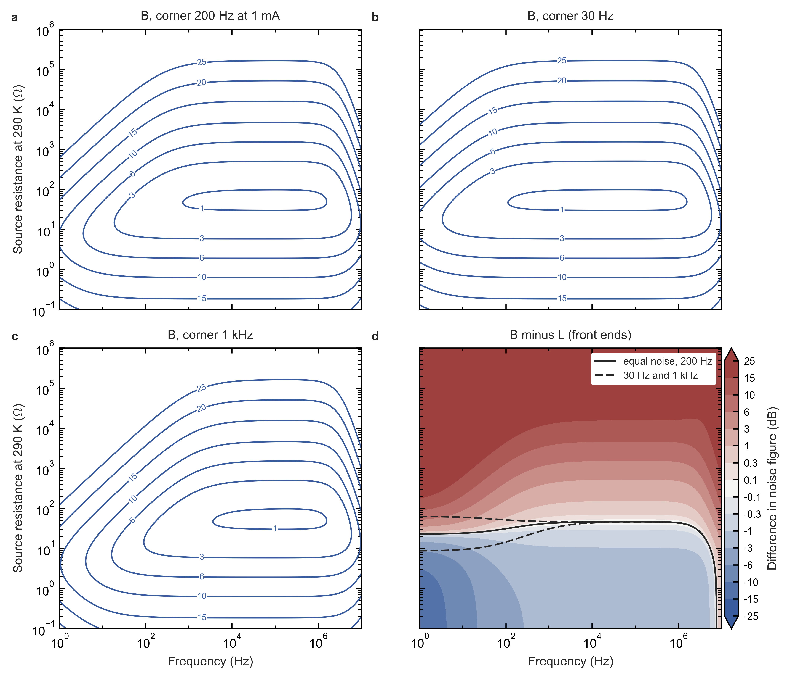
Figure 8. Noise figure of the bipolar front end B against source resistance and frequency, for a source at 290 K, in the format of Figure 17 (the SR560 data sheet’s contour levels and label positions), drawn from the two-port fits of its runs from 0.1 Ω to 1 MΩ, which they reproduce within 4 × 10⁻⁶ dB, on that range (scripts/bipolar_inputs.py). (a) The base-current 1/f corner of 200 Hz at 1 mA; (b) 30 Hz and (c) 1 kHz, the ends of its bracket. (d) B minus L, both as front ends without an input network (L swept as B), blue where B is the quieter; the solid line is equal noise with the corner of 200 Hz, the dashed lines with 30 Hz and 1 kHz.
Costs and open questions. B draws 96 µA of base current per input, which must flow through the source: 0.96 mV of offset with 10 Ω. L’s 10 MΩ bias resistors (Section 4.4) would be impossible; a DC path of a few kilohms, or a bias-current cancellation with its own noise, would take their place. Its input network would have to be designed anew. The bare front end’s input has a negative resistance at high frequencies, −1.2 kΩ at 1 MHz and −28 Ω at 10 MHz against L’s −13.5 kΩ and −172 Ω, and its response peaks by 4.1 dB at 6.0 MHz with a plain 10 Ω source (L: 0.25 dB), by 26 dB at 3.3 MHz with 50 Ω and 1 µH (L: 9.9 dB) and by 21 dB at 6.6 MHz through 1 m of cable from 10 Ω (L: 17.6 dB). L’s network of Section 4.4 damps these for L; B would need its own, which is not designed here. B needs 24 SSM2212, as many packages as L has JFE150. Below 10 Hz neither part’s data are consistent. The JFE150’s noise at 1 Hz is 5.2, 9.1 or 14 nV/√Hz per device according to whether its 10 Hz table value is extended as 1/f noise (the calibration of Section 3.4), its 0.1–10 Hz peak-to-peak value is matched, or its Fig. 6-9 is read; for L’s JFETs this means 2.1, 3.7 or 5.7 nV/√Hz at 1 Hz, and a larger value would widen B’s advantage there. The SSM2212’s 0.1–10 Hz value, 0.4 µV peak to peak at 1 mA, is 12 times what its own curve integrates to. The decisive quantity, the SSM2212’s base-current noise against frequency, is not published: a measurement of with a source of 100 kΩ to 1 MΩ from 0.1 Hz, and of with a shorted pair, would settle whether a third input B is worth building, for sources below about 20 Ω such as thermocouples, low-resistance samples and current shunts.
The preamplifier has two inputs, A and B, and measures A − B. A relay selects one of two front ends, H or L, which share everything downstream. The chain is:
The total gain is
(7)
with and from the 1-2-5 set between 1 and 1/100. The allocation follows two rules (scripts/chain.py, allocate): the gain is put as early as possible, for the lowest noise, but no stage after the front end may run at a higher signal level than the output, so that nothing clips before the output does. In the low-noise mode H_LN the front end runs at 100 from a total gain of 100 up and at 10 below; in the high-reserve mode H_HR it stays at 10, giving = 20 dB more headroom at the input for 2.3–2.5 times the noise at 1 kHz and 100 kHz, at total gains of 100 and 1000 (Table 10; scripts/numbers_s4a.py); L runs at 201 at every gain from 200 up.
Table 6. The two front ends (scripts/frontend.py, CASES). The operating-point values come from frontend.check_op, collected with the JFET capacitances in scripts/numbers_s4a.py (sim/results/numbers_s4a.json).
| H (gain 10 / 100) | L (gain 201) | |
|---|---|---|
| Input JFETs per side | 2 × JFE2140 (one half of each of two duals) | 12 × JFE150 |
| Drain current per JFET | 5 mA | 5 mA |
| per JFET at the operating point | 17.3 mS | 25.7 mS |
| , | −0.36 V, 3.9 V | −0.56 V, 3.85 V |
| Cascode | LSBF862 per JFET, gate bootstrapped 3.5 V above the source node | the same |
| Bootstrap | 3.5 kΩ ∥ 1 µF, 1 mA through 10.9 kΩ from +15 V | the same |
| Summing node, | +9 V, 600 Ω from +15 V | +9 V, 100 Ω from +15 V |
| Loop op amp | THS4021 | THS4021 |
| , | 500 Ω; 111 Ω (×10) or 10.1 Ω (×100) | 249 Ω; 2.49 Ω |
| , , | 13 / 1 pF (×10) or 9 / 5 pF (×100); 220 pF | 22 / 8 pF; 470 pF |
| Current sink | MMBT3904, 182 Ω (2 V) to −15 V | PZT3904 (SOT-223), 98.4 Ω (6 V, 1 W) to −15 V (Section 4.2.1) |
| Sinks’ base reference | −12.06 V, adjusted once (Section 4.2) | −6.40 V, adjusted once |
| Input network | 10 pF; 2.2 kΩ + 10 pF; 100 MΩ bias | 30 pF; 47 Ω + 220 pF; 10 MΩ bias |
| JFET capacitance per input, | 26 pF: 2 × 13 pF at = 5 V (TI SLPS730B, p. 5); 25 pF in the model at the operating point | 288 pF: 12 × 24 pF at = 5 V (TI SLPS732B, p. 5); 279 pF in the model |
An amplifier adds noise in two ways, and they call for opposite input stages (Section 1.3). Its voltage noise adds to the signal whatever the source, and it dominates with low source resistances. Its current noise and its input capacitance act through the source’s impedance, as and (Eq. (3)), and they dominate with high ones. Only paralleling JFETs lowers , as , and it raises as and the gate-leakage noise as (Eq. (2)): at a given input capacitance the lowest is set by the device’s figure of merit (Eq. (6)), and the best number of devices falls as the source resistance rises (Eq. (4), Figure 1b). No single input stage is therefore the quietest for every source. The design has two, of the same topology, at the two ends of this trade, and a relay selects one:
The penalty for the wrong input is largest at the two ends of the source range and small in between. With 1 MΩ at 1 kHz, L’s noise figure is 0.41 dB against H’s 0.04 dB, and at 1 MHz 21.4 against 10.9 dB (Table 11); with a 1 kΩ source, L’s 250 pF already make a pole at 0.64 MHz, where H’s 20 pF make it at 8.0 MHz. With 10 Ω, H gives up 6.1 dB at 1 kHz. Between about 3 kΩ and 200 kΩ at 1 kHz the two differ in noise by less than 1 % (Section 6.2), and either input may be used.
A bipolar input for the lowest source resistances. Section 3.5 studies a third input stage, B: L’s front end with 24 SSM2212 matched bipolar pairs per side in place of its JFETs. B is quieter than L below about 23 Ω of source resistance at 1 Hz and about 46 Ω above 10 kHz (9–63 Ω at 1 Hz across the uncertainty in the base current’s 1/f noise), most of all at low frequencies: with 10 Ω its noise figure at 1 Hz is 10.1 dB against L’s 15.4 dB, and with a shorted input its noise is 0.54 against 2.33 nV/√Hz at 1 Hz and 0.30 against 0.41 nV/√Hz at 1 kHz. Above about 46 Ω L is quieter at every frequency. B is not part of the design: its advantage rests on base-current 1/f noise that no bipolar pair in production publishes, and it would need its own input network (Section 3.5).
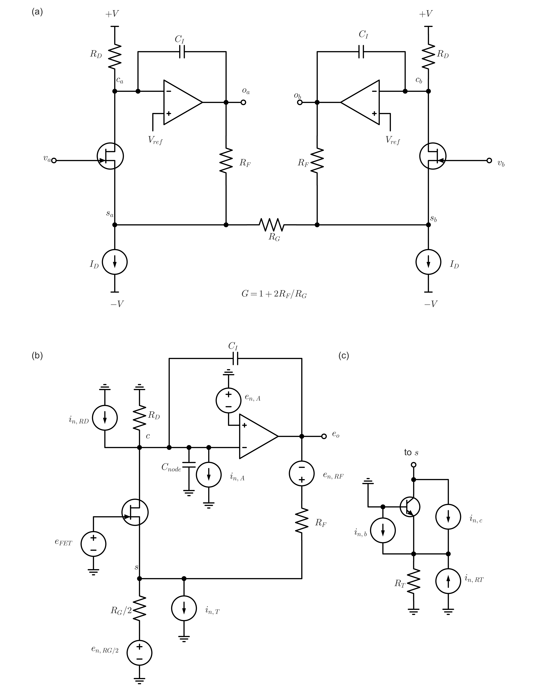
Figure 9. The current-feedback topology, redrawn after Spinelli and Haberman (2024), Figs. 2 and 4, in this note’s symbols. (a) Its basic form, both sides, one JFET per side. Each op amp holds its JFET’s drain, the summing node , at by driving the source node through , so the JFET’s current, set by , and with it stay constant: the source follows the gate. The differential input then appears across , and its current flows through both , so . is a DC current sink. Figures 10 and 11 show the front ends as built, with paralleled JFETs, cascodes and the bootstrap. (b) The differential half-circuit with the noise generators of Eq. (9). The supplies and are AC ground, and in differential mode the midpoint of is a virtual ground, so each side sees . The generators are: the JFETs’ voltage noise ; at the summing node, ’s noise current and the op amp’s current and voltage noise and , the latter also driving ; at the source node, the sink’s noise current ; and the noise voltages of and . The current sink, and are additions to their figures. (c) A current sink’s noise generators, which are not in their figures: the base current’s shot noise from base to emitter, the collector current’s from collector to emitter, and ’s thermal noise current . The base is held at AC ground by its reference’s filter, so for noise the transistor is a common-base stage from its emitter node to the source node: and pass in full, only in part (Eq. (12), Section 6.1).
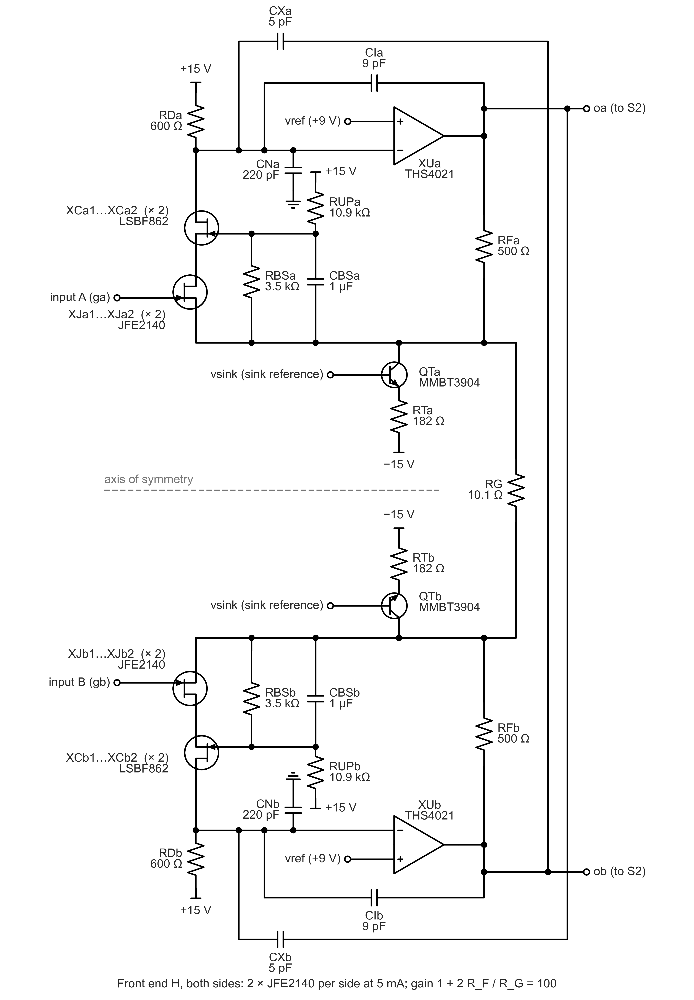
Figure 10. The H front end at a gain of 100, both sides. Side A (input A, top) and side B (input B, bottom) are mirror images about the dashed axis. The only parts that join them are , between the two source nodes across the axis, and the cross-coupled capacitors: runs from output b to side A’s summing node, and from output a to side B’s (the two wires that cross without a dot on the right). Each side’s two JFE2140 halves, one from each of two matched duals, and their two LSBF862 cascodes are drawn as one, with the count beside them. vref (+9 V) and vsink (the sinks’ adjusted base reference) are the same nets on both sides, and oa and ob lead to the difference amplifier S2. Drawn and checked part by part, value by value and pin by pin against the simulated netlist (scripts/make_schematics.py).
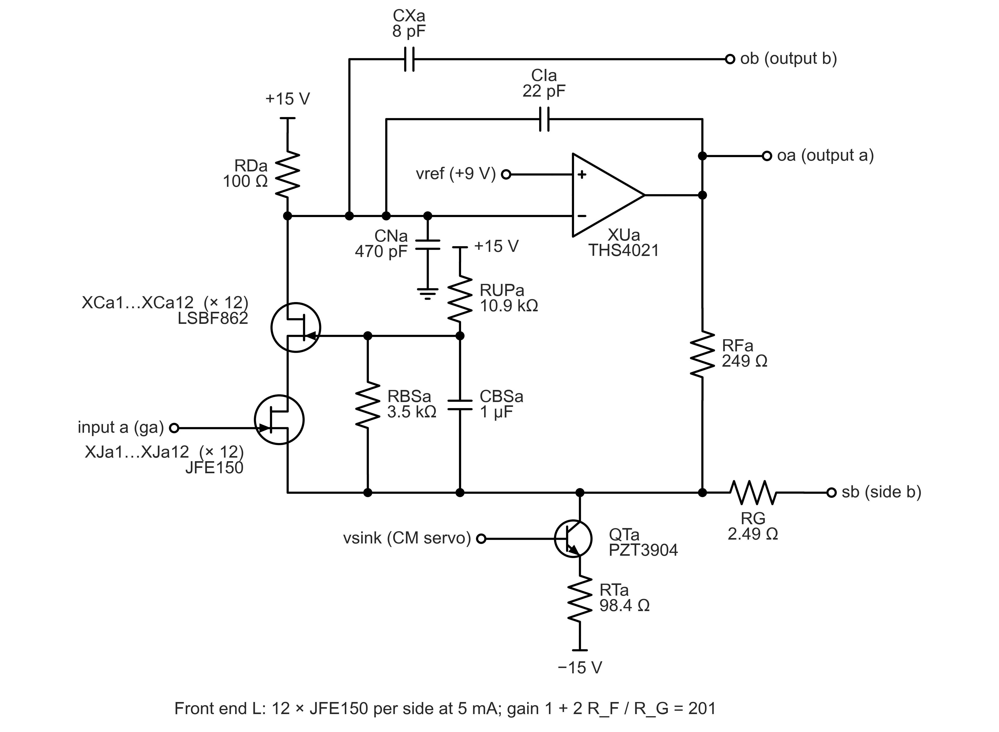
Figure 11. Side A of the L front end, which has the same topology as H: twelve JFE150 and twelve LSBF862 cascodes per side. Side B is its mirror image as in Figure 10; ob and sb lead to it.
The topology is the current-feedback instrumentation amplifier, in which each input device has its own loop (Figure 9a). Analog Devices introduced it in 1968 in its Model 601 data amplifier and later integrated it, beginning with the AD524 of 1983 (Spinelli and Haberman 2024, p. 2, citing Demrow 1968). It is built here with paralleled discrete JFETs (Spinelli and Haberman 2024 built it with JFE2140s for DC–100 kHz, p. 4). The two sides are identical and work independently, except through and the cross-coupled (Figure 10). Each side works as follows:
(8)
which depends only on resistors, not on the JFETs’ transconductance. The outputs also follow the input’s common mode with unity gain; S2 removes it.
The sinks’ reference. Each source node obeys Kirchhoff’s current law,
(8a)
where the integrator fixes the JFETs’ current and fixes the bootstrap current . Whatever the sink takes beyond these two must come from the op amp through , and the output sits at . Nothing else in the loop defines this DC level. The two sinks’ common base reference (vsink in Figure 10) is therefore adjusted once, with a trimmer, until the outputs sit at their sources; the mean DC current in is then zero, and the outputs’ mean sits above the input’s common mode, +0.36 V for H and +0.56 V for L. The adjusted reference is −12.06 V for H and −6.40 V for L, 0.28 V and 1.94 V above its design value + 0.66 V: the sinks’ base currents (β = 119 and 72 in the models) drop 0.18 V and 1.70 V across the 1 kΩ of the reference’s filter, their is 0.07 V and 0.15 V above 0.66 V, and carries their base current too (0.02 and 0.09 V). At the design value, unadjusted, H’s outputs would sit 0.68 V below their sources and L’s 3.43 V below. In the simulations every circuit’s reference is adjusted in the same way, numerically, to 1 µV (sink_reference in scripts/frontend.py, sim/results/sink_reference.json), and in the Monte Carlo of Section 6.4 every trial’s separately.
The adjustment holds at its own temperature and input common mode (scripts/servo_check.py, sim/results/servo_check.json):
These shifts are common mode: S2 removes them, and none reaches the signal. What they cost is the op amps’ output swing and the input’s common-mode range, by as much. A stiffer reference would remove the base-current parts, not the and not the common mode. A mismatch between the two sinks’ currents is not common mode: it appears as a differential output offset , an assumed 0.05 % of 11 mA, 5.5 µA, giving 2.75 mV at H’s outputs and 27.5 µV referred to the input, which the offset trim of Section 4.6 removes. A slow servo of the reference would hold the outputs at their sources at every temperature and common mode, without the trimmer, and might help, L above all; Appendix B describes it, with its limits. The front ends here do without it.
Cascode and bootstrap. Each JFET has its own LSBF862 cascode. The cascodes’ gates sit at a bootstrap node held 3.5 V above the source node by = 3.5 kΩ carrying = 1 mA from , and bypassed by = 1 µF. The input JFETs’ is therefore constant (3.9 V) whatever the input does. This does three things. It keeps below the TI parts’ impact-ionization threshold of about 6 V, so the gate current stays in the picoampere range (Section 1.1). It removes the Miller multiplication of . And, because the drain follows the gate, it removes from the input altogether above the bootstrap’s corner, = 1/(2π × 3.5 kΩ × 1 µF) = 45 Hz. A JFET cascode was chosen over an NPN because an NPN’s base current (48 µA at 5 mA in the MMBTH10 model) has a shot noise that the bootstrap network turns into 0.26 nV/√Hz at the input (H at a gain of 100 with MMBTH10 cascodes, 10 kHz; scripts/numbers_s4a.py), while a JFET cascode has none.
The summing-node voltage of +9 V. The summing node’s DC level is the top of a stack that starts at the input’s common-mode voltage (scripts/fe_closed_forms.py):
The upper end of the input’s common-mode range is therefore
(8c)
+3.7 V for H and +3.6 V for L. , from +15 V, still has = 6 V across it, and a large voltage across keeps its current noise small for a given current (Section 1.5 and Eq. (12a)). The SR560 does the same with a shorter stack: its LF411 servo holds the 2N5564 drains at the 6.2 V zener reference, 5.4 V above the sources in its reproduction (Section 2), with no cascode and no bootstrap, and its OP37 works at that level. A lower summing node is possible only by giving up common-mode range or bootstrap voltage, which is the low-voltage op-amp option of Section 4.3.1, or with a folded cascode.
Noise. Adapting Spinelli and Haberman’s (2024) Eq. (18), with JFETs per side,
(9)
where is the noise current of a source node’s current sink (Eq. (12), Figure 9c); the cascodes and the bootstrap add small terms not written here. The first two terms dominate: at 10 kHz the JFETs give 0.94 nV/√Hz and 0.40 nV/√Hz for H at a gain of 100 (Table 7c), and 0.33 and 0.20 nV/√Hz for L (sim/results/curves_noise.npz). The next two are the noise currents that enter a summing node or a source node (Figure 9b):
Both weights are small here, because is large (2 × 17.3 = 35 mS per side for H and 12 × 25.7 = 308 mS for L, Table 6) and is small. In the models each JFET’s source resistance (8 Ω in the JFE2140 card, 4.2 Ω in the JFE150’s) adds to its , so that the effective is 30.2 mS for H and 277 mS for L; with it, Eq. (9) gives the weight that the simulated noise of shows to within 0.3 % (37.97 against 38.08 Ω for H at a gain of 100, scripts/numbers_s4b_5.py). For H at a gain of 100 the simulated contributions at 10 kHz are 0.28 nV/√Hz from , 0.13 from the op amps and 0.08 from the sinks. They grow when the gain is lowered with a larger (Section 4.3.1, Table 7c).
Spinelli and Haberman’s Eqs. (16)–(18) keep only the part. Solving their Fig. 4 for a current at the drain node gives , where and are their names for and . The second part, = 500 Ω/1001 = 0.50 Ω, is negligible against their ≈ 1/(30 mS) = 33 Ω, at their gain of 1001 with = 1 Ω and = 500 Ω (p. 5).
Each source node’s DC current, the JFETs’ plus the bootstrap’s, 11.0 mA per side for H and 61.1 mA for L, leaves through its sink to −15 V; with the sink’s base current, carries = 11.1 mA and 61.9 mA (operating point, scripts/numbers_s4a.py). With , the sink transistor and together dissipate, and the transistor’s junction rises above ambient by,
(9a)
0.17 W per side for H and 0.96 W for L, whatever the design. A design only chooses where the heat goes (operating points from scripts/sink_power.py; Eqs. (9a)–(9c) in scripts/fe_closed_forms.py).
The L sinks of the first design would not survive. An MMBT3904 with 2 V across takes 0.84 W of the 0.96 W. The part is rated 225 mW on an FR-5 board at 25 °C, with = 556 K/W (onsemi MMBT3904LT1/D, Rev. 15, p. 1), so its junction would rise by 466 K. The H sinks, at 148 mW, are within the rating but rise by 82 K.
The design for L (Table 6a). The PZT3904 is the same die in SOT-223. Its data sheet lists the same electrical characteristics as the MMBT3904L’s, so the simulated model still applies. It is rated 1.5 W at 25 °C, with = 83.3 K/W on FR-4 with 713 mm² of 1-oz copper on its collector tab (onsemi PZT3904T1/D, Rev. 7, pp. 1–2). More voltage across moves heat from the transistor into the resistor, at a cost in common-mode range, whose lower end the sinks set at
(9b)
with the sink’s emitter at , and a design margin above the data sheets’ of at most 0.2 V at 10 mA and 0.3 V at 50 mA, both with (onsemi MMBT3904LT1/D and PZT3904T1/D, p. 2). The design takes 6 V:
If L needs more common-mode range, 4 V is the alternative: −11.0 V, with 0.71 W in the transistor and a rise of 59 K.
Table 6a. Sinks for L (61.9 mA per side) with more voltage across (scripts/sink_power.py, sim/results/sink_power.json). Columns: the transistor’s dissipation and its junction’s rise in SOT-23 (556 K/W) and SOT-223 (83.3 K/W); ’s dissipation; the lower end of the common-mode range; the input-referred drift per kelvin of temperature difference between the two sinks; and the chain’s rejection of the −15 V rail at a gain of 1000.
| Transistor | Rise, SOT-23 / SOT-223 | Drift | Rejection of −15 V, 1 kHz / 1 MHz | |||
|---|---|---|---|---|---|---|
| 2 V (first design) | 837 mW | 466 K / 70 K | 125 mW | −13.0 V | 62 µV/K | 122 / 102 dB |
| 4 V | 712 mW | 396 K / 59 K | 251 mW | −11.0 V | 34 µV/K | 121 / 99 dB |
| 6 V (this design) | 587 mW | 326 K / 49 K | 377 mW | −9.0 V | 24 µV/K | 120 / 98 dB |
| 8 V | 461 mW | 256 K / 38 K | 503 mW | −6.9 V | 20 µV/K | 120 / 98 dB |
Layout. The SOT-223’s tab is its collector, i.e. the source node. Its heat-spreading copper is therefore capacitance from the source node to ground, and a difference between the two sides converts common mode into a differential current with the weight of Eq. (9):
(9c)
python sink_power.py tab), because the JFETs’ own gate-source capacitance already sits there.Two loops share the op amp. Each op amp closes an outer loop through , the source node and the JFETs, which sets the front end’s bandwidth, and a local loop through its own feedback capacitance to its inverting input. With much larger than the source node’s impedance, the outer loop gain in differential and common mode is
(10)
where is the total transconductance of one side and is a capacitor from each output to the other side’s summing node. In differential mode the source node is loaded by to a virtual ground, so only the fraction of the op amp’s current reaches the JFETs; in common mode carries no current and all of it does. For H at a gain of 100, = 0.15, so without the common-mode loop has = 6.7 times the differential loop’s gain, and it was unstable with the of 1.1 pF that the differential loop wanted (Figure 12a, d: phase margin −93° at 189 MHz). The cross-coupled subtracts from in differential mode and adds to it in common mode, so the two loops’ crossovers can be equalised: .
The local loop. The THS4021 is decompensated: it is stable only at gains of 10 V/V or more (TI SLOS265F, p. 1), i.e. at a noise gain of about 10 or more. Its local loop’s feedback fraction at high frequency is , with in common mode and in differential mode, and the summing node’s capacitance to ground. In the first version ( = 6.19 pF, = 4.42 pF, no added ), the summing node had only its own 10.1 pF (the cascodes’ and the op amp’s input, of Eq. (10a)), so = 10.61/(10.61 + 10.1) = 0.51. The outer loops had 72° and 77° of phase margin when broken at , and the AC responses and noise spectra looked normal. But a transient run with the inputs quiet showed both outputs swinging 1.0 V peak to peak in common mode at 283 MHz with the inputs tied to ground through 1 mΩ, the bench of the first runs (293 MHz with 50 Ω sources and the input network; sim/results/osc_check.json). The return ratio taken at the op amp’s output pin, which every loop passes through, showed why: a common-mode crossover at 452 MHz with −81° of phase margin (Figure 12b, e).
The cure and its price. A capacitor from each summing node to ground lowers below 0.1: with 220 pF, to 14/(14 + 220 + 10.1) = 0.057 for H. In differential mode, however, the same capacitor lowers to = 4/244 = 0.016, and the op amp’s local bandwidth falls toward the outer loop’s crossover, where it adds phase lag. Since is about once the crossovers are equalised, the differential local bandwidth cannot exceed about . A scan of , and (scripts/comp_search.py, about 120 sets) gave the values of Table 6 and the margins of Table 7. At a total gain of 100 the chain’s bandwidth falls from 30.1 MHz with the first front end (da_compare_before_cnode.json) to 14.82 MHz (chain_ac.json); the front ends alone now reach 15 MHz (H at 100), 26 MHz (H at 10) and 17 MHz (L). The loop op amps’ voltage noise, which now drives , raises the noise above a few MHz: at 10 MHz it is 1.50 nV/√Hz for H and 0.50 for L, against white floors of 1.07 and 0.41 (Eq. (9), last term; fe_gain_options.json, sink_power.json). A transient run with the final values shows no oscillation (scripts/osc_check.py). After the first 0.3 µs H’s outputs stay within 1.05 µV peak to peak, the tail of a 1.05 mV common-mode shift that ngspice’s default matrix solver puts into the start of the run, and L’s, run with the KLU solver because Gear integration with the default solver stops partway through, stay within 0.04 µV (both numerical, Appendix A); the same bench, 50 Ω sources and the input network, run with the first versions oscillated in common mode at 293 MHz with 1.0 V peak to peak (H) and at 276 MHz with 0.78 V (L).
Table 7. Loop margins of the final front ends and of H’s first version: the outer loop broken at (crossover, phase margin, gain margin) and the complete loop broken at the op amp’s output pin (scripts/collect_curves.py, loop; sim/results/curves_loop.npz). Each crossover and its phase margin are read at the first point of the sweep past the crossing. L with its 6 V sinks (Section 4.2.1).
| Outer loop, DM | Outer loop, CM | At op-amp output, DM | At op-amp output, CM | |
|---|---|---|---|---|
| H, gain 100 | 8.9 MHz, 61°, 21 dB | 21 MHz, 63°, 13 dB | 19.6 MHz, 60°, 19 dB | 59 MHz, 57°, 8.4 dB |
| H, gain 10 | – | – | 52 MHz, 62°, 9.8 dB | 59 MHz, 57°, 8.4 dB |
| L | 10.6 MHz, 66°, 19 dB | 20 MHz, 63°, 12 dB | 27 MHz, 63°, 17 dB | 59 MHz, 51°, 10 dB |
| H, first version | 21 MHz, 72° | 28 MHz, 77° | 90 MHz, 65° | 452 MHz, −81°: oscillates |
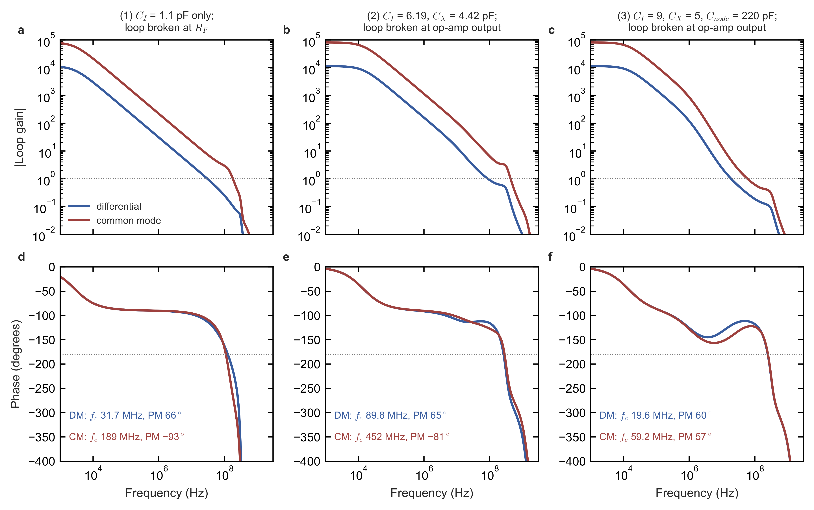
Figure 12. The front end’s compensation in three steps (H, gain 100): (a, d) without the cross-coupled capacitors ( = 1.1 pF only, loop broken at ), the common-mode outer loop is unstable, −93° at 189 MHz; (b, e) with them but without , the outer loops are stable but the op amp’s own common-mode loop is not, −81° at 452 MHz, which only a loop broken at the op amp’s output shows; (c, f) the final values. The crossovers and phase margins printed in (d)–(f) follow Table 7’s convention (scripts/make_figures.py, from curves_loop.npz).
The remaining common-mode gain margin, 8.4 dB for H and 10 dB for L where the phase crosses −180° (251 and 204 MHz, interpolated between the points of curves_loop.npz), depends on the THS4021 model’s behaviour far above its specified bandwidth and on the layout’s capacitance at the summing node. Section 4.3.1 examines how robust it is and what else could be done.
An instability that the AC response, the noise analysis and a loop gain broken at all fail to show is the most dangerous kind, because every routine check of the design passes. This section collects what was done about it, how much margin the fix leaves, which other cures exist and what each costs, and the rules and bench tests that should catch such a mode in a future design or a built board.
The root cause. A decompensated op amp (the THS4021 is stable at gains of 10 V/V or more, SLOS265F p. 1) closes its own local loop through its feedback capacitors. In common mode that loop’s feedback fraction at high frequency is
(10a)
where is the summing node’s own capacitance: the cascodes’ at their bias, 4.3 pF each ( = −5.0 V; the LSBF862 card’s CGD = 14.3 pF and PB = 0.5 V in , ngspice’s grading exponent 0.5), and the THS4021’s input capacitance of 1.5 pF (SLOS265F p. 7), 10.1 pF in all for H. With no added , was 10.61/(10.61 + 10.1) = 0.51, far above the 0.1 that the op amp tolerates (1/10, from its minimum stable gain). The cross-coupled , introduced to tame the outer common-mode loop, is what makes the local common-mode feedback capacitance large. In differential mode the same capacitor subtracts, . Once the two outer loops are equalised, (Eq. (10)), so the local loop’s differential bandwidth is at most about
(10b)
for H at a gain of 100, with the THS4021’s gain–bandwidth product of 2 GHz (SLOS265F p. 1; scripts/numbers_s4a.py). This bound, not the JFETs, limits the front end’s bandwidth once makes the common-mode loop stable. The adopted H values do not equalise the outer loops: their = 4/14 = 0.29 is about twice , which slows the differential outer loop (8.9 against 21 MHz, Table 7) and raises the differential local bandwidth to = 2 GHz × 0.0164 = 33 MHz.
Robustness of the adopted fix. Table 7a gives the complete loop’s margins, broken at the op amp’s output, for the final values and for corners of the parts and the layout (scripts/stability_corners.py). Alongside the phase and gain margins it gives the modulus margin : the closest approach of the return ratio to −1. Its inverse is the peak of the loop’s sensitivity function, and this note takes 0.5 (a 6 dB peak) as its minimum for a robust loop, a design rule (rule 4 below). The weak corner is a smaller : at 0.7 times its value, H keeps only 5.7 dB of common-mode gain margin and a modulus margin of 0.47. A larger only improves the common-mode loop, at a few degrees of differential phase margin. The differential margin is sensitive to , a small difference of two larger capacitors (4 pF from 9 and 5 pF for H): 10 % errors in opposite directions bring it down to 43°.
Table 7a. Complete-loop margins of the front ends at corners of the parts and the layout: phase margin, gain margin and modulus margin, in differential (DM) and common mode (CM) (sim/results/stability_corners.json; L with its 6 V sinks, as in Table 7).
| Case | H ×100, DM | H ×100, CM | H ×10, DM | H ×10, CM | L, DM | L, CM |
|---|---|---|---|---|---|---|
| Nominal | 60°, 19 dB, 0.89 | 57°, 8.4 dB, 0.61 | 62°, 9.8 dB, 0.66 | 57°, 8.4 dB, 0.61 | 63°, 17 dB, 0.83 | 51°, 10 dB, 0.66 |
| × 0.7 | 64°, 16 dB, 0.84 | 58°, 5.7 dB, 0.47 | 63°, 7.0 dB, 0.54 | 58°, 5.7 dB, 0.47 | 66°, 14 dB, 0.78 | 50°, 7.6 dB, 0.54 |
| × 1.3 | 56°, 21 dB, 0.89 | 55°, 10.5 dB, 0.69 | 60°, 12 dB, 0.73 | 55°, 10.5 dB, 0.69 | 60°, 19 dB, 0.86 | 51°, 12 dB, 0.72 |
| × 1.1, × 0.9 | 69°, 16 dB, 0.85 | 58°, 8.2 dB, 0.60 | 64°, 8.7 dB, 0.63 | 58°, 7.6 dB, 0.58 | 67°, 15 dB, 0.79 | 52°, 9.9 dB, 0.64 |
| × 0.9, × 1.1 | 43°, 23 dB, 0.72 | 56°, 8.6 dB, 0.62 | 59°, 11 dB, 0.70 | 55°, 9.0 dB, 0.64 | 55°, 19 dB, 0.87 | 51°, 11 dB, 0.67 |
| 10 pF at each op-amp output | 59°, 20 dB, 0.89 | 53°, 9.2 dB, 0.63 | 59°, 11 dB, 0.67 | 53°, 9.2 dB, 0.63 | 61°, 17 dB, 0.82 | 48°, 11 dB, 0.64 |
Three practical consequences follow for a build:
comp_search_H100.json, comp_search_L200.json). They should be C0G parts, placed right at the op amp’s inverting input with a short return to the op amp’s own supply-bypass ground. The layout’s own capacitance at the summing node adds to and helps.Other cures and their costs. Table 7b compares the adopted fix with the alternatives, each simulated with the same complete-loop check and, where it matters, the same noise and bandwidth runs (sim/results/comp_search_*.json, stability_corners.json, fe_gain_scan.json, fe_gain_options.json, lv_option.json).
Table 7b. Ways to stabilise the H front end (gain 100 unless stated), against the adopted fix. Margins of the complete loop (phase, gain, modulus); bandwidth of the front end alone; noise of the front end alone.
| Option | DM margins | CM margins | −3 dB | Noise: 10 Hz / white / 10 MHz | Costs |
|---|---|---|---|---|---|
| Adopted: 220 pF, 9, 5 pF | 60°, 19 dB, 0.89 | 57°, 8.4 dB, 0.61 | 15 MHz | 2.67 / 1.07 / 1.50 nV/√Hz | bandwidth halved (Section 4.3); noise above a few MHz |
| More (330 pF) | 52°, 22 dB | 53°, 11.7 dB | 14 MHz | not simulated; by Eq. (9), more above 1 MHz | less DM margin; a little more HF noise |
| Less bandwidth ( = 5 pF) | 67°, 17 dB | 57°, 8.4 dB | 12 MHz | not simulated | bandwidth; does not change the CM margin |
| Isolation resistor of 33 Ω at each op-amp output | 56°, 22 dB, 0.88 | 49°, 11 dB, 0.70 | – | – | trades phase for gain margin; not a cure |
| Lower front-end gain, larger (×20: 52.6 Ω) + more gain after | 58°, 13 dB, 0.77 | 57°, 8.4 dB, 0.61 | 27 MHz | 3.09 / 1.44 / 2.14 nV/√Hz | +35 % white noise from ; CM margin unchanged |
| Lower front-end gain, larger (×30: 34.5 Ω) + more gain after | 56°, 15 dB, 0.82 | 57°, 8.4 dB, 0.61 | 26 MHz | 2.90 / 1.29 / 1.87 nV/√Hz | +21 % white noise; CM margin unchanged |
| Lower front-end gain, smaller (×20: 96 Ω; , , × 5.2) + more gain after | 50°, 22 dB, 0.81 | 42°, 11 dB, 0.57 | 16 MHz | 2.66 / 1.07 / 5.38 nV/√Hz | no bandwidth gained; noise above 1 MHz; less CM phase margin |
| Lower front-end gain, smaller (×30: 146 Ω; × 3.4) + more gain after | 54°, 21 dB, 0.85 | 47°, 10 dB, 0.62 | 16 MHz | 2.67 / 1.07 / 3.63 nV/√Hz | as above |
| Low-voltage, unity-gain-stable op amp: ADA4899 on ±5 V (summing node +3 V, bootstrap 1.2 V, 8.5, 5.5, 22 pF) | 59°, 34 dB, 0.90 | 50°, 20 dB, 0.75 | 19 MHz | 3.53 / 1.06 / 1.07 nV/√Hz | output swing (6.0 V differential at most) and common-mode range; two more rails; LF noise per the model (below) |
A lower gain in the first stage is the natural first idea. The gain can be lowered in two ways (scripts/gain_options.py). Neither cures the oscillation, because no common-mode current flows in , so the common-mode loop is the same at every gain. Table 7c shows where the noise of each comes from.
python gain_options.py derived).None of these is needed here. The common-mode margin does not depend on the first stage’s gain, and the gain-100 front end already reaches 15 MHz. The H front end’s gain-10 range is the extreme of the route. It has = 0.66, needs only 1 pF of cross-coupling and reaches 26 MHz. But its white floor is 1.9 nV/√Hz, of which (111 Ω) gives 1.22, the sinks 0.79 and 0.62 nV/√Hz (Table 7c). A range switch has to take the route all the same. A range exists to accept larger inputs, and at a full output swing each op amp drives about into its , whatever is. With = 96 Ω that is 125 mA at 12 V, the THS4021’s guaranteed swing into 250 Ω, against its guaranteed 80 mA (TI SLOS265F, p. 7).
Table 7c. Where the white noise of the H front end comes from: input-referred contributions at 10 kHz, front end alone, in nV/√Hz (scripts/gain_options.py, fe_gain_options.json). The totals at 10 MHz also contain the op amps’ voltage noise driving .
| Contributor | Gain 100 (adopted) | Gain 20, larger (52.6 Ω) | Gain 20, smaller (96 Ω) | Gain 10 range ( 111 Ω) |
|---|---|---|---|---|
| Input JFETs | 0.94 | 0.94 | 0.94 | 0.94 |
| 0.40 | 0.89 | 0.39 | 1.22 | |
| (summing node) | 0.28 | 0.43 | 0.28 | 0.62 |
| Loop op amps (summing node) | 0.13 | 0.20 | 0.13 | 0.29 |
| Current sinks (source node) | 0.08 | 0.40 | 0.08 | 0.79 |
| 0.04 | 0.20 | 0.09 | 0.40 | |
| Bootstrap | 0.01 | 0.04 | 0.01 | 0.09 |
| Total at 10 kHz | 1.07 | 1.44 | 1.07 | 1.90 |
| Total at 10 MHz | 1.50 | 2.14 | 5.38 | 2.94 |
A faster, unity-gain-stable, low-voltage op amp removes the conflict at its root, but its low supply limits the output swing and the common-mode range (below), so it is an alternative only where those suffice. The ADA4899-1 is unity-gain stable with 600 MHz of bandwidth at a gain of +1, 1 nV/√Hz and 2.6 pA/√Hz, and 310 V/µs (Analog Devices’ product page; its data sheet was not obtained). ADI’s model, corrected for its 4 kΩ input resistor, has the same 1.0 nV/√Hz and 2.6 pA/√Hz white (opamp_noise_check.json). Because it is stable at any noise gain, its local loop needs no large ; 22 pF is enough to bring the common-mode phase margin to 50°. In simulation (H at a gain of 100, ADI’s model):
Its rails, ±5 V (5–12 V in total), are the price:
lv_option_range.json), so it moves from +9 V to +3 V. The bootstrap must shrink to keep the cascode working: 1.2 V instead of 3.5 V, giving the input JFETs 1.55 V of instead of 3.9 V and the cascodes 1.1 V.scripts/lv_option.py, range); the range itself was not simulated. A folded cascode (a PNP or P-JFET stage that hands the JFETs’ signal current down to a summing node near 0 V) would restore the range. It adds the noise of its own current sources at the summing node, divided by like ’s, and it has not been simulated.opamp_noise_check.json), and the front end gives 3.5 nV/√Hz at 10 Hz against 2.7 (lv_option.json). This model’s 1/f could not be checked against a data sheet, and Section 5.3 shows how often vendors’ 1/f is wrong.The similar ADA4817-1 (1 GHz, FET input, 4 nV/√Hz, 2.5 fA/√Hz; Analog Devices’ product page) would remove the current-noise term altogether. Its ADI model has the 4.0 nV/√Hz white but a very large voltage 1/f, 170 nV/√Hz at 10 Hz (opamp_noise_check.json), unverified.
Options not recommended. Removing : the outer common-mode loop is then unstable (Figure 12a). A low-gain-stable op amp on ±15 V (THS4031, LM7171): the THS4031 is unity-gain stable with 120 MHz of bandwidth (TI SLOS224L, p. 1), so by Eq. (10b) with up to 1 its local differential bandwidth is at most 120 MHz × 0.15 = 18 MHz. The LM7171 is stable only at gains of +2 or more (TI SNOS760D, p. 1), so ≤ 0.5, and its A grade’s 160 MHz of unity-gain bandwidth (§5.5, p. 5) gives 160 MHz × 0.15 × 0.5 = 12 MHz. Against the 33 MHz of the adopted design, the outer loop would have to slow in proportion, from 8.9 MHz to about 3–5 MHz (an estimate, not simulated).
Design rules against this failure.
check_loop_out in scripts/frontend.py). A break at measures only the outer loop, with the local loop closed inside it.scripts/osc_check.py). The first front end’s oscillation was obvious there: 1.0 V peak to peak at 293 MHz with 50 Ω sources (Section 4.3).Bench tests. A first board should be checked for this mode before anything else:
stability_corners.json). Then fit for at least 6 dB of measured gain margin.Bootstrapping removes most of the JFETs’ capacitance from the input: the source follows the gate, so carries almost no current, and the drain follows through the bootstrapped cascode, so carries little either. The effective input capacitance of the bare H front end, with the other input grounded, is 0.047–0.053 pF from 1 kHz to 300 kHz (0.11 pF at 1 MHz), against the JFETs’ own = 2 × 13 = 26 pF (SLPS730B §6.5, p. 5); L’s is 0.31–0.36 pF (0.95 pF at 1 MHz) against 12 × 24 = 288 pF (SLPS732B §6.5, p. 5) (Figure 13a, zin_numbers.json). Below 355 Hz it rises above twice its minimum, toward , because no longer holds the cascode’s gate to the source; above 0.89 MHz (H) and 0.71 MHz (L) it does so as the loop gain falls (protection.json).
The bootstrap has a price. The source follows the gate with a small phase lag , so sees and draws a current that leads by less than 90°. Its in-phase part is a negative input conductance,
(11)
which falls as in resistance (Figure 13b): to −1.07 kΩ at its smallest, at 12.6 MHz, for H and to −112 Ω at 17.8 MHz for L (on the simulated grid, zin_numbers.json). With a source impedance large enough, the source’s resistance, its capacitance and this negative conductance form an underdamped or unstable pair of poles. Without any input network, a 1 MΩ source peaks by 22 dB at 0.24 MHz on H, and a 1 kΩ source by 16 dB at 2.6 MHz on L (Figure 13c, zin_numbers.json).
The input network damps these poles. A series + to ground has , rising as like Eq. (11) up to , and its thermal noise is shorted by at low frequencies. The values are = 2.2 kΩ and = 10 pF (H) and 47 Ω with 220 pF (L), with a of 10 and 30 pF for the connector, the relay and the protection (an assumed allowance, not from data sheets). L’s input conductance is then positive at every frequency, but H’s is not: the network’s conductance, 0.34 mS at 12.6 MHz and at most = 0.45 mS, cancels only part of the bare front end’s −0.94 mS there, and H’s input conductance stays negative from 0.16 to 25 MHz, with −1.68 kΩ at 12.6 MHz (zin_numbers.json, scripts/numbers_s4b_5.py). The responses stay flat all the same, with the network’s capacitance now dominating the input: none of the three sources simulated, 50 Ω, 1 kΩ and 1 MΩ, peaks by more than 0.52 dB (H, 1 kΩ, at 5.0 MHz; Figure 13c). The input capacitance is then , 20 pF for H and 250 pF for L below = 7.2 and 15 MHz (simulated: 20.0 and 250.3 pF at 100 kHz), against 25 pF for the SR560 (manual Rev. 3.1, p. 5) and less than 35 pF for the NF 5307 (operation manual, §5.1, p. 31). For L that is intended, since L is meant for low source resistances: it is the quieter input only below about 96 Ω at 10 MHz, 0.70 kΩ at 1 MHz and 27–70 kΩ at 1 kHz and 10 Hz, where the two inputs’ noise curves cross (Section 6.2; noise_vs_source.json, scripts/numbers_s4b_5.py). For H it means that the bootstrap’s main benefit is not a lower input capacitance but the removal of the JFETs’ voltage-dependent junction capacitance from the input, and of its distortion with high source impedances.
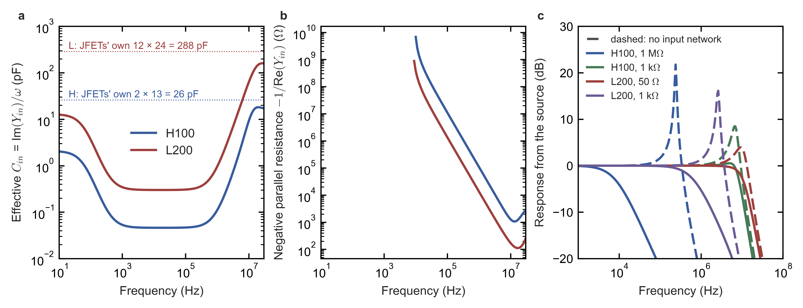
Figure 13. (a) Effective input capacitance of the bare front ends (the other input grounded), against the JFETs’ own capacitance , 2 × 13 pF (H) and 12 × 24 pF (L) (SLPS730B and SLPS732B §6.5, p. 5). (b) The negative parallel resistance from the bootstrap’s phase lag, Eq. (11). (c) Response from a 1 MΩ and a 1 kΩ source (H) and from a 50 Ω and a 1 kΩ source (L), without (dashed) and with the input network (scripts/collect_curves.py, curves_zin.npz, curves_sources.npz; numbers in zin_numbers.json).
Input protection and its costs. The inputs need protection against static discharge, against a source that is connected while charged, and against overloads that the loop cannot follow. A protection network is a series resistor and clamp diodes, and each costs something.
A series resistor adds its thermal noise in full, since it sits in series with the source. Both inputs carry one, so the differential input gets . It also forms a low-pass filter with the input capacitance, . Table 7d gives the numbers, with the input capacitance of the input networks, (20 pF for H, 250 pF for L).
Table 7d. A series protection resistor in each input (closed forms, scripts/protection.py, protection.json: added in quadrature to the chain’s simulated white floors at a total gain of 1000, 1.08 and 0.42 nV/√Hz, from chain_noise.json; the poles ; the noise figure for H with a 1 kΩ source).
| per input | Added differential noise | H total | L total | Pole, H (20 pF) | Pole, L (250 pF) | Noise figure, H, 1 kΩ source |
|---|---|---|---|---|---|---|
| 0 | – | 1.08 nV/√Hz | 0.42 nV/√Hz | – | – | 0.30 dB |
| 1 Ω | 0.18 nV/√Hz | 1.10 | 0.46 | 8 GHz | 640 MHz | 0.30 dB |
| 10 Ω | 0.58 | 1.22 | 0.71 | 800 MHz | 64 MHz | 0.38 dB |
| 22 Ω | 0.85 | 1.38 | 0.95 | 360 MHz | 29 MHz | 0.47 dB |
| 47 Ω | 1.25 | 1.65 | 1.32 | 170 MHz | 13.5 MHz | 0.66 dB |
| 100 Ω | 1.82 | 2.12 | 1.87 | 80 MHz | 6.4 MHz | 1.04 dB |
| 1 kΩ | 5.76 | 5.86 | 5.77 | 8 MHz | 0.6 MHz | 4.9 dB |
For L, whose whole point is its 0.42 nV/√Hz, no series resistor above about 1 Ω is acceptable: 10 Ω already raises its floor by 70 %. For H, the quieter input above its crossovers with L (Section 6.2), 10–22 Ω costs 13–27 % of the floor but only 0.1–0.2 dB of noise figure with a 1 kΩ source, and its bandwidth is unaffected. A series resistor large enough to limit a real fault current (hundreds of ohms to kilohms) is possible on neither input: it would be the noisiest part of the amplifier.
Clamp diodes add three things:
protection.json). Above 1 GΩ of bias, or with source impedances of that order, the leakage would dominate.A clamp to fixed rails must also sit outside the input’s common-mode range, which is −12.8 V to +3.7 V for H and −9.0 V to +3.6 V for L (Eqs. (8c) and (9b); protection.json). Above +3.7 V (H) or +3.6 V (L) the cascodes run out of headroom below the +9 V summing node; below −12.8 V (H) or −9.0 V (L) the current sinks saturate. This range is estimated from the operating point, not simulated.
Bootstrapped clamps avoid both the capacitance and the nonlinearity. Diodes connected between each gate and the source node of its own side see only , which the loop holds constant (−0.36 V for H, −0.56 V for L), so in normal operation:
The forward direction (gate above source) is already clamped by the JFET’s own gate junction, which takes milliamperes. The reverse direction needs a string of two or three diodes, enough that the standing leaves each of them below about 0.2 V of forward bias, a margin chosen here: two diodes take 0.18 V each for H and three take 0.19 V for L (protection.json). Such a clamp protects the JFETs against differential overloads at any common-mode voltage, but not against an input beyond the supply rails. That requires an outer clamp to the rails. For H it sits behind 10–22 Ω; for L it sits at the connector, and L relies on its source’s own low impedance to limit the current.
Recommendation:
None of this protection is in the simulated netlists, and none of it has been checked against a discharge or a fault (Section 7).
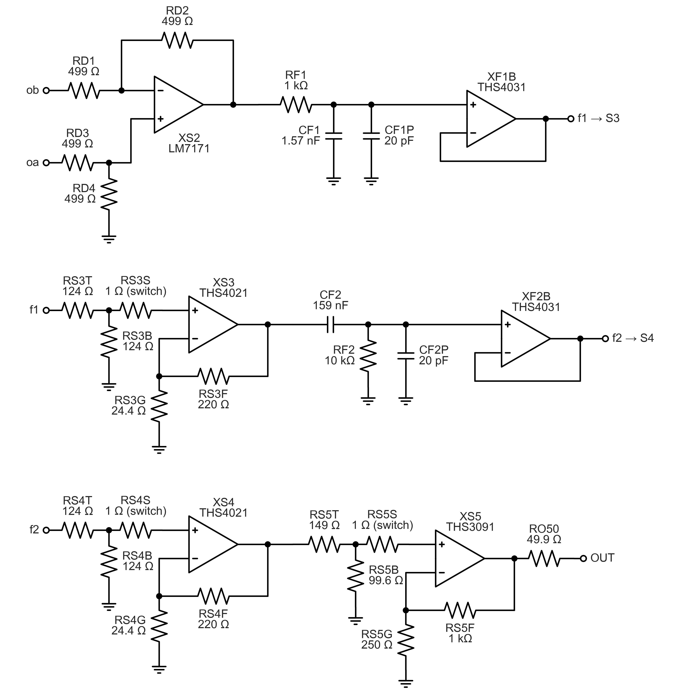
Figure 14. The signal chain after the front end, drawn for the H front end at a total gain of 5000 ( = 100, = 1/2 and = 2/5 in Eq. (7)) with a 100 kHz low-pass in F1 and a 100 Hz high-pass in F2 (the attenuators at the taps used in this example). Checked part by part against the simulated netlist.
da_compare.json), and it limited the 10 V step to 133 V/µs (large_signal_THS4031.json). The cost is noise in the H settings with the front end at a gain of 10 (Table 10).At the lowest gains the THS3091’s inverting-input current noise in its 1 kΩ feedback resistor matters: 14 pA/√Hz white (SLOS423K §7.5, p. 6) and about 200 pA/√Hz at 10 Hz (Fig. 7-16, p. 12) give 14 nV/√Hz and, with the 1/f continued below 10 Hz as in the corrected model, about 630 nV/√Hz at 1 Hz. At a total gain of 1 the chain has 24.6 nV/√Hz white and 650 nV/√Hz at 1 Hz (chain_noise.json), so this term is a third of the white noise power and 94 % of it at 1 Hz (scripts/numbers_s4b_5.py). Below a gain of 10 a lower-noise output stage, or S5 bypassed for a unity-gain buffer, would help.
The front end amplifies the difference of the two sides’ by its gain. For H, the JFE2140’s halves match to 4 mV at most and 1 mV typically, and drift apart by at most 10 µV/°C (SLPS730B §6.5, p. 5). The Monte Carlo of Section 6.4 (scripts/cmrr_mc.py) shifts the and of each dual by a common amount (σ 100 mV and 5 %) and those of each half by its own (σ 0.85 mV and 1 %), so that the two halves of a dual differ by σ = 1.2 mV and 1.4 %. These σ are assumptions; for in particular the data sheet gives no matching, only an ratio. They put its limits, 4 mV and an ratio of 0.95–1.05 (p. 5), at 3.3σ and 3.5σ of the difference, and make the mean magnitude of the difference, = 0.96 mV, close to the typical 1 mV. The Monte Carlo gives an output offset of 3.4 V rms at a total gain of 1000, i.e. 3.4 mV at the input (cmrr_mc.json, 12 trials). Most of it comes from the assumed mismatch. At a fixed current , with = 0.59 V, so the two sides, with two duals each, differ by 3.0 mV rms from and by 0.85 mV rms from (scripts/numbers_s4b_5.py). For L, unsorted JFE150 would not work. Taking the data sheet’s range, −1.5 to −0.9 V (SLPS732B §6.5, p. 5), as ±3.5σ gives σ = 0.6 V/7 = 86 mV per device (an assumption); the means of the two sides’ twelve then differ by = 35 mV rms, which a total gain of 1000 turns into 35 V rms: the chain saturates. The 24 JFE150 must therefore come from one bin, here ±5 mV at 5 mA (a design choice). The Monte Carlo draws each of them within the bin with σ 3 mV of (a uniform ±5 mV spread has = 2.9 mV) and 2 % of (assumed), and leaves 2.3 V rms of offset at a total gain of 1000, i.e. 2.2 mV at the input (2.26 V/1005).
Both front ends therefore need an offset trim, which also cancels the drift of the later stages. A current injected into one summing node shifts the input by , with the weight of Eq. (9) for a current entering that node, . Read from the simulated noise of , which enters the same node ( for both sides, Table 9’s runs, curves_noise.npz), is 38 Ω for H at a gain of 100, 83 Ω at a gain of 10 and 4.8 Ω for L. Eq. (9) gives these values only with the cards’ source resistance in series with : for H, = 38.0 Ω, against 34.0 Ω without it. For H, a 12-bit DAC at ±10 V through 50 kΩ gives ±200 µA, i.e. ±7.6 mV at the input at a gain of 100 and ±16.6 mV at a gain of 10, in steps () of 3.7 and 8.1 µV, and the 50 kΩ adds = 0.58 pA/√Hz, i.e. 0.022 and 0.048 nV/√Hz at the input. For L, 10 kΩ gives ±1 mA, i.e. ±4.8 mV, in steps of 2.4 µV, and adds 1.29 pA/√Hz, i.e. 0.0062 nV/√Hz (scripts/numbers_s4b_5.py). These ranges are 2.3 (H at a gain of 100), 5.0 (H at 10) and 2.2 (L) times the rms input offsets of the Monte Carlo (3.4, 3.3 and 2.2 mV, cmrr_mc.json), so that, for a Gaussian spread, 2.3 % of H front ends at a gain of 100 would lie outside the range, against % at a gain of 10 and 3.1 % for L ( for a range of times the rms offset, scripts/numbers_s4b_5.py). With 100 kΩ, H’s range at a gain of 100 would be only 1.1 times its rms offset, and 26 % would lie outside. The DAC’s own output noise passes through the same resistor; it adds less than the resistor’s thermal noise as long as it is below , 29 nV/√Hz for 50 kΩ and 13 nV/√Hz for 10 kΩ. An AC-coupled mode, or an optional DC servo around the whole chain, handles the cases where the input’s own offset is larger.
Drift from the sinks’ temperature difference. A sink’s current depends on its . A temperature change common to the two sinks moves the outputs in common mode (Section 4.2); a temperature difference between them leaves a current difference, which flows through and appears at the input with the weight :
(11a)
With the MMBT3904 card’s = 1.17 eV and = 3, is −1.7 mV/K for H’s sinks at 11 mA and −1.5 mV/K for L’s at 62 mA (scripts/fe_closed_forms.py). The simulation with ngspice’s dtemp on one sink (scripts/sink_power.py) also includes the rest of the model’s temperature dependence:
At the front end’s output, the simulated drift times the gain, this is 4.9 mV/K for H at either gain and for L, and 12.4 mV/K for L’s first design. The error relative to full scale is therefore the same on both of H’s ranges. For comparison, the JFE2140’s two halves drift apart by at most 10 µV/°C (SLPS730B §6.5, p. 5). A build should therefore keep the two sinks in one thermal environment: side by side, with mirrored copper, out of air currents. The offset trim removes what remains at one temperature.
If that is not enough, there are two remedies, neither simulated:
(11b)
0.09 nV/√Hz for L with = 5 nV/√Hz across 98.4 Ω, but 1.9 nV/√Hz for H at a gain of 10, across 182 Ω.
The preamplifier runs on ±15 V from LT3045 and LT3094 regulators fed with ±17 to ±18 V from an external linear supply, as for the SR560’s battery-free operation. Each regulator’s output is set by its 100 µA SET current in = 150 kΩ; = 4.7 µF and = 10 µF (ceramic). That is 100 µA × 150 kΩ = 15 V, the top of the LT3045’s output range, and the SET current’s ±1 % initial accuracy allows 1.01 × 15 V = 15.15 V (LT3045 data sheet Rev. D, p. 1). The LT3094 (data sheet Rev. 0, pp. 1, 4–5, a public mirror of ADI’s document; ADI’s Rev. B in refs/literature/ gives the same values) gives, with the LT3045’s values (Rev. D, pp. 1, 3) in parentheses:
The preamplifier’s own supply rejection, referred to its input, is 98–101 dB up to 100 kHz, 81–86 dB at 1 MHz and 61–66 dB at 10 MHz (H, gain 100, large_signal.json; L at 1000 with its 6 V sinks is better by 9–20 dB, sink_power.json; Section 6.5). The regulators’ noise therefore reaches the input at a level of picovolts per root hertz: taking the rejection at 100 Hz, the lowest frequency simulated, 70 nV/√Hz at 10 Hz becomes = 0.60 pV/√Hz on +15 V and 0.65 pV/√Hz on −15 V (100.7 dB), far below the amplifier’s own nanovolts. The supply’s ripple is rejected by the regulator and the amplifier in series: at 1 MHz by 76 + 81 = 157 dB on +15 V and 74 + 86 = 160 dB on −15 V. Above 10 MHz the regulators’ rejection fades, so a ferrite and a few microfarads per rail at each stage are still needed. The L front end draws 120 mA from +15 V through its drain resistors alone; the preamplifier with L draws 177 mA from +15 V and 178 mA from −15 V, and 193 and 194 mA with both filters on (with H 76–92 mA; operating points with ideal references, scripts/chain_extras.py, chain_extras.json). With 2–3 V of headroom each regulator then dissipates 0.35–0.58 W with L (0.15–0.28 W with H), which raises the MSOP’s junction by 19–20 K: its is 33 °C/W with 2500 mm² and 35 °C/W with 100 mm² of top copper on the data sheets’ four-layer test board (LT3094 Rev. 0, p. 3 and its Table 4, p. 28; LT3045 Rev. D, p. 2 and its Table 4, p. 22; scripts/numbers_s4b_5.py).
At 1–10 Hz the front ends’ noise has two sources (Table 9): the JFETs’ own 1/f noise, and the loop op amps’ 1/f noise, which the THS4021 brings with it. The THS4021 is there for its bandwidth: a decompensated amplifier, stable at gains of 10 or more, with a gain–bandwidth product of 2 GHz and 1.2 nV/√Hz (SLOS265F p. 1; 1.5 nV/√Hz in the DGN package, §5.7, p. 8). Its data sheet’s 1/f is moderate (about 4 nV/√Hz and 18.6 pA/√Hz at 10 Hz, Figs. 5-11 and 5-12, p. 11), but in the front end its current noise appears with the weight of Eq. (9) per side and its voltage noise through the outer loop, and at a front-end gain of 10 the op amps contribute about as much as the JFETs at 1 and 10 Hz (7.3 against 7.0 and 2.3 against 2.4 nV/√Hz, curves_noise.npz).
Case DC–10 MHz (this design). The values of Table 9: H 2.7 nV/√Hz at 10 Hz and 7.8 at 1 Hz (gain 100), L 0.83 and 2.3. At 1 Hz the JFETs’ share rests on the extrapolation of their 10 Hz calibration, which a published measurement puts 2.2 times too high for H’s JFETs and the JFE150’s own curve up to 2.7 times too low for L’s (Section 3.4).
Case DC–1 MHz (a low-1/f variant). With a tenfold lower bandwidth target, the loop op amps can be chosen for 1/f instead of speed: a FET-input op amp of 50–100 MHz on ±15 V removes the current-noise term (the OPA2810, 70 MHz, comes close but runs on 4.75–27 V, SBOS789C p. 1), and a bipolar one with a low 1/f corner (OPA1612-class, 40 MHz, SBOS450C p. 1) the voltage term. The projected noise is the simulated noise without the op amps’ group, (curves_noise.npz, scripts/numbers_s4b_5.py): H at a gain of 100 falls from 2.67 to 2.45 nV/√Hz at 10 Hz and from 7.8 to 7.1 at 1 Hz; H at a gain of 10 from 3.7 to 2.9 at 10 Hz and from 10.2 to 7.2 at 1 Hz; L from 0.83 to 0.77 at 10 Hz and from 2.3 to 2.1 at 1 Hz. These are upper bounds on the benefit, since the slower op amp’s own noise is not zero; for H at a gain of 100 and for L the JFETs dominate in either case. The larger lever at low frequencies is the JFET: JFE150 instead of JFE2140 in H (at 10 Hz and 2 mA, 1.6 against 2.4 nV/√Hz per device, and 1.8 for the JFE150 at 5 mA, SLPS732B and SLPS730B §6.5, p. 5; at 1.8 times the capacitance, 24 against 13 pF), or IF3601-class parts in L (0.6 nV/√Hz at 10 Hz per device at 5 mA, IF35076.R01, p. 3). The DC–1 MHz case also relaxes the compensation conflict of Section 4.3, so can be smaller and the noise above 1 MHz returns to the white floor.
All simulations ran in ngspice-46, loaded as the shared library that KiCad 10 installs, from Python (scripts/ngspice_shared.py, scripts/spice.py), with PSpice compatibility on, .options reltol=1e-4 abstol=1e-15 vntol=1e-9 gmin=1e-14 for AC and noise, and Gear integration with abstol = 1e-12 A for transients, followed, where a transient stops, by the KLU solver and the further option sets of Appendix A. Every deck is written to its own folder in sim/runs/ with its log and data. The models (Section 5.2) are prepared by scripts/models.py into sim/models/_lib/. The checks used:
noise … 1, wrdata noise.txt all), referred to the input through the response at the same frequency and grouped by part;A pitfall: a wrong operating point without an error. When gmin stepping and source stepping both fail, ngspice-46 falls back to a transient operating point: the end of a 10 µs transient, which it notes only in the log and which need not be a DC solution (Appendix A). For the two variants of Section 4.3.1 with a smaller at a gain of 20, the decks of the complete loop (the injection at the op amps’ outputs) fell back in this way, while the AC and noise decks of the same circuits converged. In the fallback’s state the 10 µF of the sinks’ reference filter and the 1 µF bootstrap capacitors are still almost uncharged, against time constants of milliseconds (10 ms for the filter’s 1 kΩ and 10 µF). The sinks’ bases sit at −0.13 V instead of −12.24 V, the saturated sinks pull the source nodes to −1.49 V instead of +0.355 V, the input gates conduct 50 mA each, and the op amps sit at −10.0 V. Kirchhoff’s current law at the bootstrap node fails by 1.51 mA, ’s whole current, which in the transient is still charging . The loop gain is then near zero at every frequency: the margins come out as no crossover and 36 dB of gain margin, where the circuit has 50.4° at 17.8 MHz. Tying the gates through 1 Ω instead of 1 mΩ does not help here. With abstol = 1e-12 A instead of 1e-15 A the decks converge, to the margins of Table 7b: 50.4° and 21.5 dB at 17.8 MHz in differential mode, 42.1° and 10.6 dB at 54.0 MHz in common mode (scripts/op_pitfall.py reproduces every number of this paragraph, sim/results/op_pitfall.json). Which deck falls back cannot be told from the circuit. With the servo of Appendix B in the netlists, these loop decks converged and two other decks fell back instead. The noise deck of the gain-30 variant gave 64.0 nV/√Hz instead of 1.07, with the same uncharged bootstrap (1.49 mA of ’s 1.50 mA), while its AC deck converged. The decks of the JFE150 sink at a gain of 100 (Section 6.1) settled with the source nodes at −0.95 V and the input gates conducting, which only the AC response gave away, with a bandwidth of 322 MHz instead of 15.0 MHz; those decks converged with 1 Ω ties. Without the servo, both converge as they are. scripts/gain_options.py and scripts/sink_options.py therefore check the log of every deck they run, and repeat a case whose decks fell back with abstol = 1e-12 A, then with 1 Ω ties, then with both (op_checked in scripts/frontend.py); each entry records what it took. gain_options.py also compares each noise run’s own gain with the AC run’s at 1 kHz and repeats a run that disagrees from the AC run’s operating point (.nodeset), the check that caught the gain-30 case.
standard.jft (2N5564, LSK389, LSK170, LSK489; LTspice 26.1.1.0, library file of 20 September 2026, model_defects.json), each wrapped with a gate resistor RX and calibrated to its data sheet (Section 3.4). Only the NJF cards of the TI subcircuits are used; their ESD-clamp switches are left out.scripts/blocks.py, opn) with the data sheets’ typical noise, 1/f corners, gain-bandwidth, slew rate and output limits: OP37, LF411, LT1028, LF356; in its corrected models, with the open-loop gain and phase fitted to their data sheets’ plots (scripts/sr560_bw_check.py; Section 2.2).Every model was checked against its data sheet before use, and in this project most of them needed a correction. The errors are large and of several kinds, so the checks are worth repeating with any new model. Table 8 lists what was found; the explanations follow.
Table 8. Defects found in the vendor models used, measured with each model alone in ngspice against its data sheet’s typical values (scripts/opamp_noise_check.py and scripts/model_defects.py, with the results in opamp_noise_check.json and model_defects.json; the op-amp figures from two-gain noise runs that separate the voltage and current noise; the JFET calibration by scripts/models.py). Data-sheet values cited by figure are read by eye from its curves, except the JFETs’ and the THS4021’s and THS4031’s current noise, read from the curves’ pixels (scripts/ti_plot_check.py).
| Model | Quantity | Model gives | Data sheet | Error | Correction |
|---|---|---|---|---|---|
| TI JFE2140 (SLPM355) | 1/f, KF | 0.2e-18: 1.2 nV/√Hz at 10 Hz, 2 mA | 2.4 nV/√Hz (SLPS730B §6.5, p. 5) | 1/f power 14× too low | KF = 2.9e-18 |
| TI JFE2140 | , at 5 V | 8.6 pF, 1.25 pF | 13 pF (§6.5, p. 5), 3.9 pF (Fig. 6-17, p. 8) | 0.67×, 0.32× | CGS, CGD refitted |
| TI JFE150 (SLPM349I) | 1/f, KF | 3.25e-18: 1.75 nV/√Hz at 10 Hz, 5 mA (with the calibrated white) | 1.8 nV/√Hz at 10 Hz, 5 mA (SLPS732B §6.5, p. 5) | consistent: the calibrated KF is 7.5 % higher | KF = 3.5e-18 |
| TI JFE150 | , at 5 V | 17.8 pF, 2.3 pF | 24 pF (§6.5, p. 5), 4.1 pF (Fig. 6-12, p. 7) | 0.74×, 0.55× | refitted |
| Linear Systems LSBF862 (Rev 2, 2026) | 1/f, KF | 8.75e-17: 9.1 nV/√Hz at 10 Hz (Eq. (1)) | 1.4 nV/√Hz typ, 4.0 max (Doc 201195 Rev A2, p. 2) | 1/f power 50× too high (above the maximum) | KF = 1.74e-18 |
| Linear Systems LSBF862 | , at 8 V | 6.5 pF, 0.87 pF | 11.5 pF, 3.5 pF (p. 2) | 0.56×, 0.25× | refitted |
| LTspice standard.jft 2N5564 | KF | 67860f = 6.786e-11 | Linear Systems’ own listing (sim/models/LinearSystems/2N5564/): 6.786e-002f = 6.786e-17 |
× 10⁶ (unit prefix); 1/f corner 1.14 GHz | KF refitted to Vishay’s curve (70254 Rev. E, p. 5) |
| LTspice standard.jft J310 | KF | 46340f = 4.634e-11: 0.59 µV/√Hz gate-referred at 10 kHz (Eq. (1)), 0.54 in ngspice at 11 mA | – (data sheet not read) | implausible for any JFET; probably the same unit-prefix error as the 2N5564; as H’s sink at a gain of 10, 60.7 nV/√Hz at 10 kHz | none; the J310 sink was dropped (scripts/sink_options.py) |
| Linear Systems LSK170/LSK389 cards (LTspice) | channel noise | NLEV = 3, GDSNOI = 5–8; in ngspice the LSK389B gives 1.41 nV/√Hz with them and 0.86 without (2 mA, 10 V) | 1.6 nV/√Hz at 1 kHz (LSK389, Doc 201122 Rev A27, p. 2) | white noise set by an optional equation: 0.88× the data sheet with it, 0.54× without | NLEV, GDSNOI removed, RX calibration |
| TI THS4021 (SLOJ004, 1999) | , at 10 Hz; white | 18.2 nV/√Hz, 293 pA/√Hz; 1.18 pA/√Hz | 4 nV/√Hz, 18.6 pA/√Hz (SLOS265F Figs. 5-11, 5-12, p. 11); 2.3 pA/√Hz (§5.6, p. 6) | 4.6×, 16×; 0.52× | KF = 0, 1/f generators fitted; white kept |
| TI THS4031 (SLOJ005A) | , at 10 Hz; white | 22.2 nV/√Hz, 300 pA/√Hz; 1.12 pA/√Hz | 4 nV/√Hz, 18.6 pA/√Hz (SLOS224L Figs. 5-13, 5-14, p. 12); 2.3 pA/√Hz (§5.6, p. 6) | 5.5×, 16×; 0.49× | KF = 0, 1/f generators fitted; white kept |
| TI THS4031 | HD3 at 10 MHz | −38 dBc at 1 Vpp (in S2) | about −50 dBc at 2 Vpp, G = 2 (SLOS224L Fig. 5-15, p. 12) | 12 dB above the curve as read; 24 dB after scaling to 2 Vpp (HD3 ∝ ) | none; LM7171 chosen |
| TI THS3091 (SLOM418) | , at 10 Hz | 37 nV/√Hz, 317 pA/√Hz | 6.5 nV/√Hz, 200 pA/√Hz (SLOS423K Fig. 7-16, p. 12) | 5.7×, 1.6× | KF = 0, 1/f generators fitted |
| TI THS3091 | white | 1.5 pA/√Hz | 14 pA/√Hz (SLOS423K §7.5, p. 6) | 0.11× | white generator added |
| TI LM7171 (SNOM205A, National) | white ; 1/f | 4.1 nV/√Hz; none | 8.5 nV/√Hz (A grade, SNOS760D §5.5, p. 5); 43 nV/√Hz at 10 Hz (Fig. 5-16, p. 10, at ±5 V) | 0.48×; missing | white and 1/f generators added |
Defects of the TI JFET models. In a SPICE JFET the input-referred 1/f density is (Eq. (1)), and within one process it scales as one over the gate area, i.e. as , so KF is about the same for every geometry of a process. TI’s JFE150 card has KF = 3.25e-18 with β = 31 mA/V², and with the calibrated white noise it gives 1.75 nV/√Hz at 10 Hz against its data sheet’s 1.8. The JFE2140, presumably made in the same process with about half the gate area (β = 14.24 mA/V²), carries KF = 0.2e-18, sixteen times less, and gives 1.2 nV/√Hz at 10 Hz against its data sheet’s 2.4 nV/√Hz at 2 mA. A KF of 2.9e-18, close to the JFE150’s, reproduces the data sheet. The JFE2140’s KF looks like a transcription error, though nothing in TI’s file says so. With the card as published, a design would promise half the true 1/f noise. Both TI cards also understate the capacitances. ngspice ignores the cards’ grading exponent M = 0.33: its JFET has no such parameter, and its junction capacitances vary as the −1/2 power of the junction voltage (ngspice-46 manual, §7.4.4, pp. 153–154). CGS and CGD evaluated with an exponent of 0.5 at 5 V are therefore too small, and the cards’ zero-bias values are small to begin with: comes out at 32–55 % of the data sheet’s. A bootstrapped front end’s negative conductance (Eq. (11)) and its HF noise both scale with these capacitances, so the refit matters.
Defects of the TI op-amp models. The THS4021 and THS4031 macromodels of 1999 have transistor-level input stages whose transistors carry KF = 2.5e-13 and 2.75e-13. At 10 Hz this gives 18–22 nV/√Hz and about 300 pA/√Hz, against the data sheets’ 4 nV/√Hz and 18.6 pA/√Hz: the model’s current-noise 1/f corner, with = 10 Hz and the model’s own white , sits at 0.61 MHz (THS4021) and 0.72 MHz (THS4031) instead of the data sheets’ 0.65 kHz (scripts/numbers_s4b_5.py). The 1/f generators that replace it are fitted to the curves read from their pixels, 18.6 pA/√Hz at 10 Hz (scripts/ti_plot_check.py gives 18.7 at the 10 Hz frame edge and 18.3 at the curves’ first visible point, about 10.3 Hz; a first reading by eye, 20 pA/√Hz, was 7 % high), over the curves’ own white floors of 1.2 nV/√Hz and 2.1 pA/√Hz: 1/f parts of = 3.82 nV/√Hz and = 18.5 pA/√Hz at 10 Hz (scripts/models.py; the voltage curves read 4.06 nV/√Hz at 10 Hz and 1.18 white, which would give 3.89 nV/√Hz, 1.8 % more). In this front end the op amps’ current noise appears at the input with the weight of Eq. (9). With the published THS4021 model, the H front end at a gain of 100 has 16.2 nV/√Hz at 10 Hz, six times the 2.67 nV/√Hz it has with the corrected model (opamp_noise_check.json). The correction sets every KF in the file to zero and adds pure 1/f generators (a diode’s flicker noise, sensed through a large capacitor and copied into the input by controlled sources, scripts/blocks.py) sized to the data sheet’s curves, over the model’s own white noise. That white current noise, 1.18 pA/√Hz in the THS4021 and 1.12 in the THS4031, is 0.52 and 0.49 times the data sheets’ 2.3 pA/√Hz (SLOS265F and SLOS224L §5.6, p. 6), and the correction keeps it: through Eq. (9) the THS4021’s shortfall makes the front ends’ simulated white noise 0.5 % too low for H at a gain of 100, 0.7 % at a gain of 10 and 0.05 % for L (scripts/numbers_s4b_5.py). The THS3091 model has the same kind of 1/f excess in its voltage noise, 0.11 times the data sheet’s white inverting-input current noise, and a current-noise 1/f only 1.6 times high; at a total gain of 1, where its current noise sets the chain’s noise at 1 Hz (Section 4.5), the published model puts that noise too high by a factor of 1.76 (1.65 at a gain of 10; opamp_noise_check.json). The LM7171 model, an old National macromodel, has no noise sources beyond its resistors and two transistors, so its white voltage noise is 0.48 times the data sheet’s and its 1/f is missing; the correction adds both, but not the 1/f of the data sheet’s current noise (Fig. 5-17, p. 10).
Defects of the Linear Systems and LTspice cards. The LSBF862 card of February 2026 has the KF of NXP’s old BF862 model (BF862.prm, file header of March 2007, KF = 87.5E-18; transcribed in sim/models/README_InterFET_NXP_others.md, the file itself not archived), 8.75e-17, which gives 9.1 nV/√Hz at 10 Hz by Eq. (1), above the data sheet’s 4.0 nV/√Hz maximum. LTspice’s library copy of Linear Systems’ 2N5564 card (lib/cmp/standard.jft of LTspice 26.1.1.0, dated 20 September 2026, SHA-256 82bdc4a4…3557, whose change log’s last JFET entry is “06/26/23 Updated JFET device models from Linear Systems”; model_defects.json, ltspice_library) lists KF as “67860f”, 6.786e-11, where Linear Systems’ own listing has “6.786e-002f”, 6.786e-17. A factor of a million in KF puts the 1/f corner of a 2N5564 at 1.14 GHz (Eq. (1) with the calibrated white noise of 1.28 nV/√Hz; 43 nV/√Hz at 1 MHz), so an SR560 reproduction with the library card would be absurdly noisy. The library’s J310 card has a value of the same kind, KF = “46340f”, 4.634e-11. As a current sink at 11 mA it alone would set the H front end’s noise at a gain of 10 to 60.7 nV/√Hz at 10 kHz (scripts/model_defects.py); it was dropped before the sink study of Section 6.1 (scripts/sink_options.py). The Linear Systems cards in LTspice’s library also use NLEV = 3 and GDSNOI = 5–8, an alternative channel-noise equation that ngspice implements too (ngspice-46 manual, §7.4.4, p. 154): in ngspice the LSK389B card gives 1.41 nV/√Hz with them and 0.86 without, at 2 mA and 10 V, against the data sheet’s 1.6 at 1 kHz (model_defects.json). Whether LTspice evaluates them the same way was not checked, so they are removed and the white noise is calibrated with RX instead.
The checks that found them. Each model alone, in a fixture that sets the data sheet’s operating point. For a JFET, the drain held at above the source by a voltage-controlled source and the drain current set by a current source in the source. For an op amp, a non-inverting stage at two feedback resistances, which separates the voltage noise from the inverting-input current noise. The noise was compared at the data sheet’s white and 10 Hz points, and the capacitances from the gate current with the gate driven () and with the drain driven (). Only after that was the model used in the circuit. Three of the corrections changed design decisions: the JFE2140’s 1/f (the H front end’s low-frequency floor), the THS4021’s 1/f (which op-amp noise to blame at 10 Hz), and the THS4031’s distortion (the choice of S2).
Table 9. Input-referred noise of the front ends alone (nV/√Hz) and its largest contributions (scripts/collect_curves.py, noise; sim/results/curves_noise.npz, read at the listed frequencies and rounded once by scripts/numbers_s6_7.py).
| Front end | Frequency | Total | Input JFETs | Loop op amps | Current sinks | |||
|---|---|---|---|---|---|---|---|---|
| H, gain 100 | 1 Hz | 7.81 | 7.04 | 0.41 | 3.33 | 0.28 | 0.08 | 0.04 |
| 10 Hz | 2.67 | 2.40 | 0.41 | 1.06 | 0.28 | 0.08 | 0.04 | |
| 1 kHz | 1.10 | 0.96 | 0.40 | 0.17 | 0.28 | 0.08 | 0.04 | |
| 1 MHz | 1.07 | 0.93 | 0.40 | 0.17 | 0.28 | 0.08 | 0.04 | |
| 10 MHz | 1.50 | 0.93 | 0.40 | 1.06 | 0.28 | 0.08 | 0.04 | |
| H, gain 10 | 10 Hz | 3.71 | 2.40 | 1.22 | 2.31 | 0.62 | 0.79 | 0.41 |
| 1 kHz | 1.92 | 0.96 | 1.22 | 0.36 | 0.62 | 0.79 | 0.40 | |
| 10 MHz | 2.94 | 0.94 | 1.21 | 2.26 | 0.61 | 0.79 | 0.40 | |
| L, gain 201 | 1 Hz | 2.33 | 2.13 | 0.20 | 0.92 | 0.09 | 0.04 | 0.01 |
| 10 Hz | 0.83 | 0.74 | 0.20 | 0.30 | 0.09 | 0.04 | 0.01 | |
| 1 kHz | 0.41 | 0.33 | 0.20 | 0.09 | 0.09 | 0.04 | 0.01 | |
| 10 MHz | 0.50 | 0.33 | 0.20 | 0.31 | 0.09 | 0.04 | 0.01 |
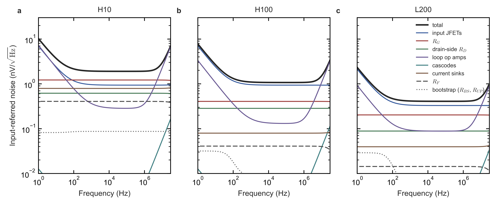
Figure 15. Input-referred noise of the three front-end configurations with their contributions.
In the white region the JFETs contribute 0.93 nV/√Hz (H) and 0.33 nV/√Hz (L). Eq. (2) gives = 0.90 and = 0.33 nV/√Hz from the data sheets’ 0.9 nV/√Hz for a JFE2140 (SLPS730B p. 1) and 0.8 nV/√Hz for a JFE150 (SLPS732B p. 5, Table 6.5), both at 5 mA (sim/results/noise_theory.json); H’s 0.93 is higher mainly because the calibrated JFE2140 card itself gives 0.92 nV/√Hz at 5 mA (sim/results/jfet_model_check.json). is next, then the drain resistors. At a front-end gain of 10, (111 Ω) and the current sinks become comparable with the JFETs, because a current injected at a source node develops a voltage across the larger . Quieter sinks would gain little; the next paragraph shows why. Below 100 Hz the JFETs’ 1/f dominates H at a gain of 100 and L, and at a gain of 10 the loop op amps’ 1/f is about as large as the JFETs’ (Section 4.8). Above a few MHz the op amps’ voltage noise driving rises as (Section 4.3).
Noise of a current sink. At a front-end gain of 10 the current sinks give 0.79 nV/√Hz, the largest term after and the JFETs (Table 9), because their noise current enters the source node with the weight = 50 Ω (Eq. (9)). The sink’s base is held at AC ground by its reference’s filter. For noise, the transistor is therefore a common-base stage from its emitter node to its collector, i.e. to the source node (Figure 9c). A current injected into the emitter node cannot move the base: the transistor’s changes instead, and the current goes on to the collector. Of the sink’s noise generators, two therefore pass in full, and the emitter resistor suppresses the third:
With and = 25.9 mV at 300.15 K (ngspice’s 27 °C), the sink’s noise current relative to the full shot noise of its current is
(12)
with the three terms in the order above, plus the base resistance’s thermal noise, . The first term is the general rule for a resistor that sets a current with a voltage across it:
(12a)
Such a resistor is quieter than the shot noise of its current by , and only the voltage helps (scripts/fe_closed_forms.py):
Quieter sinks and their benefit. More voltage across lowers the first term of Eq. (12), and a higher β the second (Table 9a). With 6 V, = 0.093 and ’s part falls to 5.5 pA/√Hz, which leaves the base current’s 5.4 as large. The higher-β part is the BC817-25, which cuts the base current’s part to 3.2 pA/√Hz: β is 339 in its model, and 160–400 at 100 mA in onsemi’s data sheet (BC817-16LT1/D, Rev. 19, p. 2). The JFE150 has no gate current at all.
sim/results/fe_closed_forms.json), mostly the LM7171 in S2; with the THS4031 in S2 they add only 0.74 nV/√Hz (sim/results/da_compare.json, noise_H_HR; below, and Section 6.5). That, not the sinks, is the lever for the high-reserve mode. In that mode at a gain of 100, a BC817-25 at 6 V lowers the noise at 1 kHz by 2.8 %, from 2.78 to 2.70 nV/√Hz; at a total gain of 10, it goes from 4.53 to 4.49.The sinks are therefore left as they are.
The larger lever at a gain of 10 is itself, 1.22 of the 1.90 nV/√Hz. Halving for this range only (250 Ω, with = 55.6 Ω) lowers ’s noise, the sinks’ weight and ’s own noise together. The front end’s floor falls to 1.44 nV/√Hz, and the chain’s in the high-reserve mode by 10.4 %, from 2.78 to 2.49 nV/√Hz. The compensation scales as and , with and : from 14 and 12 pF to 28 and 17.9 pF, with falling from 0.66 to 0.49. That gives = 23 pF and = 5 pF, with rounded to 18 pF, and doubled to 440 pF, all switched with the range. It keeps the margins (differential 57°, 13 dB, 0.75; common mode 53°, 9.4 dB, 0.63) and the bandwidth (26 MHz). But the larger raises the noise at 10 MHz from 2.94 to 3.44 nV/√Hz, and the chain’s from 4.86 to 5.11 (Section 4.3.1). It is a choice between the white and the high-frequency noise of one range, and it is not adopted here.
Table 9a. Current-sink variants for H (scripts/sink_options.py, sim/results/sink_options.json). Columns: the sinks’ input-referred noise at a gain of 10 and its two main parts; the front end’s noise; the chain’s in the high-reserve mode at a gain of 100; the lower end of the common-mode range that the sinks allow; and the dissipation of each sink transistor. Noise in nV/√Hz, at 10 kHz unless stated. The bound row’s front-end noise is (scripts/fe_closed_forms.py, scripts/numbers_s6_7.py).
| Sink | Sinks, gain 10 ( / transistor) | Front end, gain 10: white / 10 Hz / 10 MHz | Front end, gain 100 | Chain, high reserve, 1 kHz | (V) | Transistor (mW) | |
|---|---|---|---|---|---|---|---|
| MMBT3904 (adopted) | 2 V | 0.79 (0.65 / 0.44) | 1.90 / 3.71 / 2.94 | 1.07 | 2.78 | −12.8 | 148 |
| MMBT3904 | 4 V | 0.62 (0.47 / 0.41) | 1.84 / 3.67 / 2.90 | 1.07 | – | −10.8 | 126 |
| MMBT3904 | 6 V | 0.56 (0.38 / 0.40) | 1.82 / 3.66 / 2.89 | 1.07 | – | −8.8 | 103 |
| BC817-25 | 2 V | 0.70 (0.66 / 0.23) | 1.87 / 3.69 / 2.92 | 1.07 | – | −12.8 | 148 |
| BC817-25 | 4 V | 0.52 (0.47 / 0.23) | 1.81 / 3.66 / 2.88 | 1.07 | 2.72 | −10.8 | 125 |
| BC817-25 | 6 V | 0.45 (0.38 / 0.23) | 1.79 / 3.65 / 2.87 | 1.07 | 2.70 | −8.8 | 103 |
| JFE150 | 6 V | 0.38 (0.37 / 0.07) | 1.77 / 3.65 / 2.86 | 1.07 | 2.69 | −8.4 | 103 |
| No sink noise (bound) | – | 0 | 1.73 / – / – | 1.07 | – | – | – |
| MMBT3904, with 250 Ω for this range | 2 V | 0.40 | 1.44 / 3.09 / 3.44 | 1.07 | 2.49 | −12.8 | 148 |
Table 10. Input-referred noise of the complete chain against the total gain (nV/√Hz), and the output noise from 1 Hz to 10 MHz (scripts/chain.py noise; sim/results/chain_noise.json).
| Mode | Gain | 1 Hz | 10 Hz | 1 kHz | 100 kHz | 10 MHz | Output, 1 Hz–10 MHz |
|---|---|---|---|---|---|---|---|
| H (low noise) | 1 | 651 | 207 | 32.0 | 24.6 | 26.0 | 0.08 mV rms |
| 10 | 72 | 23.1 | 4.53 | 3.93 | 5.74 | 0.14 mV rms | |
| 100 | 10.6 | 3.52 | 1.17 | 1.12 | 1.58 | 0.41 mV rms | |
| 1000 – 50 000 | 8.3 | 2.80–2.81 | 1.11 | 1.08 | 1.55 | 4.0 mV rms at 1000 | |
| H (high reserve) | 100 – 1000 | 29 | 9.4–9.6 | 2.76–2.78 | 2.61–2.62 | 4.85–4.86 | 1.09 mV rms at 100 |
| L | 200 | 4.26 | 1.41 | 0.46 | 0.44 | 0.57 | 0.30 mV rms |
| 1000 – 100 000 | 2.7–2.8 | 0.94–0.96 | 0.42–0.43 | 0.42 | 0.54 | 1.43 mV rms at 1000 |
Against the SR560 reproduced in the same simulator (Table 1), the H input is quieter at every gain: at 1 kHz 32 against 52 nV/√Hz at a gain of 1, 4.5 against 11.5 at 10, 1.2 against 5.7 at 100, and 1.1 against 5.7 from 1000 up (52, 10.3, 3.3 and 3.2 for the SR560 with the LSK389B). In the high-reserve mode, which keeps the front end at a gain of 10 instead of 100 for = 20 dB more input headroom, the noise is 2.8 nV/√Hz at 1 kHz and 2.6 nV/√Hz white, against the SR560’s 9.4–20 at 1 kHz (8.0–19.3 with the LSK389B). The H_HR figures include the LM7171’s 8.5 nV/√Hz (A grade, SNOS760D §5.5, p. 5), which S2 sees behind a front-end gain of only 10. With the THS4031 in S2 they are 2.0–2.1 nV/√Hz from 1 kHz to 1 MHz, but 4.1–4.6 nV/√Hz at 10 Hz and 3.0 nV/√Hz at 10 MHz, against 9.4–9.6 and 4.85–4.86 with the LM7171 (scripts/da_compare.py hr, sim/results/da_compare.json, noise_H_HR; Section 6.5).
The noise figure of Eq. (5) at 1 kHz is 9.3 dB with a 10 Ω source, 2.4 dB with 100 Ω, 0.97 dB with 300 Ω and 0.31 dB with 1 kΩ for H, and 3.2, 1.4 and 0.45 dB with 10, 30 and 100 Ω for L (Table 11, Figure 16). Which input has the lower noise figure depends on the frequency: L up to a source resistance between 10 and 100 kΩ at 10 Hz and 1 kHz, between 300 Ω and 1 kΩ at 1 MHz and between 30 and 100 Ω at 10 MHz, and H above it (Table 11). At high frequencies the input network’s capacitance, together with the source resistance, adds the term of Eq. (3), and high source resistances lose their signal and their own noise alike to the input capacitance. With 1 MΩ the input networks attenuate both by 41.9 dB (H) and 63.9 dB (L) at 1 MHz (21.9 and 43.8 dB at 100 kHz; scripts/collect_curves.py zin, sim/results/zin_numbers.json, sources_archived), so the noise figure there (10.9 dB for H) measures the amplifier against an attenuated source.
Table 11. Noise figure (dB) against source resistance (scripts/noise_vs_source.py, noise_vs_source.json, rounded by scripts/numbers_s6_7.py; source resistance in series with input A, input B grounded; the source’s noise at the simulator’s 300.15 K, where Figure 17 takes the standard 290 K).
| H, 10 Hz | H, 1 kHz | H, 1 MHz | H, 10 MHz | L, 10 Hz | L, 1 kHz | L, 1 MHz | L, 10 MHz | |
|---|---|---|---|---|---|---|---|---|
| 10 Ω | 16.9 | 9.3 | 9.1 | 11.9 | 8.2 | 3.2 | 3.1 | 4.9 |
| 30 Ω | 12.3 | 5.4 | 5.3 | 7.7 | 4.6 | 1.4 | 1.3 | 3.4 |
| 100 Ω | 7.6 | 2.4 | 2.3 | 4.1 | 1.9 | 0.45 | 0.50 | 4.3 |
| 300 Ω | 4.1 | 0.97 | 0.94 | 2.5 | 0.74 | 0.16 | 0.33 | 7.1 |
| 1 kΩ | 1.7 | 0.31 | 0.35 | 2.9 | 0.24 | 0.05 | 0.61 | 11.6 |
| 10 kΩ | 0.20 | 0.03 | 0.50 | 9.3 | 0.03 | 0.01 | 3.8 | 21.2 |
| 100 kΩ | 0.03 | 0.01 | 3.3 | 18.8 | 0.05 | 0.04 | 11.7 | 31.2 |
| 1 MΩ | 0.05 | 0.04 | 10.9 | 28.8 | 0.41 | 0.41 | 21.4 | 41.2 |
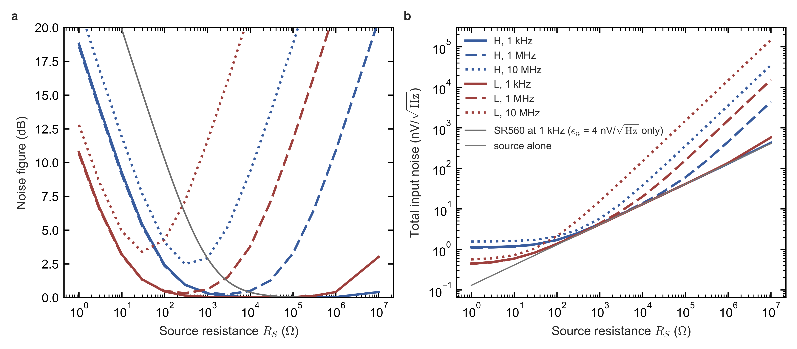
Figure 16. (a) Noise figure against source resistance at 1 kHz, 1 MHz and 10 MHz, with the SR560’s specified 4 nV/√Hz at 1 kHz alone for comparison (manual, specifications chart, printed p. 5; data sheet p. 3). (b) Total input noise against source resistance, with the source’s own thermal noise.
Figure 17 maps the noise figure over source resistance and frequency at once, in the format of the SR560 data sheet’s own plot (“SR560 Noise Figure”, data sheet p. 3), which panel (a) redraws: the same axes, extended to 10 MHz, the same contour levels from 0.05 to 25 dB, and the same temperature of the source, = 290 K. The data sheet’s contours are read from the vector paths of its PDF, not traced by eye: the axes are calibrated on the tick marks (to within 0.02 pt), each contour takes the level printed on it, and the five unlabelled ones in the upper right corner take 6 to 25 dB in order towards the corner (scripts/sr560_nf_datasheet.py, sim/results/sr560_nf_datasheet.json). The maps of H, L and two SR560 reproductions come from 41 noise runs each at a gain of 1000, with a noiseless source resistor from 1 Ω to 100 MΩ, five per decade, in series with input A and with input B grounded, as in Table 11 (scripts/nf_map.py, sim/results/nf_map.npz and nf_map.json). With the amplifier’s input-referred noise and , its equivalent input generators, the input network included, Eq. (5) with the generators’ correlation reads
(5a)
Fitted at each frequency from 1 Hz to 10 MHz, the second expression reproduces every run within dB (0.003 dB for the reproduction with the LSK389B), and the maps are drawn from these fits; with the source’s noise taken at the simulator’s 300.15 K instead of 290 K, the runs reproduce Table 11 within dB. The data sheet’s contours obey Eq. (5a) as well, within 0.01 decade of (0.03 dB), so the fit gives the data sheet’s noise figure between its contours, which Figure 17e, f, h and i subtract. The fit also shows what the plot corresponds to: = 3.60 nV/√Hz white (3.64 at 1 kHz, 7.6 at 10 Hz and 43 at 1 Hz), and = 12.7 fA/√Hz at low frequencies, the thermal noise of 99 MΩ at 290 K, i.e. of the 100 MΩ input resistors, rising at high frequencies as , with = 38 pF from 100 kHz to 1 MHz (25 pF specified; manual, printed p. 5). That is below the manual’s “about 4 nV/√Hz” and its typical curve, about 5 nV/√Hz at 1 kHz and 11 at 10 Hz (printed p. 20; Section 2.2): Figure 17 compares H and L with the SR560’s most favourable published figure.
Side by side (Figure 17a–c), the three maps have the same shape, set by the same three things: with low source resistances, the resistors from the inputs to ground with high ones, and above about 100 kHz the input’s capacitance or network. H’s low-resistance contours lie about a decade below the data sheet’s, by the square of the ratio of their at 1 kHz, a factor of 10.7: at 1 kHz its noise figure is 3 dB with 78 Ω and 1 dB with 300 Ω, against 830 Ω and 3.2 kΩ (at 10 Hz, 500 Ω and 1.9 kΩ against 3.6 and 14 kΩ). Its 100 MΩ bias resistors give it the SR560’s high-resistance boundary: at 1 kHz, 1 dB with 25.0 against 25.6 MΩ, and 3 dB with 96 against 98 MΩ. At 1 MHz, where the data sheet’s SR560 reaches 1 dB with no source resistance (its minimum there is 1.42 dB, at 4.2 kΩ, and it is below 3 dB only from 850 Ω to 21 kΩ), H is below 1 dB from 290 Ω to 21.8 kΩ, with a minimum of 0.25 dB at 2.5 kΩ. Over the data sheet’s whole plane (1 Hz to 1 MHz and 1 Ω to 100 MΩ, in equal steps of and ), H’s noise figure is lower by more than 0.1 dB on 72 % of it and within 0.1 dB on the rest (Figure 17e); it is the higher only above 1.8 MΩ at 1 kHz (3.5 MΩ at 10 Hz), by at most 0.07 dB, because its bias resistors are at the simulator’s 300.15 K and the data sheet’s input resistors at 290 K.
L’s low-resistance contours lie lower again, by the square of the ratio of H’s and L’s , a factor of 6.8: at 1 kHz 3 dB with 11 Ω and 1 dB with 44 Ω, and at 1 MHz L is below 1 dB from 44 Ω to 1.75 kΩ (minimum 0.34 dB at 280 Ω). Its 10 MΩ bias resistors bring the high-resistance boundary down by a decade (1 dB with 2.5 MΩ and 3 dB with 9.6 MΩ, from 10 Hz to 1 kHz), and its noise current at 1 MHz is 1.51 pA/√Hz, against 0.43 pA/√Hz for H, mostly from its input network (next paragraph). L’s noise figure is therefore below the data sheet’s only up to 94 kΩ at 1 kHz (190 kΩ at 10 Hz, 28 kΩ at 100 kHz, 2.9 kΩ at 1 MHz), and above it with larger sources, by up to 7.5 dB at 100 MΩ (Figure 17f; below on 57 % of the plane, above on 35 %): L is for low source resistances (Section 4.4), and H for the others.
Above about 100 kHz, the high-resistance side of both inputs’ low-noise region is bounded mostly by the damping networks’ resistors (Section 4.4), whose thermal noise shorts only at low frequencies. Their noise current, with the of Section 4.4, is 0.38 of H’s 0.43 pA/√Hz at 1 MHz and 1.22 of L’s 1.51 pA/√Hz; with a 100 kΩ source, ngspice attributes 76 % (H) and 65 % (L) of the output noise at 1 MHz to input A’s , and with 1 kΩ, 10 % and 59 %. The damping thus costs noise figure at megahertz frequencies for sources above the optimum source resistance there, 2.5 kΩ for H and 280 Ω for L.
The SR560 reproduction as drawn, simulated in the same way (Figure 17d, and h for its difference from the data sheet), has the data sheet’s high-resistance boundary, from the same 100 MΩ input resistors (1 dB with 24.8 MΩ at 1 kHz), but far more noise at low frequencies: with the NPD5564 of the manual, 47.7 nV/√Hz at 10 Hz and 5.71 at 1 kHz, against the data sheet’s 7.56 and 3.64. Its 3 dB contour lies at 2.0 kΩ at 1 kHz and 140 kΩ at 10 Hz, against 830 Ω and 3.6 kΩ, and its noise figure is up to 16.0 dB above the data sheet’s (10 Hz, 1 Ω). The excess is a 1/f noise with a corner of 2.2 kHz, against 23–34 Hz in the data sheet’s plot, and it comes from the input JFETs: their flicker generators give 99.5 % of the output noise at 10 Hz, 95.8 % at 100 Hz and 69.6 % at 1 kHz. Their model has the JFET model’s single 1/f term, , fitted at one point of Vishay’s 2N5564 curve, 3.6 nV/√Hz per device at 1 kHz and 4.5 mA above a white 1.28 nV/√Hz (Section 3.4), which makes a corner of 6.9 kHz. Vishay’s measured noise is not 1/f-shaped: at 10 mA its excess power above the 100 kHz level grows only 1.6 times from 100 Hz down to 10 Hz, where a 1/f line grows 10 times. The line through 1 kHz therefore gives 33.7 nV/√Hz per device at 10 Hz where Vishay’s curve, interpolated to 4.5 mA, shows 10.5, 3.20 times as much (1.35 times at 100 Hz), and = 47.6 nV/√Hz for the pair, nearly all of the reproduction’s 47.7. With Vishay’s curve itself the pair would give about 15 nV/√Hz at 10 Hz, still above the manual’s typical 11 and the plot’s 7.6: the SR560’s NPD5564 is not Vishay’s part, no noise curve of it is published, and it evidently has less excess noise (Section 2.2).
With the LSK389B that the forum user found in a newer unit (Figure 17g and i; the corrected model of Section 2.2), the reproduction’s 1/f corner falls to 16 Hz, below the plot’s, and its low-resistance contours lie near the data sheet’s: 5.17 nV/√Hz at 10 Hz, 3.23 at 1 kHz and 3.21 white, against 7.56, 3.64 and 3.60, so that 3 dB is reached with 660 Ω at 1 kHz (830 Ω) and 1.7 kΩ at 10 Hz (3.6 kΩ). The data sheet’s 3.64 nV/√Hz at 1 kHz lies between the two reproductions’ 5.71 and 3.23, and between the 4.0 and 3.5 nV/√Hz that the forum user measured on units with these two JFETs (Section 2.2).
Differences between the reproductions and the data sheet’s plot, and their causes (Figure 17h and i):
scripts/sr560_nf_sources.py), a noise voltage in series with the driven gate, such as the gate resistor of JFET A’s model, gives no current at all, since the source resistance and the input capacitance divide it exactly like the signal; JFET A’s channel noise gives with = 9.55–9.56 and 25.14–25.15 pF from 10 kHz to 1 MHz, its own at its bias (5.84 + 3.72 = 9.56 pF and 18.41 + 6.79 = 25.20 pF from the model cards); and the noise of the grounded side, of U102 and of the rest of the circuit reaches input A through effective capacitances of 7.5–12.1 pF (NPD5564) and 12.5–24.7 pF (LSK389B). Without the servo’s share (79 and 82 % of the output noise with 1 MΩ), the reproductions’ noise current is thus 0.17 and 0.32 pA/√Hz, what the plot’s form would give with 8.5 and 15.7 pF. A capacitance at the input terminal, ahead of every noise source, would turn the whole into current as the plot does; the model has none (no connector, protection or wiring), and the instrument’s is not known.Beyond the data sheet’s plot and the SR560’s bandwidth, the reproductions’ minimum noise figure reaches 29 and 43 dB at 10 MHz, where H’s is 2.42 dB (at 440 Ω) and L’s 3.43 dB (at 37 Ω).
Figure 17j–l set H and L against a second published plot, the noise-figure contours of the Signal Recovery 5113: “Typical Noise Figure Contours at Gain = ×1000, AC Coupling and 10s Coupling Time-Constant, Flat Filter Mode” (manual 222144-A-MNL-F, 2002, Fig. A-1, p. A-2; the same plot is in its 2010 data sheet and in the 2024 data sheet of the 5113A, and there is none in its 1992 EG&G manual). The plot is a 1-bit image, so it is read from its pixels (scripts/nf5113_manual.py, sim/results/nf5113_manual.json): the axes are calibrated on the frame and the dashed decade grid (100.0 pixels per decade on both axes, to within 0.4 px); the ten labels that sit inside their contours at 10 kHz are bridged; each contour takes the level printed on it or, near 1 Ω, beside it; and the five unlabelled contours in the upper right corner take 6, 10, 15, 20 and 30 dB in order towards the corner, which their resistances on the 1 MHz edge bear out: 0.20, 0.60, 2.1, 6.6 and 66 MΩ, in the ratios of to within 1.9 %, as where a noise current dominates. Thinned to lines, the contours obey Eq. (5a) within 0.24 dB (0.034 decade of ) from 3.98 Hz, where the plot draws both sides of its minimum; below that it draws only the low-resistance side, which gives (within 0.48 dB, with held at its low-frequency value).
Read this way, the plot disagrees with its own specification. The same page gives “4 nV/√Hz at 1 kHz referred to input - see also figure A-1” (so do the 1992 manual and both data sheets), but the contours give 4 nV/√Hz only from 10 kHz up (4.03, 3.99 and 4.01 nV/√Hz at 10 kHz, 100 kHz and 1 MHz) and 7.94 nV/√Hz at 1 kHz, 1.98 times the specification. Each low-resistance contour from 3 to 30 dB gives 7.85–8.02 nV/√Hz on its own, and the 3 dB contour lies at 3.87 kΩ, where 4 nV/√Hz would put it at 1.00 kΩ. Below 1 kHz the plotted noise rises steeply, to 29.9 nV/√Hz at 100 Hz, 101 at 10 Hz, 722 at 1 Hz and 8.2 µV/√Hz at 0.1 Hz. As a 1/f corner, with at 100 kHz, that is 3.0 kHz from 1 kHz, 5.5 kHz from 100 Hz and 6.4 kHz from 10 Hz, against 23–34 Hz in the SR560’s plot, and below 10 Hz the noise power rises faster than 1/f, as from 1 to 10 Hz and from 0.1 to 1 Hz. Between whole decades the low-resistance contours are straight in log–log (the fitted departs from the straight lines between the decades by at most 0.014 decade) and they bend only at the decades: the plot was drawn from values at whole decades, and its sharp corner at 10 kHz, where its low-resistance contours turn level, is the drawing’s. The AC coupling of the plot’s setting does not account for the low-frequency noise: the plot’s own noise current through the 0.1 µF coupling capacitor gives 0.28 µV/√Hz at 0.1 Hz, 1/29 of the plotted , and the 10 s high-pass passes 0.988 of the signal there. The plotted noise current is 17.7 fA/√Hz at low frequencies (17.5–18.0 from 5 Hz to 5 kHz), the thermal noise of 51 MΩ at 290 K and 1.40 times the 12.7 fA/√Hz of the 100 MΩ input resistance that the 10 s time constant implies; the manual does not say where the rest comes from. Above 10 kHz it rises as with = 19.5–20.1 pF from 100 kHz to 1 MHz (25 pF specified), about half the 38 pF of the SR560’s plot.
Against this plot (Figure 17k and l, from 3.98 Hz to 1 MHz), H’s noise figure is lower everywhere: by more than 0.1 dB on 92 % of the plane, by up to 34.1 dB (3.98 Hz, 1 Ω), and by 0.03–0.1 dB on the rest, around the 5113’s own optimum. At 1 kHz the 5113’s plot reaches 3 dB with 3.9 kΩ and 1 dB with 15 kΩ, against H’s 78 Ω and 300 Ω; at 10 Hz it reaches 3 dB only with 670 kΩ and 1 dB nowhere (its minimum there is 0.93 dB, at 5.7 MΩ), against 500 Ω and 1.9 kΩ; at 1 MHz it is below 3 dB from 1.0 to 66 kΩ, H from 75 Ω to 85 kΩ. L is lower on 63 % of the plane, by up to 43.6 dB, and higher on 32 %, with sources above 2.9 MΩ at 10 Hz, 220 kΩ at 1 kHz, 27 kΩ at 100 kHz and 2.8 kΩ at 1 MHz, by up to 9.79 dB (1 MHz, 100 MΩ), from its 10 MΩ bias resistors and its input network. Even the SR560 data sheet’s plot is lower than the 5113’s on 76 % of the plane; it is higher on 13 %, from 20 kHz up, with sources above 25 kΩ at 100 kHz and 2.4 kΩ at 1 MHz, by up to 4.88 dB (1 MHz, 100 MΩ), where the 5113’s smaller capacitance, 20 against 38 pF, gives it the lower noise current. Like the SR560’s, the 5113’s plot is its maker’s “typical” figure, and no measurement here tells which of its plot and its specification a real 5113 meets.
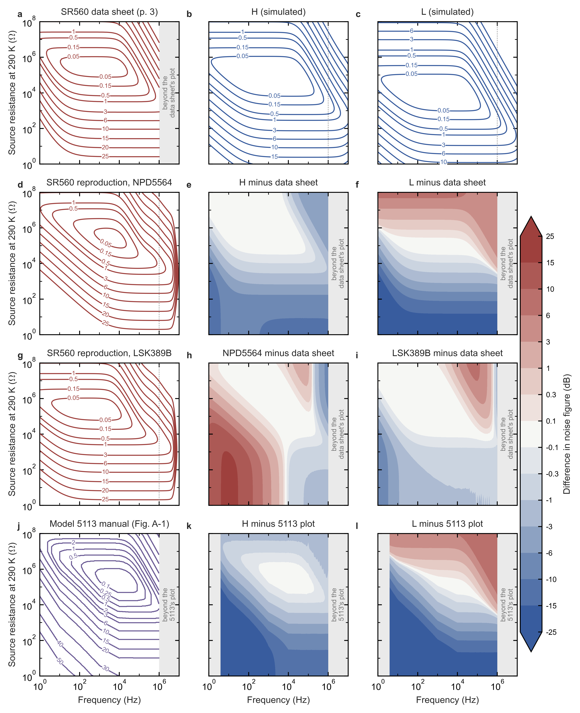
Figure 17. Noise figure against source resistance and frequency at a gain of 1000, in the format of the SR560 data sheet’s plot (p. 3): the same axes, extended to 10 MHz, and the same contour levels (dB), labelled where they cross 2 kHz and 50 Hz; the source at 290 K, in series with input A, input B grounded. (a) The data sheet’s contours, read from its PDF. (b) H, (c) L, and the SR560 reproduction of Section 2.2 (d) as drawn, with the NPD5564, and (g) corrected, with the LSK389B, simulated (dotted: the data sheet’s 1 MHz limit). (e, f, h, i) The noise figure of (b), (c), (d) and (g) minus the data sheet’s, on its range: blue where lower than the data sheet’s. (j) The Signal Recovery 5113’s plot (manual Fig. A-1: gain 1000, AC coupled, 10 s), read from its pixels, at its own levels from 0.1 to 50 dB (40 and 50 dB, which do not reach 2 kHz, labelled at 10 Hz). (k, l) The noise figure of H and L minus the 5113 plot’s, from 3.98 Hz, where the plot draws both sides of its minimum (shaded below), to its 1 MHz limit: blue where lower than the 5113’s. (scripts/sr560_nf_datasheet.py, scripts/nf5113_manual.py, scripts/nf_map.py, sim/results/nf_map.json, nf5113_manual.json; numbers rounded by scripts/numbers_s6_7.py.)
Table 12. Frequency response of the chain (scripts/chain.py ac, sim/results/chain_ac.json; the SR560 rows from scripts/sr560_chain.py (sim/results/sr560_chain.json; its peaking from sr560_chain_ac_*.npz by scripts/numbers_s6_7.py) and scripts/sr560_variants.py (sim/results/sr560_variants.json); Section 2.2). A range covers the gains of its row.
| Mode | Gains | −3 dB | at 1 MHz | at 10 MHz | Peaking |
|---|---|---|---|---|---|
| H, front end ×10 | 1 – 10 (and H_HR up to 1000) | 24.9–25.0 MHz | 0.00 dB | −0.41 to −0.42 dB | none |
| H, front end ×100 | 100 – 50 000 | 14.82–14.84 MHz | +0.01 dB | −0.37 dB | 0.17 dB |
| L | 200 – 100 000 | 16.5 MHz | −0.01 dB | −0.82 dB | none |
| SR560 reproduction, as drawn | 1 – 50 000 | 0.73–0.79 MHz | −4.2 to −4.8 dB | – | none |
| SR560, corrected | 1 – 50 000 | 1.04–1.16 MHz | −2.4 to −2.8 dB | – | none |
| SR560, corrected, LSK389B | 1 – 50 000 | 1.07–1.17 MHz | −2.3 to −2.7 dB | – | none |
The bandwidth is the same at every gain, because the gain is set by attenuators in front of fixed-gain stages and the front end’s two settings, so the gain-bandwidth trade of a single op amp does not apply (Figure 18). Its limit is the front end’s loop (Section 4.3); the stages after the front end, alone, reach −3 dB at 116–156 MHz (scripts/chain_extras.py post, sim/results/chain_extras.json). The stability checks are those of Table 7 and the transient oscillation check of Section 4.3; with the input networks, none of the simulated sources (50 Ω, 1 kΩ and 1 MΩ) peaks by more than 0.52 dB (H with 1 kΩ; Figure 13c, zin_numbers.json).
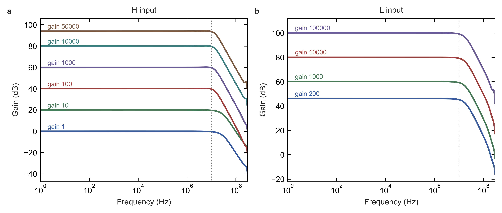
Figure 18. Frequency response of the chain at every simulated gain: (a) H input, (b) L input. The dotted line marks 10 MHz.
The CMRR was estimated by Monte Carlo over 12 trials per case, 6 for the runs with one class of mismatch at a time (scripts/cmrr_mc.py, sim/results/cmrr_mc.json). Each trial draws from Gaussian distributions clipped at 3σ, whose widths are assumptions of this study unless a source is given:
Both inputs were driven from 50 Ω sources, and separately directly (0 Ω, the usual condition of a CMRR specification). A third set of trials kept 50 Ω sources but trimmed the input networks’ capacitors to a residual mismatch of 0.1 %, as a single trimmer per input would. One class of mismatch at a time showed which limits the CMRR.
Table 13. CMRR (dB), median of 12 trials (6 in the rows with one class of mismatch), at a total gain of 1000 (H, L) and 100 (H with the front end at ×10). The SR560 rows are from scripts/sr560_chain.py and scripts/sr560_variants.py (sim/results/sr560_chain.json, sr560_variants.json), with ideal matching and the offset trimmed (Section 2.2). The SR560’s specification is 100 dB to 1 kHz, falling by 6 dB per octave above (data sheet p. 3), i.e. dB; its manual gives > 90 dB to 1 kHz (printed p. 5). The NF 5307 row is the gain-100 curve of Fig. 46 on NF’s data-sheet page (refs/commercial_preamps/NF_Corporation/NF_5307_datasheet_fig46.jpg), read by eye at the table’s frequencies and checked against the image’s pixels (scripts/nf5307_plot_check.py, within 0.4 dB up to 100 kHz). The curve stops at about 0.9 MHz; its value at 1 MHz is the straight-line extrapolation of its last 0.4 decade.
| Case | 10 Hz | 1 kHz | 10 kHz | 100 kHz | 1 MHz | 10 MHz |
|---|---|---|---|---|---|---|
| H ×100, 50 Ω sources | 114 | 124 | 116 | 98 | 78 | 62 |
| H ×100, inputs driven directly | 114 | 124 | 123 | 115 | 95 | 75 |
| H ×100, input networks trimmed | 114 | 124 | 123 | 115 | 97 | 75 |
| H ×10, 50 Ω sources | 104 | 104 | 104 | 95 | 77 | 61 |
| L, 50 Ω sources | 108 | 119 | 99 | 79 | 60 | 46 |
| L, inputs driven directly | 108 | 132 | 137 | 118 | 98 | 78 |
| L, input networks trimmed | 108 | 131 | 125 | 105 | 84 | 55 |
| H ×100, JFETs mismatched only | 106 | 128 | 130 | 113 | 93 | 72 |
| H ×100, resistors only | 132 | 125 | 125 | 124 | 112 | 86 |
| H ×100, capacitors only | 141 | 139 | 124 | 104 | 84 | 62 |
| L, capacitors only | 146 | 115 | 95 | 75 | 55 | 41 |
| SR560 as drawn, ideal matching | 150.3 | 110.4 | 90.4 | 71.6 | 65.6 | – |
| SR560 corrected, ideal matching | 150.3 | 110.4 | 90.4 | 71.6 | 66.1 | – |
| SR560 corrected with LSK389B, ideal matching | 151.9 | 112.0 | 92.0 | 73.0 | 67.3 | – |
| SR560 specification | 100 | 100 | 80 | 60 | 40 | – |
| NF 5307 (plot, gain 100) | 136 | 136 | 126 | 107 | 85 | – |
The class-by-class runs locate the limits:
scripts/numbers_s6_7.py). The error is purely capacitive, so one trimmer per input nulls it at all frequencies for a given source: L recovers 25 dB at 1 MHz. Driven directly, both front ends reach 95–98 dB at 1 MHz, beyond the NF 5307’s 85 dB.scripts/cmrr_mc.py, cases H100_jfet_rs0_R_UP and H100_jfet_rs0_ideal_I_BS, sim/results/cmrr_mc.json, rup_test; the same decks as the first test’s in sim/runs/cmrr_mc/test_rup_*). A build should therefore feed each bootstrap from a current source, a degenerated PNP transistor or a JFET current regulator, instead of ; the simulated baseline keeps .H100_discrete).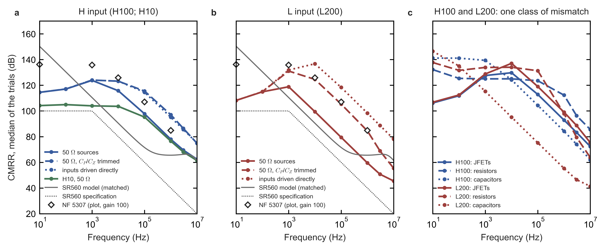
Figure 19. CMRR against frequency, medians of 12 trials (6 in panel c): (a) H input, (b) L input, each with 50 Ω sources, with the input networks trimmed and with the inputs driven directly, against the SR560 (its reproduction as drawn, with ideal matching and the offset trimmed, and its specification) and the NF 5307’s plot; (c) one class of mismatch at a time.
Table 14. Large-signal results (scripts/large_signal.py; sim/results/large_signal.json, the recoveries from scripts/overload_detail.py; rounded by scripts/numbers_s6_7.py). THD includes harmonics 2–9 of a differential sine, at the output; H at a total gain of 100 (front end ×100, S2 at the full output level), L at 1000. S2 is the LM7171, and L has the 6 V PZT3904 sinks of Section 4.2.1. Several entries ran with ngspice’s KLU solver (Appendix A, “Transients that fail at the start, and the matrix solver”). L’s steps run only with the inputs driven from 50 Ω; with the first design’s 2 V sinks (MMBT3904) they are the same to 0.01 ns (large_signal_L1000_step.json).
| Test | H, gain 100 | L, gain 1000 |
|---|---|---|
| THD, 1 kHz, 1 / 10 Vpp | 0.0001 % / 0.0002 % | 0.0001 % / 0.0002 % |
| THD, 100 kHz, 1 / 10 Vpp | 0.0001 % / 0.0026 % | 0.0001 % / 0.0025 % |
| THD, 1 MHz, 1 / 10 Vpp | 0.0009 % / 0.025 % | 0.0008 % / 0.023 % |
| THD, 10 MHz, 1 Vpp | 0.012 % (fundamental 0.961 Vpp) | 0.0072 % (fundamental 0.916 Vpp) |
| 1 V step: 10–90 % rise, overshoot, settling to 1 % / 0.1 % | 23 ns, 7.7 %, 83 / 129 ns | 34 ns, 4.7 %, 105 / 163 ns (50 Ω sources) |
| 10 V step: rise, overshoot, settling to 1 % / 0.1 %, slew rate | 27 ns, 9.3 %, 84 / 131 ns, 312 V/µs | 34 ns, 4.7 %, 106 / 163 ns, 275 V/µs (50 Ω sources) |
| Recovery from a threefold overload held for 20 µs, to 1 % | 0.16 µs (50 Ω sources) | 0.15 µs (50 Ω sources) |
| Supply rejection referred to the input, +15 V / −15 V: 1 kHz; 1 MHz; 10 MHz | 101 / 101 dB; 81 / 86 dB; 61 / 66 dB | 117 / 120 dB; 90 / 98 dB; 70 / 78 dB (−15 V with the first design’s 2 V sinks: 122, 102 and 80 dB, sink_power.json) |
The distortion stays below 0.001 % up to 1 MHz at 1 Vpp. At 10 Vpp and 1 MHz it rises to 0.025 %, and at 10 MHz and 1 Vpp to 0.012 %, both dominated by the third harmonic (0.018 % against 0.0014 % for the second, and 0.011 % against 0.0032 %; large_signal.json); which stage produces it was not simulated separately. L’s value at 10 MHz depends on S2, not on the sinks: 0.0072 % with the LM7171 and 0.0377 % with the THS4031 with the 6 V sinks, 0.0072 % and 0.0373 % with the first design’s 2 V sinks (scripts/large_signal.py floor, sim/results/large_signal_floor.json; an earlier 0.0100 % for the LM7171 with the 6 V sinks came from ngspice’s default solver, which does not run that deck with a finer time step, Appendix A). The 10 V step’s 312 V/µs gives a full-power bandwidth of 312 V/µs / (π × 10 V) = 9.93 MHz for 10 Vpp. Its 9.3 % overshoot is mostly the front end’s own: alone, with its outputs unloaded, the front end overshoots 8.7 % on the same step, and 9.4 % when S2 loads it. The stages after S2 limit the slew rate: 394 V/µs at the front end’s outputs alone and 390 V/µs at S2’s output, against 312 V/µs at the chain’s output (scripts/chain_extras.py step, sim/results/chain_extras.json). The numerical floor of the THD measurement lies far below these values. The same sources, transient and harmonic analysis applied to a purely linear reference (an ideal gain and one RC low-pass at the chain’s −3 dB frequency) give −158 to −180 dBc, but the integration of the nonlinear chain varies more. Of six integration settings (Gear, trapezoidal, two tighter tolerances, four times finer steps, and Gear with the KLU solver), the two or three that run at each frequency give H’s THD at 1 Vpp as −122.0 to −122.1 dBc at 1 kHz, −119.9 to −121.0 dBc at 100 kHz and −100.3 to −101.2 dBc at 1 MHz, a spread of up to 1.1 dB (large_signal_floor.json); the others stop with “timestep too small”, most within their first nanoseconds (Appendix A).
Overload and recovery. The overload test applies a differential step of three times the full-scale input (30 V at the output) for 20 µs, then removes it. Recovery is the time after the input returns until the output stays within 1 % of full scale (0.1 V) of its final value. Where the chain clips depends on the gain allocation (Section 4.1):
sim/results/overload_numbers.json).scripts/overload_detail.py, sim/results/overload_curves.npz and sim/results/overload_numbers.json, with 50 Ω sources and the KLU solver. With ngspice’s default solver this transient stopped with “timestep too small” at the onset of the overload (in an input JFET or in the model of S3’s op amp) or ran past its time limit, on both benches and with every integration setting tried (Appendix A). The earlier version of this section therefore used the same front end with the THS4031 in S2 and 1 Ω sources, which ran: its output recovers within 0.19 µs, returning with a 10–90 % slope of 113 V/µs.)Inside the front end, a saturated op amp opens the outer loop, and the source nodes no longer follow the gates exactly. In the H run they still follow to within +23.4 mV (side A) and −8.0 mV (side B), against the ±150 mV steps at the gates: the 26.4 V at the clipped outputs still drives most of the needed current through and . These small changes, far from the +0.36 V that would bring a gate to zero bias ( = −0.36 V at rest, Table 6), still shift the JFETs’ current. The clipped integrators cannot cancel that, so each summing node moves until carries the difference: from 8.99 V to 8.56 V (side A) and 9.14 V (side B), i.e. = +0.71 mA and −0.24 mA with = 600 Ω ( gives +0.81 and −0.28 mA). Nothing winds up beyond this: the summing nodes are back within 10 mV of rest 0.12 µs after the input returns. The two op amps clip at different levels, so the outputs’ mean (+0.23 V) leaves the sources’ mean (+0.35 V) during the overload; with the fixed sink reference nothing integrates this, and it ends with the overload (a servo of the reference would integrate it: Appendix B).
Several things are not simulated:
overload_numbers.json), and beyond that it approaches forward bias and the input draws gate current. No run at this level is archived.The choice of S2. S2 sees the full output level whenever the total gain equals the front end’s gain, so its distortion and slew rate set the chain’s at those gains. Table 15 compares three candidates in the same chain.
Table 15. The difference amplifier S2 (H, total gain 100; scripts/da_compare.py, sim/results/da_compare.json; slew rates from large_signal_THS4031.json and large_signal.json). The first column gives data-sheet values: THS4031, SLOS224L pp. 1 and 6; LM7171 A grade, SNOS760D §5.5, p. 5; THS3091, SLOS423K pp. 1 and 6. Noise is the simulated input-referred white level (1 MHz) and the 1 kHz value, from each part’s model (the LM7171’s raised to its data sheet’s, scripts/models.py).
| S2 | THD, 10 MHz, 1 Vpp | THD, 1 MHz, 10 Vpp | Slew rate, 10 V step | Noise at gain 10 (H) | Noise at gain 100 (H) |
|---|---|---|---|---|---|
| THS4031 (1.2 nV/√Hz, 100 MHz at a gain of 2) | 1.30 % | 0.141 % | 133 V/µs | 3.56 / 4.13 | 1.11 / 1.16 |
| LM7171, A grade (8.5 nV/√Hz, 4100 V/µs, 160 MHz) | 0.012 % | 0.025 % | 312 V/µs | 3.94 / 4.53 | 1.13 / 1.17 |
| THS3091 (1.1 nV/√Hz, its model 1.9; current feedback, so S2’s resistors are 1 kΩ instead of 499 Ω) | 0.012 % | 0.025 % | – | 4.16 / 5.16 | 1.14 / 1.20 |
The THS4031’s third harmonic at 10 MHz (−38 dBc at 1 Vpp) is 12 dB above the data sheet’s −50 dBc at 2 Vpp (SLOS224L Fig. 5-15, p. 12, read by eye), and 24 dB above it once that is scaled to 1 Vpp as , i.e. to −62 dBc (Section 5.3, model_defects.json). Even −62 dBc would leave it 17 dB, 6.9 times, above the LM7171’s −79 dBc. With the LM7171 or the THS3091 the remaining distortion, −79 dBc in the third harmonic, belongs to the rest of the chain. The price of the LM7171 is noise at the front-end gain of 10: 3.94 against 3.56 nV/√Hz at a total gain of 10, and in the high-reserve mode 2.6 against 2.0 nV/√Hz white and 2.8 against 2.0–2.1 nV/√Hz at 1 kHz (Section 6.1). If low-frequency, high-reserve operation matters more than 10 MHz distortion, the THS4031 is the better S2. Both fit the same footprint.
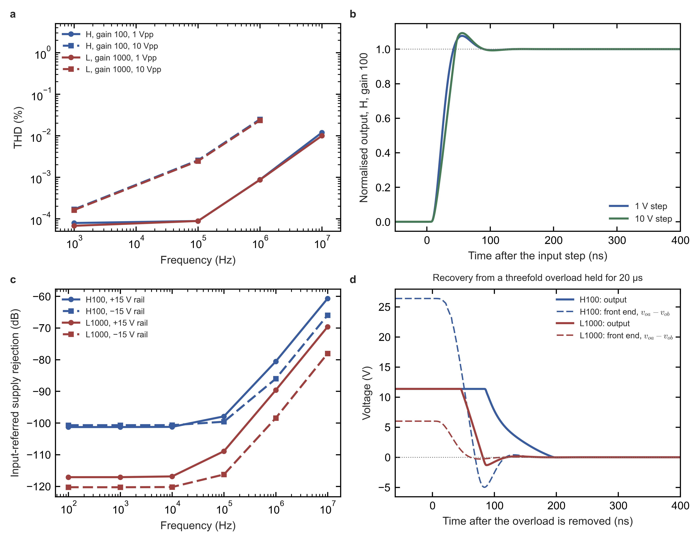
Figure 20. (a) THD against frequency at 1 and 10 Vpp output, H at a gain of 100 and L at 1000. (b) The 1 V and 10 V steps of H at a gain of 100, normalised. (c) Supply rejection referred to the input. (d) Recovery from a threefold overload: the output and the front end’s differential output after the overload is removed (both with the LM7171 in S2, driven from 50 Ω and run with the KLU solver: H’s output returns after 63 ns with a 10–90 % slope of 325 V/µs; overload_numbers.json).
Table 16. The new design against the SR560 (its specification and its reproduction in ngspice) and the NF 5307 (its documents). Input noise in nV/√Hz. SR560: manual, specifications chart (printed p. 5), noise curve (printed p. 20) and noise table (printed p. 21), and data sheet p. 3. NF 5307: specifications sheet (NF_5307_specifications_EN.pdf); noise plot, instruction manual Fig. 4.7 (PDF p. 37, printed p. 25); CMRR plot, Fig. 46 of NF’s data-sheet page; the plots read by eye and checked against the images’ pixels (scripts/nf5307_plot_check.py). SR560 reproduction: Section 2.2 and Tables 1, 12 and 13 (NPD5564: the model as drawn; LSK389B: the corrected model with it; bandwidth: as drawn and corrected). This design: Tables 10, 12 and 13; input capacitance (protection.json).
| SR560 (specification) | SR560 (reproduction) | NF 5307 | This design, H | This design, L | |
|---|---|---|---|---|---|
| Input noise, white / 1 kHz, gain ≥ 1000 | 4 (1 kHz) | 3.2 / 5.7 (NPD5564); 3.2 / 3.2 (LSK389B) | 4 (spec., 1 kHz); ≈ 3 (plot, gain 100) | 1.08 / 1.11 | 0.42 / 0.42–0.43 |
| Input noise at 10 Hz, gain ≥ 1000 | ≈ 11 (typical curve) | 48 (NPD5564, its card’s 1/f overstated); 5.2 (LSK389B) | ≈ 6 (plot, gain 100) | 2.8 | 0.94–0.96 |
| Input noise at gain 10 | 13 | 11.5 (NPD5564); 10.3 (LSK389B) | 15–16 (plot) | 3.9–4.5 | – |
| Input capacitance | 25 pF | – | < 35 pF | ≈ 20 pF | ≈ 250 pF |
| Bandwidth (−3 dB) | 1 MHz (1.2 MHz typ., data sheet) | 0.73–0.79 MHz as drawn; 1.04–1.17 MHz corrected | 10 MHz (+0.2/−3 dB) | 14.82–14.84 MHz (24.9–25.0 MHz at ×10) | 16.5 MHz |
| CMRR at 1 kHz / 1 MHz | 100 dB / 40 dB (data sheet; manual > 90 / > 30 dB) | 110.4 / 65.6 dB (matched, trimmed; 112.0 / 67.3 with LSK389B) | ≥ 120 dB (DC–1 kHz, gain 1000) / 85 dB (plot, gain 100) | 124 / 95 dB (median, driven directly) | 132 / 98 dB |
| Gain range | 1–50 000 | – | 10–1000 | 1–50 000 | 200–100 000 |
The comparison has three caveats. The new design’s figures are simulated, with corrected vendor models; the commercial ones are specified or plotted for real instruments. The SR560’s input capacitance includes its input protection and connectors, which the new design represents only by its of 10 or 30 pF. And the NF 5307’s CMRR plot does not state its source impedance, so it is compared here with the case of inputs driven directly.
The common-mode local loop at 251 MHz (H) and 204 MHz (L). The final front ends keep 8–10 dB of gain margin at the frequency where the common-mode return ratio at the op amp’s output crosses −180° (curves_loop.npz with frontend._margins, interpolated by scripts/numbers_s6_7.py), in a mode that depends on the THS4021 model well beyond its specified bandwidth and on the summing node’s layout capacitance (Section 4.3). At the corners of Table 7a the margin falls to 5.7 dB. A prototype must be checked for this mode before anything else, following the bench plan of Section 4.3.1, and fitted for at least 6 dB of measured gain margin. The low-voltage op-amp alternative of Table 7b has not been checked for distortion, overload, common-mode range or CMRR.
The vendor models. All op-amp noise models were corrected to their data sheets’ typical curves, read by eye, except the THS4021’s and THS4031’s current noise, read from the curves’ pixels (scripts/ti_plot_check.py). The THS4031 model’s third harmonic at 10 MHz is 12 dB above its data sheet’s as read, and 24 dB above once scaled to the same level (Sections 5.3 and 6.5); the LM7171’s distortion and slew behaviour have not been checked against its data sheet. The JFET models reproduce their data sheets’ noise and capacitance at the data sheets’ bias points, with ngspice’s fixed junction grading exponent of 0.5; the capacitances at other voltages, and their nonlinearity, are approximate. Their noise below 10 Hz is the 1/f extension of their 10 Hz values, which other data put a factor of two to three either way at 1 Hz (Section 3.4).
The bipolar input of Section 3.5. It is a study, not part of the design. Before it is built, the SSM2212’s base-current noise must be measured against frequency (with a source of 100 kΩ to 1 MΩ, from 0.1 Hz), and its voltage noise with a shorted pair, since its advantage rests on them; and its input network must be designed, since its bare input has a negative resistance at a few megahertz (Section 3.5).
The current sinks’ heat and drift. Section 4.2.1 gives L sinks that survive their dissipation: a PZT3904 with 6 V across , 0.59 W and 49 K above ambient. That figure is for onsemi’s test board, not this one, and nothing was simulated thermally.
The L results of Sections 4 and 6 are simulated with the 6 V sinks, the steps of Table 14 included (they run with the KLU solver, Appendix A, and the first design’s 2 V sinks give the same to 0.01 ns); with either sink design the loop margins and the bandwidth are the same (scripts/sink_power.py), and the sinks’ output impedance only rises with .
The drift from the two sinks’ temperature difference (Section 4.6) must be measured on a prototype.
The input. The input protection (proposed with its costs in Section 4.4, Table 7d), the H/L relay and the input connector are represented only by ; the common-mode range, −12.8 V to +3.7 V for H and −9.0 V to +3.6 V for L (Eqs. (8c) and (9b)), is estimated from the operating point, not simulated. The bias resistors (100 MΩ for H) add = 13 fA/√Hz at 300.15 K, and the leakage of the protection and the relay adds its shot noise. For H, the total equals the voltage noise of 1.08 nV/√Hz at 84 kΩ of source impedance with the bias resistor alone, and at 49 kΩ with 1 nA of leakage (scripts/protection.py, sim/results/protection.json).
Offsets and drift. The DC offset trim of Section 4.6 is designed on paper only; with 50 kΩ its example range covers 2.3 times H’s simulated rms offset at a gain of 100, which for a Gaussian spread leaves 2.3 % of front ends outside it. The temperature drift of the binned JFE150 array is unknown; the data sheet specifies no matching.
Things not simulated. The relays’ and switches’ charge injection and their distortion at high signal levels, the filters’ switching, the overload indicators, the thermal coupling between the paralleled JFETs, and the layout’s parasitic inductance and capacitance.
The bootstrap’s current source. Replacing with a current source raises the low-frequency CMRR by 32 dB at 10 Hz and 26 dB at 100 Hz in the ideal test of Section 6.4; a real current source (its output impedance, noise and headroom) has not been simulated.
Next steps. A board of one front end (H, then L) with its difference amplifier, to measure the noise with shorted inputs by cross-correlation of two units (Rubiola and Vernotte 2010), down to 0.1 Hz to settle the JFETs’ noise below 10 Hz (Section 3.4), the stability, and the CMRR; then the full chain.
All paths are relative to this folder.
| Path | Content |
|---|---|
netlists/ |
standalone netlists written by scripts/export_netlists.py from the same generators as the simulations, each run once after writing: front ends H (gain 100 and 10) and L, the complete chain with H and with L at a total gain of 1000, and the SR560’s front end and chain; they include the prepared models from sim/models/_lib/ and run with ngspice -b <file> |
scripts/frontend.py |
the front ends H and L as a netlist generator (FE, CASES), the sinks’ adjusted reference (sink_reference, sink_reference.json; Section 4.2), and their checks: operating point, AC, noise with groups, loop gain broken at and at the op amp’s output (check_loop_out), input admittance, sources |
scripts/chain.py |
the complete chain (Section 4.5), the gain allocation of Eq. (7) and its AC and noise runs (chain_ac.json, chain_noise.json) |
scripts/comp_search.py, scripts/osc_check.py, scripts/stability_corners.py |
Sections 4.3 and 4.3.1: the scan of , and , the transient oscillation check, and the margins at corners and with an isolation resistor (comp_search_*.json, osc_check.json, stability_corners.json); python osc_check.py first reruns the first versions (the *_first entries); the low-voltage option of Table 7b is scripts/lv_option.py (lv_option_scan.json, lv_option.json, lv_option_range.json), run with the oa_rail option of FE in scripts/frontend.py |
scripts/fe_closed_forms.py |
Eqs. (8c), (9a)–(9c), (11a)–(11b), (12)–(12a): the closed forms of Sections 4.2, 4.2.1, 4.6 and 6.1, from the archived results (fe_closed_forms.json) |
scripts/op_pitfall.py |
Section 5.1: the wrong operating points, ngspice’s transient-op fallback in each, reproduced without the servo (the gain-20 loop decks, as run, with 1 Ω ties and with abstol = 1e-12 A) and with it (the gain-30 noise deck, the JFE150 sink), with Kirchhoff’s current law at the bootstrap node (op_pitfall.json) |
scripts/protection.py |
Section 4.4 and Table 7d: the closed forms of the input protection and the input network (protection.json) |
scripts/servo_check.py |
Section 4.2 and Appendix B: the sinks’ fixed reference against the servo of Appendix B (at the servo’s value, at the design value, ±20 mV, +25 K, the input’s common mode), and whether the servo can latch (the loop opened and swept from −14 to +14 V; the closed loop from the sinks’ bases at +14 V) (servo_check.json) |
scripts/sink_power.py |
Section 4.2.1, Table 6a, and Section 4.6: the sinks’ dissipation for L against the voltage across , the drift per kelvin of temperature difference between the two sinks (also for H), loop margins, noise and supply rejection; python sink_power.py tab adds the copper capacitance at the source nodes (sink_power.json) |
scripts/sink_options.py |
Section 6.1, Table 9a: current-sink variants (their noise, the common-mode range they allow, their dissipation, also for L), the = 250 Ω comparison for the gain-10 range, and the chain’s noise for each (python sink_options.py chain); a variant whose decks’ operating points fall back is evaluated again with abstol = 1e-12 A, then 1 Ω ties (op_checked in scripts/frontend.py; python sink_options.py only <entry> re-runs single entries); results in sink_options.json |
scripts/gain_options.py |
Section 4.3.1, Tables 7b and 7c (python gain_options.py derived: the shares, ratios and currents of its text, fe_gain_derived.json): the front end’s gain lowered with a larger or a smaller ; margins, bandwidth, and the noise split by contributor, with each case’s operating points checked (op_checked in scripts/frontend.py) and each noise run’s against its AC run (fe_gain_scan.json, fe_gain_options.json) |
scripts/collect_curves.py |
the curves behind Figures 12, 13, 15 and 18 (curves_*.npz), and Figure 13’s numbers with and without the input network (zin_numbers.json) |
scripts/cmrr_mc.py |
the CMRR Monte Carlo of Section 6.4 and its test (cmrr_mc.json) |
scripts/large_signal.py, scripts/overload_detail.py, scripts/da_compare.py, scripts/chain_extras.py |
Section 6.5: distortion and the method’s floor, steps, overload and its numbers, supply rejection, the choice of S2 and the high-reserve noise with each S2, the stages after the front end alone, and the supply currents (large_signal*.json, overload_numbers.json, da_compare.json, chain_extras.json) |
scripts/noise_vs_source.py |
Table 11 and Figure 16 (noise_vs_source.json) |
scripts/nf_map.py, scripts/sr560_nf_datasheet.py, scripts/sr560_nf_sources.py, scripts/nf5113_manual.py |
Figure 17 and its numbers (Section 6.2): the noise-figure maps of H, L and the SR560 reproduction as drawn and with the LSK389B, 41 source resistances each, with each frequency’s two-port fit, the comparison with the data sheet, the SR560 models’ 1/f noise and the noise of their tail servo (nf_map.npz, nf_map.json); the SR560 data sheet’s noise-figure contours read from the vector paths of its PDF, with their two-port fit (sr560_nf_datasheet.json); the SR560 models’ input capacitance and their noise current by source (sr560_nf_sources.json); the Signal Recovery 5113 manual’s noise-figure plot read from its pixels, with its two-port fit and H, L and the SR560 data sheet’s plot against it (nf5113_manual.json) |
scripts/sr560_frontend.py, scripts/sr560_chain.py, scripts/sr560_bw_check.py, scripts/sr560_variants.py |
the SR560 reproduction of Section 2 (sr560_frontend.json, sr560_chain.json); what sets its bandwidth: each op amp faster or ideal, or fitted to its data sheet’s open-loop curves, and the netlist’s departures from the schematics (sr560_bw_check.json); the corrected model and the model with the LSK389B, and the checks of the operating point and of the CMRR against the offset trim (sr560_variants.json) |
scripts/models.py |
model preparation and calibration (Sections 3.4 and 5.3): JFET wrappers and fits, op-amp translation and noise correction, the vendor op-amp models as published for Table 8, BJT cards; writes sim/models/_lib/ and sim/results/jfet_calibration.json |
scripts/jfet_model_check.py, scripts/jfet_data.py, scripts/noise_theory.py |
Figure 5 and the calibration check, Tables 2 and 3, and the closed forms of Section 1 (jfet_model_check.json, jfet_table3.json, noise_theory.json) |
scripts/bipolar_inputs.py |
Section 3.5, Figures 6 and 8: the SSM2212’s calibrated card (sim/models/_lib/bipolar_inputs.lib), the check of ngspice’s flicker noise on one transistor, the input-stage testbench of L’s JFETs and the SSM2212 arrays (bipolar_inputs.json, bipolar_inputs.npz), and the bipolar front end B: its compensation scan, margins, operating point and noise groups, its and L’s noise over the source resistance, input impedance and response with real sources (bipolar_comp_search.json, bipolar_fe.json, bipolar_fe.npz, bipolar_fe_noise.npz) |
scripts/opamp_noise_check.py, scripts/model_defects.py |
Section 5.3 and Table 8: the vendor models’ noise against their data sheets, as published and as corrected (opamp_noise_check.json, model_defects.json) |
scripts/numbers_s1_3.py, scripts/numbers_s3_5.py, scripts/numbers_s4a.py, scripts/numbers_s4b_5.py, scripts/numbers_s6_7.py |
the derived numbers of the summary and Sections 1–3, of Section 3.5 and Table 5 (with Section 3.4’s paragraph on the JFET models below 10 Hz), of Sections 4.1–4.3.1, 4.4–5, and 6–7 with the appendices: each rounding, ratio, range and data-sheet or plot reading of the text, with its formula and source, from the archived results (numbers_*.json); no simulation |
scripts/nf5307_plot_check.py, scripts/ti_plot_check.py |
the NF 5307’s CMRR and noise plots read from their pixels, a check of the readings by eye (nf5307_plot_check.json); TI’s capacitance and op-amp noise plots read from their pixels, the source of the JFE150’s and JFE2140’s and of the THS4021’s and THS4031’s current noise at 10 Hz (ti_plot_check.json) |
scripts/blocks.py |
behavioural op amps with calibrated noise, and the 1/f generators used in the corrections |
scripts/make_figures.py, scripts/plot_style.py |
Figures 1, 3–6, 8, 12, 13 and 15–20 |
scripts/make_schematics.py, scripts/schematics.py, scripts/schematic_style.py |
Figures 2, 7, 9–11 and 14, each checked against its netlist |
scripts/spice.py, scripts/ngspice_shared.py |
running ngspice-46 (KiCad 10’s shared library) from Python |
scripts/README.md |
every script with its results, and the order to reproduce everything |
scripts/build_note.py, scripts/make_web_html.py, scripts/note.css |
the build of this note: Markdown → HTML (pandoc, MathML) → PDF (headless Chrome), and the web page index.html |
sim/models/ |
the vendors’ models as downloaded (not redistributed; sources in README_*.md) and the prepared copies in _lib/ |
sim/runs/, sim/results/ |
every deck with its log and data, and the summaries |
figures/ |
Figures 1–20 as PNG and PDF |
audit/ |
the number audit of 21–22 November 2026: its findings (number_audit_2026-11-21.md), the archived results it added and the changes it made (phase1_*.md, phase2_reports.md), and the patches that applied it to this note (patch_*.py) |
refs/ |
the SR560’s manual and data sheet and the forum report on its JFETs (benchmark/), the JFET, bipolar, op-amp, switch, relay and regulator data sheets (datasheets/, with THAT’s end-of-life memo of its 300 series in datasheets/bjt/), the commercial instruments’ documents (commercial_preamps/), and the literature (literature/), each folder with a README of sources and a survey of what was read |
The pitfalls and techniques below are those met in this work. Those shared with the companion high-voltage amplifier note are given only briefly.
scripts/osc_check.py first, sim/results/osc_check.json; Section 4.3).sim/results/sr560_variants.json, check_operating_point). The same deck converges to the DC solution with its inputs tied through 1 Ω instead of 1 mΩ, with abstol = 1e-12 A instead of 1e-15 A, from a .nodeset near the solution, or from the fallback’s own end state; every start that converges gives the same solution. The trim then interpolated between the true output at 0 V and the false one at 1 V and set VTRIM to −4.7 mV instead of 1.55 V: the chain stayed untrimmed, and the first version of this note gave its CMRR (105, 102.5, 86.5, 67.7 and 61.6 dB from 10 Hz to 1 MHz) as the trimmed chain’s (150.3, 110.4, 90.4, 71.6 and 65.6 dB; Section 2.2). The SR560 decks now tie the inputs through 1 Ω, start from a .nodeset (NODESET in scripts/sr560_frontend.py) or from the solution of the previous converged deck, and are rerun from the next starting point whenever the log shows the fallback; a deck that falls back from every start stops the run with an error (_op in scripts/sr560_chain.py, op_fallback in scripts/spice.py). scripts/export_netlists.py checks its netlists the same way. The wrong operating points of Section 5.1 are the same fallback: in the front ends of this note, the loop decks of the gain-20 variants with a smaller , which converge with abstol = 1e-12 A but not with 1 Ω ties; with the servo of Appendix B in the netlists, the gain-30 variant’s noise deck and every deck of the JFE150 sink, which converged with 1 Ω ties. A front-end case whose decks fall back is now repeated with abstol = 1e-12 A, then with 1 Ω ties, then with both (op_checked in scripts/frontend.py, used by scripts/gain_options.py and scripts/sink_options.py).guarded_trial in scripts/cmrr_mc.py). Fixed-step gmin stepping (gminsteps) failed fast but also made good trials fail; no deck of that attempt is archived. A noise deck of Figure 17’s SR560 model with the LSK389B (a source resistance of 1 kΩ) hung in the transient-op fallback instead: after Newton, both kinds of gmin stepping and source stepping had failed, the transient op crawled (about 35 % of its transient after a minute, the run still in it after ten), so that no next starting point could be tried. With abstol = 1e-12 A instead of 1e-15 A the same deck converges at once, and all of that model’s decks run with it; its 1 Ω run reproduces the archived run at 1e-15 A to the seven digits that ngspice writes (scripts/nf_map.py)..options klu, User’s Manual p. 316, where it is not available for noise analyses, which therefore stay with Sparse 1.3), with abstol = 1e-11 A. KLU reproduces the archived results to four or five digits (H’s THD at 10 MHz 1.1919 × 10⁻⁴ against 1.1918 × 10⁻⁴; L’s steps settle in 105.4 and 162.6 ns against 105.6 and 162.8 ns), agrees with the default solver to the same precision on the decks that run with both, and starts a transient at its operating point, where the default solver moves H’s outputs by 1.05 mV in common mode within the first 0.3 µs (Section 4.3). Three exceptions remain. KLU’s own operating point falls back to the transient op for the front end alone and for the chains with the THS4031 or the THS3091 in S2, and the run then reports no error and holds a chain without signal; those decks run with the default solver at abstol = 1e-11 A or with trapezoidal integration. And L at 10 MHz runs only with KLU at reltol = 3e-4 or 1e-3, with the same result to four digits at the normal and at a four times finer time step: 0.0072 %, where the default solver with the servo in the netlist had given 0.0100 % and, with the finer step, stops (Section 6.5). The transient benches now try, in order, Gear; Gear with KLU and abstol = 1e-11 A; the same with reltol = 3e-4; trapezoidal integration; Gear with abstol = 1e-11 A; Gear with itl4 = 1000 and reltol = 2e-4; and last the inputs driven from 50 Ω, with Gear and then with KLU (TRIES in scripts/large_signal.py; the oscillation check, the front end’s step and the overload runs use the same order). They take no run whose operating point fell back (check_dc in scripts/spice.py) and record which one ran.scripts/osc_check.py now repeats a run that Gear stops in this way, in the order of the previous item, each retry in its own folder, and records the one that ran in the entry (integration).scripts/large_signal.py the first two option sets stopped with “timestep too small” (the second at 2.07 µs, just after the overload begins), and the third (Gear, itl4 = 1000, reltol = 2e-4) ran for 24 minutes without finishing. A transient inside ngspice’s shared library cannot be interrupted from Python, so that process was stopped and its other tests run on their own. In scripts/overload_detail.py, whose attempts run in child processes with a 300 s limit, Gear stopped at 2.07 µs (in the model of S3’s THS4021), and at 2.10 µs with 100 ns edges (in an input JFE2140); Gear with reltol = 1e-3, trapezoidal integration with reltol = 1e-3, and Gear with reltol = 1e-3 and 100 ns edges each reached the limit. H’s overload figures therefore came from the same front end with the THS4031 in S2 and 1 Ω sources, which runs in a few seconds (overload_detail.py --h-ths4031; S2 clips only after the front end). L’s overload ran with the first attempt. Without the servo both overloads stop with Gear, and both run with the KLU solver of the previous item, H with the LM7171 in S2 included; Section 6.5 now quotes that run (50 Ω sources; recovery 0.16 µs, against 0.19 µs with the THS4031).scripts/large_signal.py): the 1 V step stopped at once with ngspice’s “memory required” error, and the 10 V step ran for more than 30 minutes without finishing and was stopped by hand. With the first design’s sinks (large_signal.py repro L1000_step) both steps ran on the 50 Ω bench, where before the recalibration the 1 V step had failed on every bench; Table 14 quoted those. H’s steps ran as before. Without the servo, Gear stops L’s steps on both benches; with the KLU solver they run on the 50 Ω bench, with the archived result to one 0.2 ns time step, and so do the steps with the 6 V sinks, which Table 14 now quotes: they are the same to 0.01 ns._atomic_write in scripts/models.py) keeps a concurrent run from reading a half-written file.scripts/da_compare.py reused a run folder’s results whenever one existed, so after the recalibration its distortion figures still came from the old models (Table 15’s THS4031 at 10 MHz: 1.31 % before the fresh run, 1.30 % after). A cache must key on the deck and on the content of every library it includes; the script now runs every transient anew.lib/cmp/standard.jft of LTspice 26.1.1.0 (file dated 20 September 2026, SHA-256 82bdc4a4…3557; the change log’s last JFET entry is “06/26/23 Updated JFET device models from Linear Systems”), recorded in sim/results/model_defects.json (ltspice_library). Compare library cards with their vendor’s listing.scripts/servo_check.py). The decks that showed it are not archived; it was most likely the transient-op fallback described above (“An operating point that is not one”).wrdata. An AC vector takes two columns, real and imaginary, under one name; the reader must pair them.noisy=0 (from the companion notes; none of the models used here contains them after translation).noise v(out) VIN dec 20 0.1 100meg 1 with wrdata noise.txt all writes every generator’s contribution; grouping them by name pattern and referring them to the input through the response at the same frequency gives Tables 9 and 10 directly.scripts/blocks.py).scripts/osc_check.py).scripts/schematics.py); paralleled devices are drawn once with their count and collapsed to one in the comparison. The check caught a difference amplifier labelled THS4031 in the drawing after the netlist had changed to the LM7171. It compares connections, names and values, not symbols or where a label sits. Two faults passed it and were found by eye. Every N-channel JFET was drawn with schemdraw 0.23’s JFetN, whose gate arrow points out of the channel: that is the P-channel symbol (IEEE 315, IEC 60617), and the JFETs are now drawn with the arrow into the channel (JFetNStd in scripts/schematic_style.py). In Figure 2, R118’s label (1 kΩ) sat on R102’s ground symbol and R129’s label (100 kΩ) directly under R118, where it read as R118’s value; both labels now sit by their own resistors.The two sinks of each front end share a fixed base reference, adjusted once (Section 4.2), which holds the outputs at their sources only at the temperature and the input common mode of the adjustment. A slow common-mode servo of the reference would hold them there at every temperature and common mode, and would replace the trimmer. An earlier version of this design had one; what was worked out for it is kept here, corrected, as an option (scripts/servo_check.py, sim/results/servo_check.json; the servo is FE.cm_servo in scripts/frontend.py).
Function. It senses the common part of the DC voltage across the two feedback resistors,
(B.1)
integrates it, and lowers or raises the sinks’ reference until = 0: the adjustment of Section 4.2, made continuously. The sign is such that outputs above their sources (current flowing from the op amps into the source nodes) make the integrator lower the reference, so the sinks take less current. It settles to the adjusted reference of Section 4.2 to within 1 µV, and with the reference fixed at that value the front ends’ operating point, bandwidth and noise are the same to every printed digit: the servo is not in the signal path. Where the adjusted fixed reference leaves the outputs 0.16 V (H) and 0.44 V (L) away from their sources at 25 K above 27 °C, and 43 and 77 mV away per volt of input common mode (Section 4.2), the servo keeps them within 5 µV.
What it would not do:
The loop. In the simulations the servo is ideal. drives a transconductance of 1 µS into = 1 µF, an integrator with unity gain at 1 µS/(2π × 1 µF) = 0.16 Hz, and its output sets the reference through the same 1 kΩ and 10 µF as the fixed reference, a 1/(2π × 1 kΩ × 10 µF) = 16 Hz filter that keeps the integrator’s noise from the sinks. A change of the reference changes each sink’s current by and each output by : 500 Ω/181.8 Ω = 2.75 V per volt for H, 249 Ω/98.4 Ω = 2.53 for L. The loop therefore crosses over at 2.75 × 0.16 Hz = 0.44 Hz for H (0.40 Hz for L), where the 16 Hz filter takes 1.6° of phase, leaving 88° of phase margin (scripts/numbers_s4a.py).
Output limit, without latch-up. The servo’s output would be limited, here to between + 1 V and + 3 V: + 5 V for H and + 9 V for L, around the adjusted references at + 2.94 V (H) and + 8.60 V (L). The limit is not needed for the loop’s stability. With the loop opened and the reference swept from −14 V to +14 V, the error crosses zero once, at −12.06 V for H and −6.40 V for L, rising there (the servo’s equilibrium), and keeps its restoring sign everywhere else: negative below, so that the servo raises the reference, and positive above, also where the sinks saturate (from a reference of +2.3 V for H and +9.9 V for L). A saturated sink takes far more current than it should, since its emitter then follows the source node, so the servo still lowers its reference. Solved from no .nodeset and from the sinks’ bases at +14 V, with the limit or with only an op-amp integrator’s ±14 V, the closed loop reaches the same state in every case. The first version of this note reported a second, latched state with the sinks saturated; it is not reproduced, and its decks are not archived (it was most likely ngspice’s transient-op fallback, Appendix A). The limit is there for the parts: it bounds the sinks’ current during start-up and overloads. At its upper end H’s sinks would take 21 mA and would dissipate 81 mW (11 mA and 22 mW at the operating point), where an integrator free to reach +14 V would drive 76 mA and 1.06 W; L’s would take 65 mA and 0.41 W (61 mA and 0.37 W) against 154 mA and 2.3 W. For L the upper end is tight: at −8 V of input common mode the servo needs + 8.99 V, against the limit’s + 9 V, so for L’s full range the limit would be set higher, or the 1 kΩ that carries the bases’ 1.7 mA made smaller. A build would use:
Overloads. During the threefold overload of Section 6.5 the two op amps clip at different levels, and the outputs’ mean (+0.23 V) leaves the sources’ mean (+0.35 V). A servo would see this −0.12 V as its error and integrate it at = 0.12 V/s: 2.4 µV over the 20 µs simulated, but after an overload of one second it would have moved the reference by 0.12 V, i.e. the outputs’ common mode by = 2.75 times that, 0.33 V, which would then decay with the loop’s time constant = 0.36 s (overload_numbers.json). S2 rejects this common-mode shift, but it uses up swing; a build should freeze the servo while an overload detector is active. Its power-on behaviour is not simulated.
The benchmark and commercial instruments.
scripts/sr560_nf_datasheet.py).refs/benchmark/): the front-end JFETs of two SR560s (the NPD5564 in the older, an LSK389B in the newer) and their noise at 1 kHz and a gain of 1000, measured after the manual’s CMRR and offset adjustments; a user report, not an SRS document.scripts/nf5307_plot_check.py. Further instruments in refs/commercial_preamps/survey.md.scripts/nf5113_manual.py); EG&G Instruments, Model 5113 Pre-Amplifier, instruction manual 222144-A-MNL-C, 1992 (specifications, p. 2; circuit description, p. 11; block diagram, Fig. 4-1, p. 13); the 5113 data sheet “CatIss7Web:0710UK” (2010, p. 1) and the 5113A data sheet, AMT-C00007 (2024, p. 2); in refs/commercial_preamps/SignalRecovery_AMETEK/.Books and lecture notes.
Papers and application notes on low-noise JFET amplifiers.
refs/literature/literature_notes.md.Papers on 1/f noise in bipolar transistors and JFETs.
refs/literature/bjt_1f_notes.md.Data sheets.
refs/datasheets/jfet/README_*.md.refs/datasheets/opamp/README.md.refs/datasheets/bjt/.refs/datasheets/switches/README.md.refs/literature/ and refs/datasheets/regulators/; TI TPS7A47 (SBVS204G), TPS7A33 (SBVS169D), TPS7A94 (SBVS336C).SPICE models. TI SLPM349I (JFE150), SLPM355 (JFE2140), SLVMF24 (JFE2325), SLOJ004 (THS4021), SLOJ005A (THS4031), SLOM418 (THS3091), SNOM205A (LM7171); Linear Systems LSBF862 Rev 2 (9 February 2026), Linear Systems’ updated LSK389 A/B/C/D card, Rev 2 (18 May 2026), and the Linear Systems cards in LTspice’s standard.jft; onsemi MMBT3904 and MMBTH10; NXP’s BF862 model (BF862.prm, file header of March 2007), transcribed in sim/models/README_InterFET_NXP_others.md but not archived. Sources and dates in sim/models/README_*.md.
Simulator. H. Vogt, G. Atkinson, D. Warning and P. Nenzi, Ngspice User’s Manual, Version 46, 31 March 2026, §1.4 (the convergence criteria), pp. 45–46, §7.4.4 (the JFET level 1 model), pp. 152–154, §11.1 (the options, with §11.1.1 on the Sparse 1.3 and KLU solvers), pp. 316–321, and §11.3.5 (the operating point and its transient fallback), pp. 327–328 (refs/literature/ngspice_2026_Users_Manual_v46.pdf). T. A. Davis and E. Palamadai Natarajan, “Algorithm 907: KLU, a direct sparse solver for circuit simulation problems”, ACM Transactions on Mathematical Software 37(3), Article 36 (2010), https://doi.org/10.1145/1824801.1824814 (the KLU solver; cited in the manual, p. 562).